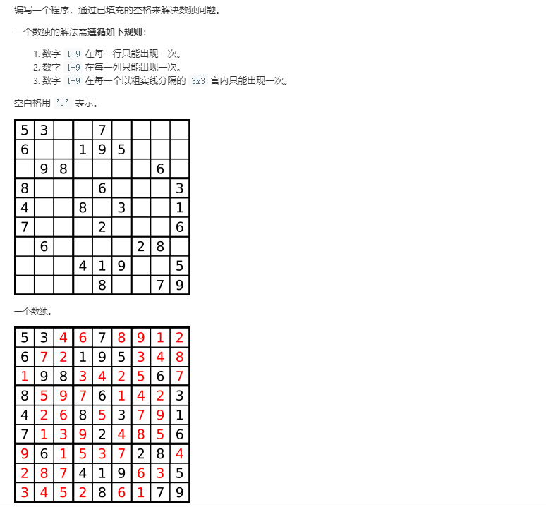
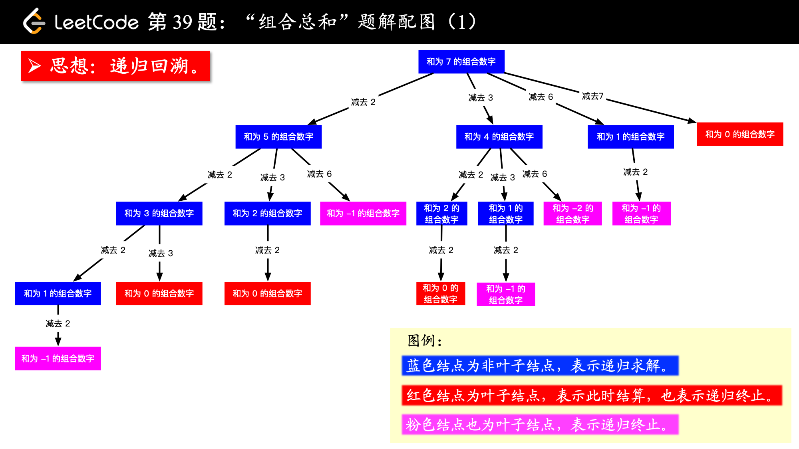
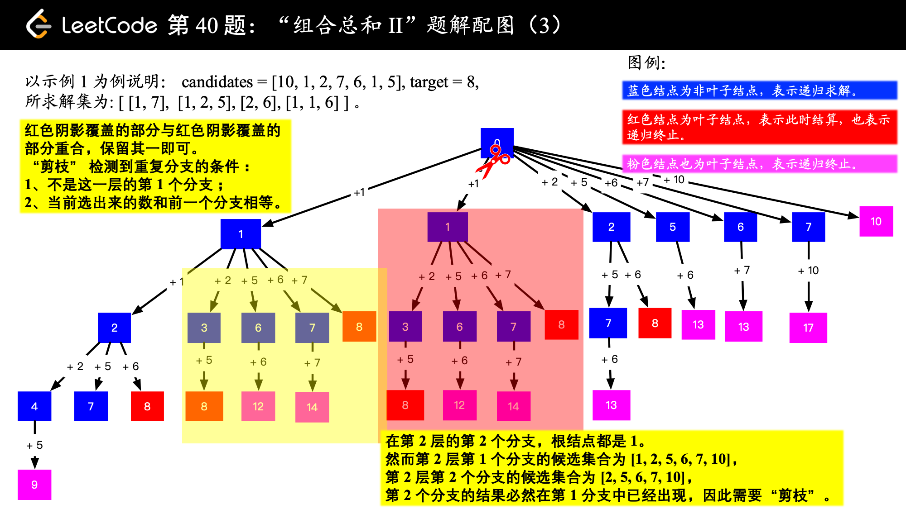
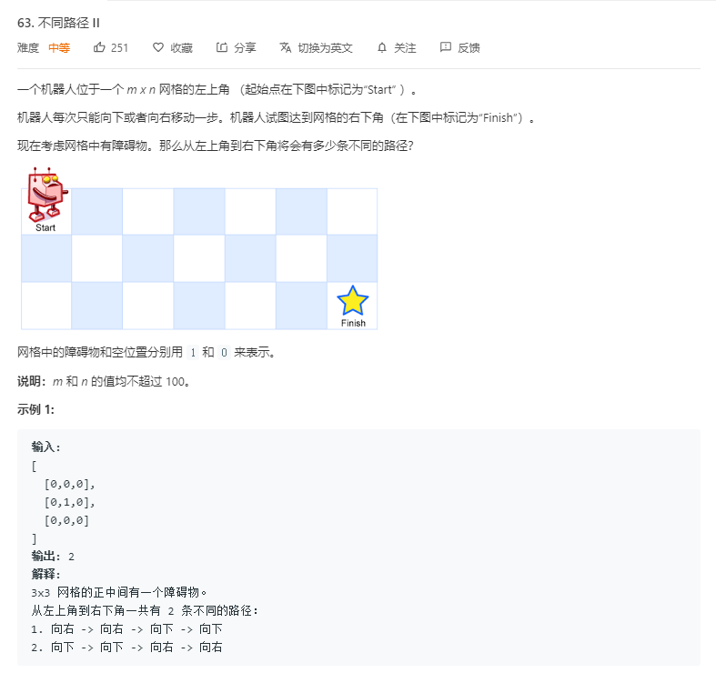
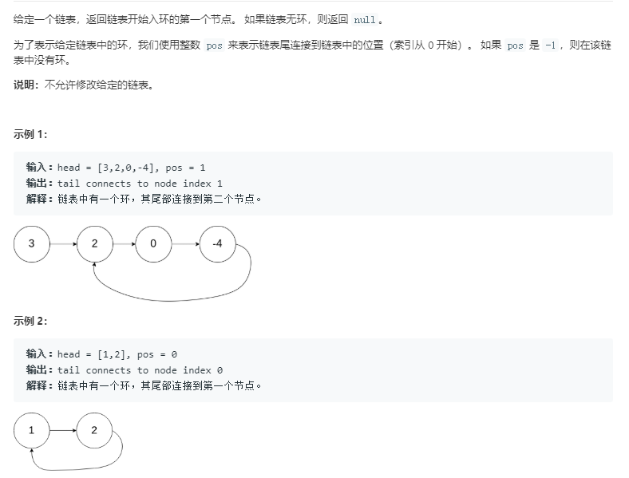
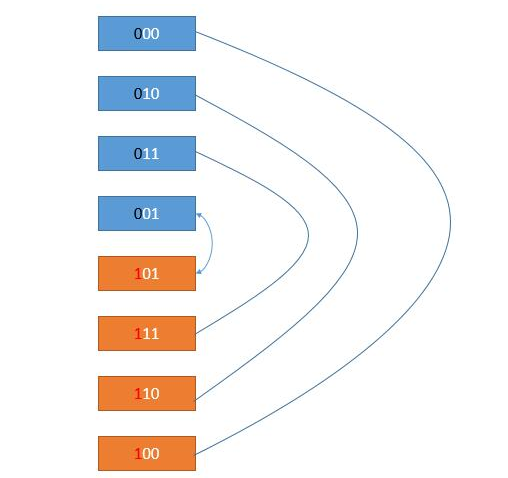
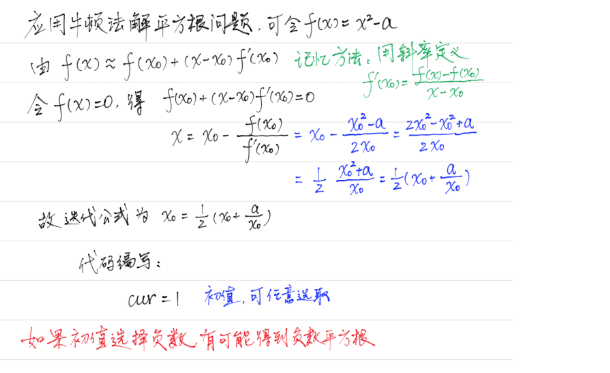

每日算法(LEETCODE,PYTHON3)
2020.3.2 （2 medium）
第3题 无重复的字符的最长字串
思路1 动态规划
我的最初思路：可以采用动态规划法（区间DP），从区间为2的子串开始计算无重复字符的长度，接着计算下个更大的区间，依次类推，直到区间长度等于字符串长度。
空间复杂度优化：这道题的动态规划状态矩阵中，可以发现有一半的空间（对角线以下）全部为0，所以可以压缩。
时间复杂度优化：分析后发现，这道题其实不需要动态规划，因为本质上没有重叠子问题。我尝试了两层循环遍历字符串的所有子串，一旦出现重复就可以跳出与当前最大长度比较，后面的子串不用再比较了，必有重复的字符。时间复杂度$O(N^2)$
思路2 滑动窗口法（字符串题目的常用方法，之前在TCP协议中学习过）
使用左右两个指针维护一个无重复字符的窗口，两个指针初始都在0处。通过右指针不断向右延伸添加新的字符，并记录当前窗口大小，每次与当前最大值比较，如果大于当前最大值，则可以更新。当窗口延伸至新字符已存在于窗口内时。把窗口左侧的字符不断移除（左指针收缩），直到当前窗口无重复子串。继续滑动窗口，直到右指针触及字符串尾部，此时可以输出当前最大长度即可。
滑动窗口法减少了对字符串的重复遍历。
class Solution:
def lengthOfLongestSubstring(self, s: str) -> int:
if not s:return 0 #字符串为空的处理
left = 0
lookup = []
n = len(s)
max_len = 0
cur_len = 0
for i in range(n):
cur_len += 1
if s[i] in lookup:
pos=len(lookup)-lookup[::-1].index(s[i]) #寻找重复字符出现在窗口内的最后一次位置，直接将左指针移动到该位置后面即可。
lookup=lookup[pos:]
left += pos
cur_len -= pos
if cur_len > max_len:max_len = cur_len
lookup.append(s[i])
return max_len第4题 寻找两个有序数组的中位数

思路1 指针遍历
我的方法：归并排序的思想，通过设置两个指针对两个有序数组进行归并排序，若已排序到中位数位置，则输入当前指针指向的数。
缺点：时间复杂度$O(M+N)$，较高。空间复杂度可以优化至$O(1)$，即只存当前数和前一个数。
要想获得log级别的时间复杂度，需要使用二分法或者堆。
class Solution:
def findMedianSortedArrays(self, nums1: List[int], nums2: List[int]) -> float:
mid_pos=(len(nums1)+len(nums2)-1)/2
p=0
q=0
li=[]
count=-1
while (p!=len(nums1))and(q!=len(nums2)):
if (nums1[p]<=nums2[q]):
li.append(nums1[p])
count+=1
p+=1
if (count>=mid_pos):
if mid_pos%1!=0:
return (li[-1]+li[-2])/2
else:
return li[-1]
else:
li.append(nums2[q])
count+=1
q+=1
if (count>=mid_pos):
if mid_pos%1!=0:
return (li[-1]+li[-2])/2
else:
return li[-1]
if (p==len(nums1)):
for i in range(q,len(nums2)):
li.append(nums2[i])
count+=1
if (count>=mid_pos):
if mid_pos%1!=0:
return (li[-1]+li[-2])/2
else:
return li[-1]
elif (q==len(nums2)):
for i in range(p,len(nums1)):
li.append(nums1[i])
count+=1
if (count>=mid_pos):
if mid_pos%1!=0:
return (li[-1]+li[-2])/2
else:
return li[-1]思路2 递归二分
为了使时间复杂度指数倍地下降，我们以数组[1，3，4，9]和[1，2，3，4，5，6，7，8，9，10]为例。计算得知：（1+14）/2=7.5，所以二者合并后的中位数为：第7小数和第8小数的平均值。
首先，我们学习一种二分法求解两个有序数组合并后第k小的数的方法，我们以第7小数为例：
1.先计算7整除2的商为3，然后比较第一个数组和第二个数组的第3个数（如果某个数组的元素不足3个，则比较它的最后一个数）。将较小的那个数及之前所有的数从所在的数组中去除。（此时它们必在合并后前6小的数中，具体证明可以自己推导一遍）。
2.此时，求解第7小的数变为：在更新后的两个数组中求解第4小的数（因为已经确定了3个）。
3.计算4整除2的商为2，然后比较两个数组的第2个数，与第1步中类似，将较小的数及之前的所有数从所在数组中删除。
4.此时，求解第4小的数变为：在更新后的两个数组中求解第2小的数（因为又确定了2个）。
5.重复以上过程，直到问题变为求解第1小的数，这时比较两个数组中的第1个数，返回较小值即可。
通过以上算法，我们可以用二分删除法计算出合并后第7小数和第8小数，然后便可计算中位数。
- 时间复杂度:每进行一次循环，我们就减少 k/2 个元素，所以时间复杂度是 $O(log(k))$，而 k=（m+n）/2，所以最终的复杂也就是 O（log（m+n））。
class Solution:
def findk(self,nums1,nums2,k):#求解合并后第k小数
m=k//2
if (len(nums1)>len(nums2)):#保证第一个数组较小
return self.findk(nums2,nums1,k)
if (len(nums1)==0):#如果第一个数组为空，直接返回第二个数组的第k个数即可
return nums2[k-1]
i=min(len(nums1),m)#防止第一个数组长度不足m
if (k==1):#如果求解第1小数，则直接比较二者第1个数即可
return min(nums1[0],nums2[0])
if (nums1[i-1]>nums2[m-1]):#删除第二个数组的前m个数，再递归查找
return self.findk(nums1,nums2[m:],k-m)
else:#删除第一个数组的前i个数，再递归查找
return self.findk(nums1[i:],nums2,k-i)
def findMedianSortedArrays(self, nums1: List[int], nums2: List[int]) -> float:
if (len(nums1)+len(nums2)+1)%2!=0:#数组总长为偶数
return (self.findk(nums1,nums2,int((len(nums1)+len(nums2)+1)/2))+self.findk(nums1,nums2,int((len(nums1)+len(nums2)+1)/2)+1))/2
else:#数组总长为奇数
return self.findk(nums1,nums2,int((len(nums1)+len(nums2)+1)/2))- 空间复杂度:O（1）。因为这里使用了尾递归！
什么是尾递归
以递归方式实现阶乘函数的实现：
int recsum(int n) {
if (n < 0)
return 0;
else if(n == 0 || n == 1)
return 1;
else
return n * fact(n - 1);
}以尾递归方式实现阶乘函数的实现：
int tailrecsum(int n, int res=0)
{
if (n < 0)
return 0;
else if(n == 0)
return res;
else
return facttail(n - 1, n + res);
}非尾递归，下一个函数结束以后此函数还有后续，所以必须保存本身的环境以供处理返回值。
尾递归，进入下一个函数不再需要上一个函数的环境了，得出结果以后直接返回。
尾递归的判断标准是函数运行最后一步是否调用自身，而不是是否在函数的最后一行调用自身。
上述例子中：
递归方式的倒数第二步是调用自身求解recsum（n-1），而最后一步是将recsum（n-1）的结果与n相乘并返回，所以rescum(n)的运算依赖于rescum（n-1）的运算。需要将本层函数压栈保存，当计算完最后一层后，再进行层层返回，得出结果。
尾递归方式的最后一步就是调用自身求解n-1时的结果，并将当前层的结果作为参数传入下一层，不需要再返回当前层进行运算。下层计算结果对上层“无用”（上一层运算已经做完，不依赖后续的递归），为了效率，可以直接将下一层需要的空间覆盖在上一层上。
总结：
尾递归，比线性递归多一个参数，这个参数是上一次调用函数得到的结果；所以，关键点在于，尾递归每次调用都在收集结果，避免了线性递归不收集结果只能依次展开消耗内存的坏处。
使用尾递归可以带来一个好处：因为进入最后一步后不再需要参考外层函数（caller）的信息，因此没必要保存外层函数的stack，递归需要用的stack只有目前这层函数的，因此避免了栈溢出风险。
本题中，所有递归调用都是当前层递归的最后一步，所以不需要额外的栈空间保存当前层，时间复杂度为O（1）。
2020.3.3 （2 medium）
第5题 最长回文子串
思路1：
区间动态规划+状态空间压缩，利用区间首尾字符是否相等，且去除首尾字符后的子串是否为回文串，来判断当前区间是否为回文子串。
时间复杂度：$O(N^2)$
空间复杂度：$O(N^2)$（可以压缩一半）
思路2：
中心扩展法，不需要额外的状态矩阵。对于一个长度为n的字符串，有2n-1个中心（奇偶回文串分类讨论）可以选取，由中心向两侧扩散寻找该中心所能构成的最长回文子串，若大于当前最大值，则将最大值替换为当前长度。
时间复杂度：$O(N^2)$
空间复杂度：$O(1)$
class Solution:
def longestPalindrome(self, s: str) -> str:
max_length=''
for i in range(len(s)):
if (i!=len(s)-1):
if len(self.expandcenter(s,i,i))>len(max_length):
max_length=self.expandcenter(s,i,i)
if len(self.expandcenter(s,i,i+1))>len(max_length):
max_length=self.expandcenter(s,i,i+1)
else:
if len(self.expandcenter(s,i,i))>len(max_length):
max_length=self.expandcenter(s,i,i)
return max_length
def expandcenter(self,s,l,r):#中心扩展法向两侧搜索判断
if (l==r):#奇回文串
length=1
while True:
l-=1
r+=1
if (l>=0)and(r<=len(s)-1)and(s[l]==s[r]):
length+=2
else:
return s[l+1:r]
else:#偶回文串
length=0
while True:
if (l>=0)and(r<=len(s)-1)and(s[l]==s[r]):
length+=2
else:
return s[l+1:r]
l-=1
r+=1进阶算法：
Manacher算法，时间复杂度只有$O(N)$，但比较复杂。可以参考https://www.jianshu.com/p/392172762e55
第6题 Z 字形变换

思路1：
通过观察变换前后的字符串，利用规律求解，直接使用下标运算。
class Solution:
def convert(self, s: str, numRows: int) -> str:
a=2*numRows-2
result=''
if (a==0):
return s
for i in range(numRows):
t=i
while(t<len(s)):
result+=s[t]
delta=2*(numRows-i-1)
if (i!=0) and (t+delta<len(s)) and(delta>0):
result+=s[t+delta]
t+=a
return result时间复杂度：$O(N)$
空间复杂度：$O(1)$
思路2
按顺序遍历字符串，并设置与行数相等的数组。遍历时，按照Z字形变化的格式放入对应的数组（行数先加1，遍历到底部再减1，遍历到顶部再加1，直到遍历完）
class Solution:
def convert(self, s: str, numRows: int) -> str:
if numRows < 2: return s
res = ["" for _ in range(numRows)]
i, flag = 0, -1
for c in s:
res[i] += c
if i == 0 or i == numRows - 1: flag = -flag
i += flag
return "".join(res)2020.3.4 （1 hard 1 medium）
第10题 正则表达式匹配

思路:
本题可以用递归求解，但时空复杂度很高。
考虑到本题符合动态规划的两个基本要求：（1）重叠子问题，（2）最优子结构。所以本题可以使用动态规划来求解。
解决可递归问题的三种方法：
- 递归：自顶向下，代码简单，但是复杂度高，可能会进行重复的计算，同时会使用大量的栈空间。
- 备忘录：自顶向下，将递归中的子问题求解结果保存起来，防止重复计算，降低了时间复杂度，但栈空间的消耗依然存在。
- 动态规划：自底向上，使用状态矩阵，由子问题通过状态转移方程递推出最后的结果。
本题中，可以使用状态矩阵$dp(i,j)$表示text[i:]和pattern[j:]是否能匹配。我们可以用更短的字符串匹配问题来表示原本的问题。
当首字母匹配且第二个字母为”*”时，可以尝试转移到匹配0次（目标串不变，模式串变）或1次（目标串变，模式串不变，因为此时可以多次匹配）的状态矩阵。
当首字母不匹配且第二个字母为”*”时，转移到匹配0次（目标串不变，模式串变）的状态矩阵。
首字母匹配且第二个字母不为”*”时，转移到首字母匹配1次（目标串和模式串都变）的状态矩阵。
否则，当前状态为False，即无法匹配。
$dp(-1,-1)$说明此时模式串和目标串完成了全匹配，可以成功，默认为True。
class Solution(object):
def isMatch(self, text, pattern):
dp=[[False for x in range(len(pattern)+1)] for x in range(len(text)+1)]
dp[-1][-1]=True #两个字符串都为空必然匹配
for i in range(len(text),-1,-1): #为什么i从len(text))开始，而j从len(pattern)-1开始：字符串为空，正则表达式不为空，可能匹配成功（存在*），而正则表达式为空，字符串不为空，必然不可能匹配成功
for j in range(len(pattern)-1,-1,-1):
f_match=(i<len(text))and(pattern[j] in [text[i],'.']) #第一个对i的限制条件是为了防止后面访问text[i]时数组越界
if (j+1<len(pattern))and(pattern[j+1]=='*'):
if f_match:
dp[i][j]=dp[i][j+2] or dp[i+1][j]
else:
dp[i][j]=dp[i][j+2]
else:
if f_match:
dp[i][j]=dp[i+1][j+1]
return dp[0][0]第11题 盛最多水的容器

思路:
双指针法（这种从两端向内收缩的双指针我叫做双侧指针，如第3题中滑动窗口的同一侧出发的指针我叫做快慢指针）。
由于容器的容积只与短板有关，我们可以使用两个指针从数组的两侧每一次向内收缩短板，计算当前的容积，直到两个指针相交。
为什么只收缩短板：如果收缩长板，那么移动后的板长要么小于移动前的短板长度，要么大于短板长度，前者会使容积变小，后者会使容积不变，所以我们只有移动短板才可能使容积变大。
时间复杂度：$O(N)$
空间复杂度：$O(1)$
class Solution:
def maxArea(self, height: List[int]) -> int:
max_v=0
left=0
right=len(height)-1
while (left<right):
v=min(height[left],height[right])*(right-left)
if v>max_v:
max_v=v
if (height[left]<height[right]):
left+=1
else:
right-=1
return max_v2020.3.5 （4 medium）
第12题 整数转罗马数字

思路:
贪心算法，每次取当前能够匹配的最大罗马数字进行选择。类似于用最少的纸币凑出整数。
class Solution:
def intToRoman(self, num: int) -> str:
# 把阿拉伯数字与罗马数字可能出现的所有情况和对应关系，放在两个数组中
# 并且按照阿拉伯数字的大小降序排列，这是贪心选择思想
nums = [1000, 900, 500, 400, 100, 90, 50, 40, 10, 9, 5, 4, 1]
romans = ["M", "CM", "D", "CD", "C", "XC", "L", "XL", "X", "IX", "V", "IV", "I"]
index = 0
res = ''
while index < 13:
# 注意：这里是等于号，表示尽量使用大的"面值"
while num >= nums[index]:
res += romans[index]
num -= nums[index]
index += 1
return res第15题 三数之和

思路:
在一个有序数组中求解两个数之和，可以使用暴力遍历的方法，但时间复杂度很高。在这里，我们可以使用双侧指针法，先在数组两端各固定一个指针。当两数之和小于target时，左指针加1（由于是有序数组，会使和变大），当两数之和大于target时，右指针减1，等于target时，保存结果，并左右指针同时向内收缩。
那么，知道了两数之和问题的解决方案后，我们可以求解三数之和（本质上，任意n数之和都可以采取相同的方法）。我们先对数组进行排序，然后固定一个数，便可将问题转化为两数之和，接着对于该数之后的所有数进行两数之和的求解。求解完成后，我们可以接着固定下一个数，直到求出所有结果。
要注意的问题：
结果的去重（求解两数之和时，相同的数字不应重复使用。同时，固定的数若等于上个数，则他的所有情况都被上个数的遍历所包含，也可以跳过）。
性能的提升（剪枝，当右指针的数小于0时或者固定的数大于0时，三数之和必定不等于0，因为此时三个数都大于0或者都小于0）
时间复杂度：$O(N^2)+O(NlogN)=O(N^2)$
空间复杂度：$O(1)$
class Solution {
public static List<List<Integer>> threeSum(int[] nums) {
List<List<Integer>> ans = new ArrayList();
Arrays.sort(nums); # 排序
int len = nums.length;
if(nums == null || len < 3) return ans;
for (int i = 0; i < len ; i++) {
if(nums[i] > 0) break; // 如果当前数字大于0，则三数之和一定大于0，所以结束循环
if(i > 0 && nums[i] == nums[i-1]) continue; // 去重
int L = i+1;
int R = len-1;
while(L < R){
if (nums[R]<0){
break;
}
int sum = nums[i] + nums[L] + nums[R];
if(sum == 0){
ans.add(Arrays.asList(nums[i],nums[L],nums[R]));
while (L<R && nums[L] == nums[L+1]) L++; // 去重
while (L<R && nums[R] == nums[R-1]) R--; // 去重
L++;
R--;
}
else if (sum < 0){
while (L<R && nums[L] == nums[L+1]){
L++; // 去重;
}
L++;
}
else if (sum > 0) {
while (L<R && nums[R] == nums[R-1]){
R--; // 去重
} // 去重
R--;
}
}
}
return ans;
}
}第16题 最接近的三数之和

思路:
与第15题几乎没有区别，只是双指针收缩时，每次记录当前的三数之和，看与结果的差值是否为当前最小，最小则修改当前的最接近的三数之和。当差值为0时可以直接返回。
class Solution:
def threeSumClosest(self, nums: List[int], target: int) -> int:
nums.sort()
closest=nums[0]+nums[1]+nums[2]
diff=abs(closest-target)
for i in range(len(nums)-2):
if i>0 and nums[i]==nums[i-1]:
continue
L=i+1
R=len(nums)-1
while (L<R):
summa=nums[i]+nums[L]+nums[R]
if abs(summa-target)<diff:
closest=summa
diff=abs(closest-target)
if (summa>target):
R-=1
elif (summa<target):
L+=1
else:
return summa
return closest第18题 四数之和
思路:
任意n数之和都求解，都可以先固定一个数，转化为n-1数之和问题，逐步转化，直到最后变为求解二数之和。这里的四数之和也是类似的道理，其去重的思想与三数之和也是一样的。
class Solution {
public static List<List<Integer>> fourSum(int[] nums,int target) {
List<List<Integer>> ans = new ArrayList();
Arrays.sort(nums); // 排序
int len = nums.length;
if(nums == null || len < 4) return ans;
for (int i = 0; i < len-3 ; i++) {//多固定了一个数，将问题转化为内部的三数之和
if(i > 0 && nums[i] == nums[i-1]) continue; // 去重
for (int j =i+1;j<len-2;j++){
if(j > i+1 && nums[j] == nums[j-1]) continue; // 去重
int L = j+1;
int R = len-1;
while(L < R){
int sum = nums[i] + nums[j]+nums[L] + nums[R];
if(sum == target){
ans.add(Arrays.asList(nums[i],nums[j],nums[L],nums[R]));
while (L<R && nums[L] == nums[L+1]) L++; // 去重
while (L<R && nums[R] == nums[R-1]) R--; // 去重
L++;
R--;
}
else if (sum < target) L++;
else if (sum > target) R--;
}
}
}
return ans;
}
}2020.3.6 （2 medium）
第17题 电话号码的字母组合

思路1:
打表+队列，类似于BFS。
class Solution:
def letterCombinations(self, digits: str) -> List[str]:
dic={'2':['a','b','c'],'3':['d','e','f'],'4':['g','h','i'],'5':['j','k','l'],'6':['m','n','o'],'7':['p','q','r','s'],'8':['t','u','v'],'9':['w','x','y','z']}
result=[]
for char in digits:
if result==[]:
result=dic[char]
else:
l=len(result)
for i in range(l):
st=result[0]
result=result[1:]#出队
for c in dic[char]:
result.append(st+c)#入队
return result时间复杂度:$O(3^M+4^N)$
思路2:
这里也可以使用回溯+递归的方法，将其看作是一个类似于全排列的问题。
class Solution:
def letterCombinations(self, digits):
"""
:type digits: str
:rtype: List[str]
"""
phone = {'2': ['a', 'b', 'c'],
'3': ['d', 'e', 'f'],
'4': ['g', 'h', 'i'],
'5': ['j', 'k', 'l'],
'6': ['m', 'n', 'o'],
'7': ['p', 'q', 'r', 's'],
'8': ['t', 'u', 'v'],
'9': ['w', 'x', 'y', 'z']}
def backtrack(combination, next_digits):
# if there is no more digits to check
if len(next_digits) == 0:
# the combination is done
output.append(combination)
# if there are still digits to check
else:
# iterate over all letters which map
# the next available digit
for letter in phone[next_digits[0]]:
# append the current letter to the combination
# and proceed to the next digits
backtrack(combination + letter, next_digits[1:])//这里可以看作是进行了回溯，因为直接使用了新的字符串，所以不用恢复状态
output = []
if digits:
backtrack("", digits)
return output第19题 删除链表的倒数第N个节点

思路：
快慢指针法+dummy head。
快指针在前遍历链表，慢指针在后用于保存快指针的前第N个节点。当快指针遍历到链表的尾部，则可以使用慢指针删除节点。这里需要注意，当要删除的节点是第一个节点时，若使用题目中给出的头指针，需要分类讨论进行操作。为了不进行分类讨论，我们在链表开头处添加一个空的头结点（dummy head）。
时间复杂度:$O(N)$
空间复杂度:$O(1)$
# Definition for singly-linked list.
# class ListNode:
# def __init__(self, x):
# self.val = x
# self.next = None
class Solution:
def removeNthFromEnd(self, head: ListNode, n: int) -> ListNode:
fore_head=ListNode(0)
fore_head.next=head
p=fore_head
back_n=fore_head
while (p.next!=None):
p=p.next
if (n>0):
n-=1
elif (n==0)://n减到0时，才能移动慢指针，否则说明前第n个元素越界
back_n=back_n.next
back_n.next=back_n.next.next
return fore_head.next2020.3.7 （1 medium 1 hard）
第22题 括号生成
思路:
二叉树的先根遍历+剪枝。使用count记录当前字符串内左括号个数减去右括号个数的值，当count<0或者count>n，n为剩余的目标括号对数时，进行剪枝。
class Solution:
def generateParenthesis(self, n: int) -> List[str]:
count=0
st=''
result=[]
def dp(count,n,st):
if (0<=count<=n):#剪枝
if (n==0):#满足要求
result.append(st)
else:#先根遍历
dp(count-1,n-1,st+')')
dp(count+1,n,st+'(')
dp(count,n,st)
return result第23题 合并K个排序链表
思路:
分治法，类似于标准归并排序的思想。先将相邻的链表两两合并，得到个数为原来一半的新链表，接着继续两两合并，重复直到只剩下最后一个链表，即为最终的结果。
两两合并的方法，采用的是双指针法，即两个链表各设置一个指针，用于比较和插入结果链表。
- 时间复杂度：$O(NlogK)$，N是所有链表中元素的总和，K是链表个数。
# Definition for singly-linked list.
# class ListNode:
# def __init__(self, x):
# self.val = x
# self.next = None
class Solution:
def mergeKLists(self, lists: List[ListNode]) -> ListNode:
def merge(list1,list2):#两两合并
p=list1
q=list2
head=ListNode(0)
m=head
while (p!=None) and (q!=None):
if p.val<q.val:
m.next=p
m=m.next
p=p.next
else:
m.next=q
m=m.next
q=q.next
if (p==None):
m.next=q
elif (q==None):
m.next=p
return head.next
amount = len(lists)
interval = 1
while interval < amount:#两两合并
for i in range(0, amount - interval, interval * 2):
lists[i] = merge(lists[i], lists[i + interval])
interval *= 2
return lists[0] if amount > 0 else lists为什么不使用逐一合并的算法呢？那样合并的过程写起来会很简单？
逐一合并的时间复杂度：$O(NK)$
因为这里的两两排序实际上运用了分治法的思想，逐一合并的话，每一次合并在最坏的情况下都需要比较N个节点，而两两合并，每一轮合并的最坏情况才需要比较N个节点。逐一合并需要进行（K-1）次，而两两合并仅需要进行（logN）轮，所以时间复杂度大大降低。

2020.3.8 （1 hard 1 medium）
第24题 两两交换链表中的节点

思路:
本质上就是两个一组翻转链表。可以使用头插法+dummy head。使用三个指针pre、p、q，将q结点插入至p结点之前，即完成了一次交换。然后移动指针至下两个节点处，继续交换。
# Definition for singly-linked list.
# class ListNode:
# def __init__(self, x):
# self.val = x
# self.next = None
class Solution:
def swapPairs(self, head: ListNode) -> ListNode:
h=ListNode(0)#dummy head
h.next=head
pre=h
p=head
if (head==None):
return head
else:
q=p.next
while (p!=None)and(q!=None):
p.next=q.next
q.next=p
pre.next=q
#两个一组翻转链表
pre=p
p=p.next
if p!=None:
q=p.next
#移动至下两个节点进行操作
return h.next第25题 K 个一组翻转链表

思路:
上一题的扩展，使用dummy head+头插法即可。
- pre指针：当前组的第一个节点的前一个节点，用于插入元素。
- q指针： 要插到头部的那个节点。
- p指针： q节点的前一个节点，用于删除q节点。
# Definition for singly-linked list.
# class ListNode:
# def __init__(self, x):
# self.val = x
# self.next = None
class Solution:
def reverseKGroup(self, head: ListNode, k: int) -> ListNode:
h=ListNode(0)
h.next=head
pre=h
p=head
count=0
t=pre.next
while(t!=None):#统计当前链表的长度
count+=1
t=t.next
if (head==None):
return head
else:
q=p.next
while (pre!=None) and (p!=None) and (q!=None):
if (count<k):#当前链表的剩余长度是否可以进行翻转
return h.next
for i in range(k-1):
p.next=q.next
q.next=pre.next
pre.next=q
q=p.next
#当前组内的节点进行头插法翻转
pre=p
p=pre.next
if p==None:
return h.next
q=p.next
count-=k
#指针移动至下一组开始处
return h.next2020.3.9 （3 easy）
第26题 删除排序数组中的重复项
思路:
快慢指针法，慢指针指向当前数组内无重复的子序列的最后一项，快指针用于遍历整个数组。
- 当快指针指向的元素与慢指针指向的元素不相等时，将该元素加入至慢指针维护的无重复子序列中，慢指针和快指针都加1。
- 当元素相等时，快指针直接遍历下一个元素。
- 时间复杂度：$O(N)$
class Solution:
def removeDuplicates(self, nums: List[int]) -> int:
slow=0
for fast in range(1,len(nums)):
if (nums[slow]!=nums[fast]):
slow+=1
nums[slow]=nums[fast]
return slow+1#由于慢指针指向的是子序列最后一项的下标，子序列长度需要加1第27题 移除元素
思路:
同样使用快慢指针法，快指针用于遍历，慢指针维护一个没有target元素的子序列，指向该子序列末尾的后一个元素。
class Solution:
def removeElement(self, nums: List[int], val: int) -> int:
slow=0
for fast in range(len(nums)):
if (nums[fast]!=val):
nums[slow]=nums[fast]
slow+=1
return slow这里，慢指针与26题有一些区别，27题的慢指针指向的是符合要求的子序列的后一项，而26题是最后一项。这是因为26题中，单个元素不可能重复，而27题中，单个元素也可能是需要被移除的。
第28题 实现 strStr()
思路:
KMP算法，具体可以看这里：KMP算法总结
2020.3.10 （1 hard 1 medium）
第29题 两数相除
思路:
我们最初很容易可以想到使用累减法来解决除法问题，但这会很慢，所以我们需要使用递归方法加速累减。
递归的具体过程是，在递归函数内部，我们在保证当前除数不大于被除数的情况下，使除数不断翻倍，并记录倍数。当除数即将大于当前被除数时，我们停止翻倍，并记录下当前的倍数，加到商上。此时，我们将除数减去当前的被除数，剩余的结果重复之前的过程，直到剩余的数小于原始的除数。
本质上，这题的思想类似于快速幂算法，都是使用翻倍来加速，利用二分思想优化至logN级别的时间复杂度。因为一个一个减肯定不如翻倍翻倍减快速。
特别的，这道题还需要考虑补码的机制问题，当被除数等于$-2^31$时，商最大只能等于$2^31-1$。
class Solution:
def divide(self, dividend: int, divisor: int) -> int:
if dividend==0:#防止除数为0
return 0
if divisor==1:#除数为1，直接返回结果，加速运算
return dividend
if divisor==-1:#除数为-1，直接返回结果的负数，加速运算
if dividend==-2**31:#考虑integer的溢出
return 2**31-1
else:
return -dividend
flag=-1
if ((dividend>0) and (divisor>0)) or ((dividend<0) and (divisor<0)):#考虑符号
flag=1
dividend=abs(dividend)
divisor=abs(divisor)
def div(result,a):#递归求解
if (a<divisor):
return result
count=1
result+=count
b=divisor
a-=b
while (b+b)<=a:#翻倍累减
count+=count
result+=count
b+=b
a-=b
return div(result,a)#尾递归，减少栈空间调用
return flag*(div(0,dividend))第30题 串联所有单词的子串

思路:
滑动窗口法+哈希表。
由于题目中提到了所有单词等长，那么我们对于n个长度为k的单词可以维护一个长度为k*n的滑动窗口。接着，我们利用哈希表建立words列表中的单词和单词数目的映射。然后，我们可以使用滑动窗口进行滑动匹配，每次移动一个单词的长度。对于窗口内部，我们统计每k长度的字符串，若出现了不在哈希表的键中的字符串，或者字符串出现的次数大于哈希表中对应的值时，说明此窗口失配，进行下一次匹配，否则，记录下窗口起始位置。
class Solution:
def findSubstring(self, s: str, words: List[str]) -> List[int]:
dic={}
result=[]
if s=="" or words==[]:#目标串或者待匹配列表为空
return []
for w in words:#建哈希表（字典）
if w in dic.keys():
dic[w]+=1
else:
dic[w]=1
l=len(words[0])
window=l*len(words)
for i in range(len(s)-window+1):#滑动匹配
end=i+window
tmp=dic.copy()
flag=1
for j in range(i,end,l):
w=s[j:j+l]
if w not in tmp.keys():
flag=0
break
tmp[w]-=1
if tmp[w]<0:
flag=0
break
if flag:
result.append(i)
return result2020.3.11 （2 medium 1 hard）
第31题 下一个排列
思路:
核心思想：
- 我们希望下一个数比当前数大，这样才满足“下一个排列”的定义。因此只需要将后面的「大数」与前面的「小数」交换，就能得到一个更大的数。比如 123456，将 5 和 6 交换就能得到一个更大的数 123465。
- 我们还希望下一个数增加的幅度尽可能的小，这样才满足“下一个排列与当前排列紧邻“的要求。为了满足这个要求，我们需要：
- 在尽可能靠右的低位进行交换，需要从后向前查找
- 将一个 尽可能小的「大数」 与前面的「小数」交换。比如 123465，下一个排列应该把 5 和 4 交换而不是把 6 和 4 交换
- 将「大数」换到前面后，需要将「大数」后面的所有数重置为升序，升序排列就是最小的排列。以 123465 为例：首先按照上一步，交换 5 和 4，得到 123564；然后需要将 5 之后的数重置为升序，得到 123546。显然 123546 比 123564 更小，123546 就是 123465 的下一个排列
class Solution:
def nextPermutation(self, nums: List[int]) -> None:
"""
Do not return anything, modify nums in-place instead.
"""
def swap(a,b):#交换数组中的两个元素
temp=nums[a]
nums[a]=nums[b]
nums[b]=temp
p=len(nums)-1
while (p>0):
if (nums[p]>nums[p-1]):从后向前遍历，找到从后向前看的第一个下降的位置
min_pos=p
for i in range(len(nums)-1,p,-1):#搜索最小的大数并交换
if (nums[i]>nums[p-1]):
min_pos=i
break
swap(min_pos,p-1)
for i in range(int((len(nums)-p)/2)):#原地翻转，将大数后所有数重置为升序
swap(p+i,len(nums)-i-1)
break
else:
p-=1
if (p<=0):#如果为降序数组，则重置为升序数组
nums.sort()
return nums这类题一定要把情况自己模拟一遍，寻找下一个转移的规律。
第32题 最长有效括号
思路:
双向滑动窗口。
使用双指针维护一个滑动窗口。先从左向右滑动窗口，左右指针初始为0，使用一个变量count来存储当前窗口内左括号数量减去右括号数量的值。右指针不断向前遍历，当遍历到当前窗口内count<0时，将左右指针都移动到当前右指针的下一个位置，重置窗口，当count==0时，使用当前窗口长度比较并尝试更新最大长度，当count>0时，右指针继续向前遍历。
上述滑动完成后，再反向从右往左滑动一次窗口。此时的结果即为最大长度。
class Solution:
def longestValidParentheses(self, s: str) -> int:
p=0
q=0
count=0
max_len=0
if (len(s)<2):
return 0
while (q<len(s)):
if (s[q]=="("):
count+=1
elif (s[q]==")"):
count-=1
if (count<0):
q+=1
p=q
count=0
else:
if (count==0):
if (q-p+1)>max_len:
max_len=q-p+1
q+=1
#从左向右滑动
p=len(s)-1
q=len(s)-1
count=0
while (p >=0):
if (s[p] == "("):
count += 1
elif (s[p] == ")"):
count -= 1
if (count > 0):
p-= 1
q = p
count = 0
else:
if (count == 0):
if (q - p + 1) > max_len:
max_len = q - p + 1
p-= 1
#从右向左滑动
return max_len第33题 搜索旋转排序数组
思路:
由于题目要求时间复杂度在logN级别，所以必须是用二分法进行查找。但我们知道二分查找只适用于有序数组，所以我们需要使用嵌套二分。
首先，我们将数组从中间一分为二，根据旋转排序数组的性质，必然至少有一半有序。我们先判断左半数组是否有序，若有序，判断目标是否在它的范围内，若在，则在左半数组中二分查找，而不在，则去右半数组中二分查找。否则，即为右半数组有序，若目标在范围内，则在右半数组中二分，否则去左半数组中二分。
class Solution:
def search(self, nums: List[int], target: int) -> int:
left=0
right=len(nums)-1
while (left<=right):
mid=(left+right)//2
if nums[mid]==target:#中间数为目标
return mid
if (nums[left]<=nums[mid]):#左半数组有序
if (nums[left]<=target<=nums[mid]):#目标在左半数组中
right=mid-1
else:
left=mid+1
else:#右半数组有序
if (nums[mid]<=target<=nums[right]):#目标在右半数组中
left=mid+1
else:
right=mid-1
return -12020.3.12 （2 medium 1 hard）
第34题 在排序数组中查找元素的第一个和最后一个位置

思路:
由于时间复杂度控制在logN级别，所以很明显需要使用二分查找。
我们以二分查找获取左边界为例进行说明。首先，我们使用的是常规二分查找的框架，即比较目标与当前区间的中位数。不过常规二分查找是当目标大于中位数时进入右区间查找，小于中位数时进入左区间查找，等于中位数时返回当前中位数的位置。不同的是，此时我们需要查找的是元素的第一个位置。所以，我们需要进行这样的修改：当中位数等于目标时，目标元素的起始位置很明显要么在中位数处，要么在中位数左侧区间，此时我们直接进入左区间查找即可，其余的做法和常规二分查找一样。你可能会疑惑万一第一个位置就是中位数怎么办。不用担心，当遍历完左区间后无法再次找到目标元素，此时会在左区间的末尾尝试进入右区间，又回到了我们原先的中位数处。
二分查找右边界的方法同理，只是将中位数等于目标时改为进入右区间查找即可。
注意，当得到左右边界后还要判定是否合法。
通过两次二分，我们可以在$O(logN)$的时间复杂度内完成查找。
class Solution:
def searchRange(self, nums: List[int], target: int) -> List[int]:
if nums==[]:
return [-1,-1]
def getLeftBound(nums,target):#查找左边界
left=0
right=len(nums)-1
while (left<=right):
mid=(left+right)//2
if (nums[mid]>=target):
right=mid-1
else:
left=mid+1
if (left>=0) and (left<len(nums)) and (nums[left]==target):#左边界合法
return left
return -1
def getRightBound(nums,target):#查找右边界
left=0
right=len(nums)-1
while (left<=right):
mid=(left+right)//2
if (nums[mid]<=target):
left=mid+1
else:
right=mid-1
if (right>=0) and (right<len(nums)) and (nums[right]==target):#右边界合法
return right
return -1
return [getLeftBound(nums,target),getRightBound(nums,target)]第36题 有效的数独

思路:
使用三个二维数组，分别存放每一行、每一列、每一个子数独当前放置的值。依次遍历这81个格子，每次遍历时将非空格子中的数放入对应的行、列、子数独的列表中。若出现了重复，则说明当前数独无效。
- 时间复杂度：$O(1)$
- 空间复杂度：$O(1)$
class Solution:
def isValidSudoku(self, board: List[List[str]]) -> bool:
cols=[[] for x in range(9)]
rows=[[] for x in range(9)]
sons=[[] for x in range(9)]
for i in range(9):
for j in range(9):
if board[i][j]!='.':
if (board[i][j] in cols[j]) or (board[i][j] in rows[i]) or (board[i][j] in sons[(i//3)*3+j//3]):
return False
else:
cols[j].append(board[i][j])
rows[i].append(board[i][j])
sons[(i//3)*3+j//3].append(board[i][j])
return True第37题 解数独

思路:
递归+回溯。类似的问题还有走迷宫、皇后问题、全排列等，本质的思路都是去使用回溯算法递归的尝试每种可能的情况。
回溯算法模板如下：
def backtrack(…):
if (符合结束条件):
保存结果
else:
for 选择 in 选择列表：
if 选择合法：
进行选择
backtrack(…)#递归进入下一个位置进行选择
撤销选择
本题中，我们对每一个格子进行遍历，如果当前格子非空，我们便在“1”到“9”中选择合法的数字填入当前格子，并进入下一个格子继续选择。如果一直到最后一个格子都可以成功填入数字，则说明解完了数独，可以返回真。如果当前格子无法填入任何数字，则需要回溯至上一层递归函数，去恢复数独的状态，并选择下一个数字尝试填入。
判定当前数独矩阵是否合法，参考第36题即可。
class Solution:
def solveSudoku(self, board) -> None:
"""
Do not return anything, modify board in-place instead.
"""
cols=[[] for x in range(9)]
rows=[[] for x in range(9)]
sons=[[] for x in range(9)]
def could_place(i,j,value):#是否可以在当前格子放置value数字
if (value in cols[j]) or (value in rows[i]) or (value in sons[(i//3)*3+j//3]):
return False
return True
def place(i,j,value):#放置数字
cols[j].append(value)
rows[i].append(value)
sons[(i//3)*3+j//3].append(value)
board[i][j]=value
def remove(i,j,value):#移除数字
cols[j].remove(value)
rows[i].remove(value)
sons[(i//3)*3+j//3].remove(value)
board[i][j]="."
def DFS(i,j):#回溯函数
if i>8:#结束递归条件
return True
if board[i][j]==".":#当前格子是否为空
for value in range(1,10):#遍历选择
value=str(value)
if (could_place(i,j,value)):#如果选择合法
place(i,j,value)#进行选择
if (j==8):#判断是否走到行尾
if not(DFS(i+1,0)):#如果当前可以递归找到解，那么直接返回真，不需要再继续选择，否则回溯继续选择。
remove(i,j,value)
else:
return True
else:
if not(DFS(i,j+1)):
remove(i,j,value)
else:
return True
else:
if (j==8):
return DFS(i+1,0)
else:
return DFS(i,j+1)
return False
for i in range(9):#统计已经存在的数
for j in range(9):
if board[i][j]!='.':
if (board[i][j] in cols[j]) or (board[i][j] in rows[i]) or (board[i][j] in sons[(i//3)*3+j//3]):
return
else:
cols[j].append(board[i][j])
rows[i].append(board[i][j])
sons[(i//3)*3+j//3].append(board[i][j])
DFS(0,0)2020.3.13 （2 medium）
第39题 组合总和

思路:
递归回溯算法+剪枝
递归组合分解，每次选择候选数组中的一个元素，用目标值减去它。
- 若得到的结果大于0，说明还可以继续分解，将当前选择的元素加入至路径列表，并尝试继续分解。
- 如果当前结果等于0，说明分解成功，将当前选择的元素加入至路径列表，并将当前路径列表加入至结果列表。
- 如果当前结果小于0，说明无法再分解，特别地，当候选数组升序时，后面的元素很明显也无法分解，需要跳出循环。

此外，有可能出现重复的结果，即虽然路径不同，但元素相同。考虑到这一问题，尝试进行剪枝：
- 记录下当前选择的元素的下标，下一次选择元素从该下标开始。

class Solution:
def combinationSum(self, candidates: List[int], target: int) -> List[List[int]]:
result=[]
candidates.sort()
def back(re,index,target):
for i in range(index,len(candidates)):#遍历选择
num=candidates[i]
target_now=target-num
if target_now<0:
break
re.append(num)#选择
if target_now==0:
res=re[:]
result.append(res)
else:
back(re,i,target_now)
re.pop()#回溯恢复
back([],0,target)
return result第40题 组合总和2
思路:
和上一题类似，依然使用剪枝+递归回溯的思路来做。
有两个区别，一个是候选数组可能会出现重复，我们采用三数之和问题里类似的剪枝思路进行去重。第二个区别是数字不能重复使用，所以递归进行下一次元素的选择时，要从当前元素下标的下一个开始。

class Solution:
def combinationSum2(self, candidates: List[int], target: int) -> List[List[int]]:
result=[]
candidates.sort()
def back(re,index,target):
if (index<len(candidates)):
for i in range(index,len(candidates)):
if i!=index and (candidates[i]==candidates[i-1]):#去重
continue
target_now=target-candidates[i]
if (target_now<0):
break
re.append(candidates[i])
if (target_now==0):
result.append(re[:])
else:
back(re,i+1,target_now)#从下一元素开始遍历，防止数字重复使用
re.pop()
back([],0,target)
return result2020.3.14 （2 hard 1 medium）
第41题 缺失的第一个正数
思路:
我们很容易想到利用哈希表（即字典）进行统计，然后去寻找第一个缺失的正数。但是考虑到题目的要求为时间复杂度$O(N)$以及常数级别的空间复杂度，我们可以考虑将数组自身作为一个哈希表，对应的哈希函数为:
$$f(nums[i])=nums[i]-1$$
通过哈希函数，将可以进行映射的数组元素映射到对应位置上，然后依次遍历寻找第一个映射不正确的位置即可。
复杂度分析：
时间复杂度：$O(N)$，这里$N$是数组的长度。
说明：while 循环不会每一次都把数组里面的所有元素都看一遍。如果有一些元素在这一次的循环中被交换到了它们应该在的位置，那么在后续的遍历中，由于它们已经在正确的位置上了，代码再执行到它们的时候，就会被跳过。最极端的一种情况是，在第 1 个位置经过这个 while 就把所有的元素都看了一遍，这个所有的元素都被放置在它们应该在的位置，那么 for 循环后面的部分的 while 的循环体都不会被执行。平均下来，每个数只需要看一次就可以了，while 循环体被执行很多次的情况不会每次都发生。这样的复杂度分析的方法叫做均摊复杂度分析。空间复杂度：$O(1)$。
class Solution:
def firstMissingPositive(self, nums: List[int]) -> int:
def swap(pos1,pos2):
nums[pos1],nums[pos2]=nums[pos2],nums[pos1]
size=len(nums)
for i in range(size):
while (0<nums[i]<=size)and (nums[i]!=nums[nums[i]-1]):#当当前位置的数字可以进行哈希映射，并且不在对应位置时，与对应位置的数字交换。如果重复了或者无法映射（不在范围内），则不映射。
swap(i,nums[i]-1)
for i in range(size):#寻找第一个不符合映射规则的位置
if nums[i]!=i+1:
return i+1
return size+1#都符合，那么就输出下一个正数注:为什么使用nums[i]!=nums[nums[i]-1]来判断而不是i!=nums[i]-1？
因为后者无法处理重复的数字。
第42题 接雨水

思路
双指针+左右各一次遍历。从左向右遍历时，保证左指针指向的是短板。右指针不断向前遍历，每次右指针遇到长板后，计算此时所形成的容器的容积，再将左指针移到右指针处，右指针继续向前遍历。直到右指针遍历到数组末尾。然后再用相同的方式反向搜索一遍即可。将所有容积相加即为答案。
时间复杂度:两次遍历，$O(N)$。
空间复杂度：$O(1)$。
class Solution:
def trap(self, height: List[int]) -> int:
left=0
right=left+1
water=0
while (right<len(height)):#从左向右
if height[right]>=height[left]:
width=right-left-1
tmp=0
for i in range(left+1,right):#减去被柱子占用的体积
tmp-=height[i]
tmp+=width*height[left]
water+=tmp
left=right
right+=1
right=len(height)-1
left=right-1
while (left>=0):#从右向左
if height[left]>height[right]:
width=right-left-1
tmp=0
for i in range(left+1,right):
tmp-=height[i]
tmp+=width*height[right]
water+=tmp
right=left
left-=1
return water优化
实际上，这里并不需要两次遍历，因为从左向右和从右向左的遍历都会在最高的柱子处停下。所以我们可以同时从两侧开始逼近，每次让左右指针较小的那个移动。
同时，我们可以维护一个left_max和right_max，即左右指针当前遍历到的最高柱。利用它们可以计算当前格子的积水。
class Solution:
def trap(self, height: List[int]) -> int:
left_max=0
right_max=0
left=0
right=len(height)-1
water=0
while left<=right:
if height[left]<height[right]:#确保不会越过山顶
if (height[left]>=left_max):
left_max=height[left]
else:
water+=left_max-height[left]#利用max变量求解当前格的积水
left+=1
else:
if (height[right]>=right_max):
right_max=height[right]
else:
water+=right_max-height[right]
right-=1
return water数组必有一个 ”山顶“（若有多个高度相同山顶，任取一个即可）。
根据”木桶原理“，山顶左侧的元素的盛水量 ，由左侧最大值决定；山顶右侧元素的盛水量，由右侧最大值决定。
双指针法的两个指针最终会停在 “山顶” 处。
第43题 字符串相乘

大数乘法问题，采取模拟竖式计算的方式求解。使用两个数组来存放两个数字字符串，数组的低位存数字字符串的低位。将第1个数组的第i位与第2个数组的第j位相乘，放入结果数组的第i+j位上。计算完成后，遍历结果数组，将所有大于9的进行进位操作。再反向遍历去掉最末尾的0。最后反向拼接成字符串输出即可。
class Solution:
def multiply(self, num1: str, num2: str) -> str:
numLi1=[int(x) for x in num1[::-1]]
numLi2=[int(x) for x in num2[::-1]]
len1=len(numLi1)
len2=len(numLi2)
res=[0 for x in range(len1+len2)]
for i in range(len1):#模拟两个数字的每一位相乘
for j in range(len2):
res[i+j]+=numLi1[i]*numLi2[j]
for i in range(len1+len2):#进位操作
if res[i]>9:
res[i+1]+=res[i]#10
res[i]%=10
for i in range(len(res)-1,0,-1):#去除结果开头的0
if res[i]==0 :
res.pop()
else:
break
res=[str(x) for x in res[::-1]]
return "".join(res)- 时间复杂度:$O(MN)$
- 空间复杂度:$O(M+N)$
2020.3.15 （2 hard）
第44题 通配符匹配

思路:
类似于第十题，可以采用相同的动态规划方法处理，甚至比第十题简单一些。由子串的匹配转移到当前串的匹配，直到转移至目标串和模式串的匹配。
class Solution:
def isMatch(self, s: str, p: str) -> bool:
dp=[[False for x in range(len(p)+1)] for x in range(len(s)+1)]
dp[-1][-1]=True
for i in range(len(s),-1,-1):#动态规划
for j in range(len(p)-1,-1,-1):
if p[j]=="*":
if i<len(s):
dp[i][j]=dp[i+1][j] or dp[i][j+1]
else:
dp[i][j]=dp[i][j+1]
else:
if i<len(s) and(p[j]=="?" or p[j]==s[i]):
dp[i][j]=dp[i+1][j+1]
return dp[0][0]- 时间复杂度:$O(MN)$
- 空间复杂度:$O(MN)$
更好的思路：
有一种更好的思路来进行匹配，降低了时空复杂度，使用的是回溯和贪心的思想。具体看这里:40题解
第45题 跳跃游戏2
思路:
贪心思路。在当前可以跳到的下一跳候选位置中，选择继续跳跃能够到达最远位置的候选位置，贪心地进行跳跃。当即将跳到数组末尾或者超过数组末尾时，返回当前步数加1，否则继续跳跃。
class Solution:
def jump(self, nums: List[int]) -> int:
now=0#当前位置
count=0#步数
l=len(nums)-1#数组末尾位置
if l==0:
return count
while True:
if now+nums[now]>=l:#即将到达末尾
return count+1
farthest=0
next=0
for i in range(now+1,now+nums[now]+1):#贪心地选择能够抵达更远地方的下一跳位置
farthest_now=i+nums[i]
if farthest_now>farthest:
farthest=farthest_now
next=i
now=next
count+=12020.3.16 （4 medium）
第46题 全排列
思路:
深度优先搜索+回溯。
为了防止重复遍历数字，使用一个已访问矩阵来存储数字是否已被访问。
class Solution:
def permute(self, nums: List[int]) -> List[List[int]]:
result=[]
visited=[False for x in nums]
def dfs(re):
if (len(re)==len(nums)):
result.append(re)
else:
for i in range(len(nums)):
if (visited[i]==False):
re.append(nums[i])
visited[i]=True
dfs(re[:])
re.pop()
visited[i]=False
dfs([])
return result需要注意的是，一般回溯法中将路径列表添加至结果时，需要添加一个深拷贝，而不能是引用。否则它将跟随回溯变化。
第47题 全排列2

思路:
与上一题基础的全排列类似，我们依然使用的是DFS+backtrack算法，但是在这里我们需要进行剪枝处理，去重。
去重的思路是：先排序，对于多个未访问的连续的相同数字，我们每次只选择第一个进行深度优先搜索，防止重复的搜索。
class Solution:
def permuteUnique(self, nums: List[int]) -> List[List[int]]:
result=[]
visited=[False for x in nums]
nums.sort()
def dfs(re):
if (len(re)==len(nums)):
result.append(re)
else:
for i in range(len(nums)):
if (i!=0 and nums[i]==nums[i-1] and visited[i-1]==False):#剪枝处理
continue
if (visited[i]==False):
re.append(nums[i])
visited[i]=True
dfs(re[:])
re.pop()
visited[i]=False
dfs([])
return result第48题 旋转图像
思路:
先对数组进行转置，再对其进行左右翻转。
需要进行原地修改。
class Solution:
def rotate(self, matrix: List[List[int]]) -> None:
"""
Do not return anything, modify matrix in-place instead.
"""
for i in range(len(matrix)):
for j in range(i+1,len(matrix[0])):
tmp=matrix[i][j]
matrix[i][j]=matrix[j][i]
matrix[j][i]=tmp
for i in range(len(matrix)):
for j in range(len(matrix[0])//2):
tmp=matrix[i][j]
matrix[i][j]=matrix[i][len(matrix)-j-1]
matrix[i][len(matrix)-j-1]=tmp
return matrix第49题 字母异位词分组
思路:
使用哈希表进行求解。将每个单词的字母按照字典序进行排序，作为哈希表的key，那么字母异位词必然会放入同一个key中。哈希表的value为对应key的字母异位词组成的列表。在最后输出values组成的列表即可。
class Solution:
def groupAnagrams(self, strs: List[str]) -> List[List[str]]:
dic={}
for word in strs:
tmp=tuple(sorted(word))
if tmp not in dic.keys():
dic[tmp]=[word]
else:
dic[tmp].append(word)
return list(dic.values())实际上，还可以不用对单词进行排序，仅统计二十六个字母出现的次数，也能达到相同的效果，将时间复杂度由$O(NKlogK)$降为$O(NK)$
class Solution:
def groupAnagrams(self, strs: List[str]) -> List[List[str]]:
dic={}
for word in strs:
tmp=[0 for x in range(26)]
for ch in word:
tmp[ord(ch)-ord('a')]+=1
tmp=tuple(tmp)
if tmp not in dic.keys():
dic[tmp]=[word]
else:
dic[tmp].append(word)
return list(dic.values())2020.3.17 （1 medium 1 hard）
第50题 Pow（x,n）
思路:
快速幂算法，采用递归的思路，通过二分法进行加速，将时间复杂度从累乘法的$O(N)$减少到$O(logN)$。基本思想是将$X^n$用两个$X^/frac{n}{2}$表示，这里需要对n的奇偶性进行分类讨论，如果是奇数，无法被2整除的话，还需要再乘以一个x。不断向下二分递归求解，直到将问题转化为求解$X^1$和$X^0$，再层层回退求解结果。
具体思路有些类似于第29题两数相除，本质思想都是使用递归二分进行加速。
特别地，当n为负数时，可以将$X^n$转化为$/frac{1}{X}^{-n}$求解。
class Solution:
def myPow(self, x: float, n: int) -> float:
def fastpow(x,n):
if n==0:
return 1
if n>0:
half=fastpow(x,n//2)
if n%2==0:
return half*half
else:
return x*half*half
if n<0:
x=1/x
n=-n
return fastpow(x,n)特别地，需要注意Integer类型的补码机制问题，必要时可以采用long，不过python没有这个烦恼。
也可以使用非递归方式进行求解。
class Solution:
def myPow(self, x: float, n: int) -> float:
if n<0:
x=1/x
n=-n
result=1
if n==0:
return 1.0
while (n>0):
if n%2==0:
result*=2
else:
result=result*result*x
n//=2
return result第51题 N皇后
思路:
和解数独和全排列等题目类似，依然是使用回溯算法进行递归求解。
在这个问题中，我们将棋盘看作是一个二维数组，按行进行递归，按列进行选择，每行选择一列放置皇后。如果每一行都能放置一个皇后，则可以将当前棋盘加入至结果数组。
特别地，我们需要判断当前位置是否可以放置一个皇后。由于皇后会攻击同行、同列、四个对角线上的棋子，所以我们需要保证当前行、当前列、当前四个对角线上没有别的皇后。前两个很好判断，对角线可以使用两个皇后的横坐标与纵坐标的差值绝对值是否相等来判断。
class Solution:
def solveNQueens(self, n: int) -> List[List[str]]:
def couldplace(chessboard,row,col):#是否可以放置
for i in range(row):
if chessboard[i]==col or abs(i-row)==abs(chessboard[i]-col):
return False
return True
def trans(li):#将棋盘转化为输出格式
result=[]
for i in li:
result.append('.'*(i)+'Q'+'.'*(n-i-1))
return result
result=[]
def back(chessboard,row):#递归回溯
if row>=n:#当前行数若超过棋盘范围，则已放置完，可将当前棋盘加入结果数组
result.append(chessboard[:])
else:
for i in range(n):#进行选择
if (couldplace(chessboard,row,i)):
chessboard[row]=i
back(chessboard,row+1)
chessboard[row]=-1#回溯
chessboard=[-1 for i in range(n)]
back(chessboard,0)
for i in range(len(result)):
result[i]=trans(result[i])
return result这里，我使用了一种优化方法，每一次并没有存储真实的棋盘，而是开了一个二维数组，每个数组放置当前行的皇后位置。最后将其转化为输出格式即可。
2020.3.18 （1 easy 2 medium）
第53题 最大子序和

思路:
动态规划，状态矩阵dp[i]为以元素nums[i]结尾的子数组的最大连续和，转移方程为dp[i]=（1）nums[i]（if dp[i-1]<=0） （2）dp[i-1]+nums[i]（if dp[i-1]>0）。因为当前只有前面的连续子数组最大和为正数，才能对当前连续子数组最大和产生正贡献，否则只会使其变小。
特别地，为了节约空间，我们可以将nums列表原地修改为dp列表。
- 时间复杂度：$O(N)$
- 空间复杂度：$O(1)$
class Solution:
def maxSubArray(self, nums: List[int]) -> int:
max_sum=nums[0]
for i in range(1,len(nums)):
if nums[i-1]>0:
nums[i]+=nums[i-1]
max_sum=max(nums[i],max_sum)#比较当前连续子数组和是否大于全局最大值
return max_sum第54题 螺旋矩阵
思路:
按圈模拟指针的变化。这一类题目需要自己寻找一下指针变化的规律。
class Solution:
def spiralOrder(self, matrix: List[List[int]]) -> List[int]:
level=0#圈数
row=0
col=0
if matrix==[]:
return []
result=[matrix[row][col]]
count=1#步数
row_nums=len(matrix)
col_nums=len(matrix[0])
size=row_nums*col_nums
while count<size:
for i in range(level+1,col_nums-level):
col+=1
result.append(matrix[row][col])
count+=1
if count>=size:
return result
for i in range(level+1,row_nums-level):
row+=1
result.append(matrix[row][col])
count+=1
if count>=size:
return result
for i in range(level+1,col_nums-level):
col-=1
result.append(matrix[row][col])
count+=1
if count>=size:
return result
for i in range(level+1,row_nums-level-1):
row-=1
result.append(matrix[row][col])
count+=1
if count>=size:
return result
#模拟顺时针的遍历，这里写的比较冗余，实际上可以使用列表+取余的方式简化增量的计算。
level+=1
col+=1
result.append(matrix[row][col])
count+=1
return result第55题 跳跃游戏

思路:
我们基于这样的一个假设：如果能跳到位置i，那么位置i之前的所有位置0，1…i-1都能跳到。
那么问题已经迎刃而解了，我们遍历每一个位置，如果当前位置无法被跳到（大于当前所能到达的最远位置），则说明后面的所有位置都无法跳到，自然也就无法到达数组的末尾。如果当前位置可以跳到，将其所能到达的最远位置与当前最远位置比较，取最大值进行更新当前最远位置。
时间复杂度：$O(N)$
空间复杂度: $O(1)$
class Solution:
def canJump(self, nums: List[int]) -> bool:
farthest=0
for i in range(len(nums)):
if i>farthest:
return False
farthest=max(farthest,i+nums[i])
return True也可以和跳跃游戏2一样采用贪心算法求解，不过时间复杂度会高一些。
2020.3.19 （2 medium 1 hard）
第56题 合并区间

思路:
先按每个区间的左边界，为所有区间进行升序排序。接着，遍历每个区间，若当前区间的右边界大于或等于下一区间的左边界，那么说明二者有重复，可以进行合并。合并后，新区间的左边界为当前区间的左边界（升序排序），有边界为两个区间右边界的最大值（两种情况）。将下一区间原地修改为合并后的新区间，可以节约空间，并将当前区间置空。完成后，继续向前遍历。
最后，将所有空列表进行删除处理，返回最终的列表即可。
时间复杂度：$O(N)$
空间复杂度：$O(1)$
class Solution:
def merge(self, intervals: List[List[int]]) -> List[List[int]]:
if len(intervals)>1:
intervals.sort()
for i in range(len(intervals)-1):
if intervals[i][1]>=intervals[i+1][0]:
intervals[i+1][0]=intervals[i][0]
intervals[i+1][1]=max(intervals[i][1],intervals[i+1][1])
intervals[i]=[]
for i in range(len(intervals)-1,-1,-1):
if intervals[i]==[]:
intervals.remove([])
return intervals第57题 插入区间
思路:
二分查找插入位置，插入新区间，然后采用上一题的思路进行合并。插入需要耗费$O(logN)$，合并需要耗费$O(N)$，总时间复杂度为$O(NlogN)$。
class Solution:
def insert(self, intervals: List[List[int]], newInterval: List[int]) -> List[List[int]]:
def search(target):
left=0
right=len(intervals)-1
while (left<=right):
mid=(left+right)//2
if (intervals[mid][0]==target):
return mid
elif (intervals[mid][0]>target):
right=mid-1
else:
left=mid+1
return left
insert_pos=search(newInterval[0])
intervals.insert(insert_pos,newInterval)
if len(intervals)>1:
for i in range(len(intervals)-1):
if intervals[i][1]>=intervals[i+1][0]:
intervals[i+1][0]=intervals[i][0]
intervals[i+1][1]=max(intervals[i][1],intervals[i+1][1])
intervals[i]=[]
for i in range(len(intervals)-1,-1,-1):
if intervals[i]==[]:
intervals.remove([])
return intervals还可以使用贪心算法，先将新区间插入至插入位置，并将其与前一个区间尝试合并。再向后遍历，尝试合并，直到无法进行合并。
第60题 第k个排列

思路:
DFS算法，因为n！种排列本质是由n组n-1！排列组合而成，根据这一性质，我们可以得知当前的偏移值在哪一组n-1！中，从而计算得到当前位置上应填入的数字，接着取余数获取新的偏移值，不断递归，直到获取最终结果。
这里的DFS不需要进行回溯，因为每一位数字只有一个是符合条件的，不需要恢复状态去进行下一个选择。
class Solution:
def getPermutation(self, n: int, k: int) -> str:
def factorial(n):#求解n!
result=1
for i in range(2,n+1):
result*=i
return result
visited=[False for _ in range(n)]
def dfs(n,k,result):
if n==0:
return result
f=factorial(n-1)
base=k//f
offset=k%f
for i in range(len(visited)):
if visited[i]==False:
if base<=0:#第base个未访问过的元素，即为当前位置上应该填入的数字
result+=str(i+1)
visited[i]=True
return dfs(n-1,offset,result)
else:
base-=1
return dfs(n,k-1,"")#这里数组从0开始，需要将k减12020.3.20 （4 medium）
第61题 旋转链表
思路:
快慢指针法+头插法。
先统计链表的长度L，令K=K%L，放置进行重复的旋转。再使用快慢指针定位链表最后K个元素的起始位置和终止位置，并将这K个元素插入至链表头部即可。
# Definition for singly-linked list.
# class ListNode:
# def __init__(self, x):
# self.val = x
# self.next = None
class Solution:
def rotateRight(self, head: ListNode, k: int) -> ListNode:
dummyhead=ListNode(0)
dummyhead.next=head
fast=slow=dummyhead
l=0
p=dummyhead
if head!=None:
while (p.next!=None):
p=p.next
l+=1
k%=l
while (fast.next!=None):
if (k>0):
fast=fast.next
k-=1
else:
slow=slow.next
fast=fast.next
fast.next=dummyhead.next
dummyhead.next=slow.next
slow.next=None
return dummyhead.next也可以将原先的链表修改成一个环，再从原倒数第K%L个元素处断开环，新得到的链表即为旋转后链表。
第62题 不同路径
思路:
我的最初思路想当然地考虑到了DFS+回溯算法，这也是这一类走迷宫问题的常用算法。
但是，我很快观察到，这道题里有重叠的子问题，那么使用递归将非常缓慢。例如，从位置（0，1）和位置（1，0）都可以走到位置（1，1），如果我们使用递归，将重复从位置（1，1）向下搜索可行解两次，导致了不必要的时间消耗。
解决重叠子问题的方法就是动态规划。这道题里，我们的状态矩阵dp[i][j]为到达网格中（i，j）位置的路径数目，转移方程为：
- dp[i][j]=1,if i==0 and j==0;
- dp[i][j]=dp[i-1][j],if i>0 and j==0;
- dp[i][j]=dp[i][j-1],if j>0 and i==0;
- dp[i][j]=dp[i-1][j]+dp[i][j-1],if i>0 and j>0.
class Solution:
def uniquePaths(self, m: int, n: int) -> int:
dp=[[0 for _ in range(m)] for _ in range(n)]#状态矩阵
dp[0][0]=1
for i in range(n):#状态转移
for j in range(m):
if i>0 and j==0:
dp[i][j]=dp[i-1][j]
elif i==0 and j>0:
dp[i][j]=dp[i][j-1]
elif i>0 and j==0:
dp[i][j]=dp[i-1][j]
elif i>0 and j>0:
dp[i][j]=dp[i][j-1]+dp[i-1][j]
return dp[n-1][m-1]第63题 不同路径2

思路:
思路与上一题基本一致，唯一的区别在于当状态矩阵转移到有障碍物的位置时，应将状态矩阵该位置修改为0.因为很明显该位置有了障碍物后不可达。
特别地，我们可以将题目提供的数组原地修改为状态矩阵，便可只适用常数级别的额外空间。
class Solution:
def uniquePathsWithObstacles(self, obstacleGrid: List[List[int]]) -> int:
if obstacleGrid[0][0]==1:#初始位置有障碍物，并不可能到达终点
return 0
obstacleGrid[0][0]=1
for i in range(len(obstacleGrid)):
for j in range(len(obstacleGrid[0])):
if obstacleGrid[i][j]==1 and (i>0 or j>0):#将有障碍物的位值设为不可达
obstacleGrid[i][j]=0
else:#状态转移
if i>0 and j==0:
obstacleGrid[i][j]=obstacleGrid[i-1][j]
elif i==0 and j>0:
obstacleGrid[i][j]=obstacleGrid[i][j-1]
elif i>0 and j>0:
obstacleGrid[i][j]=obstacleGrid[i][j-1]+obstacleGrid[i-1][j]
return obstacleGrid[-1][-1]第64题 最小路径和

思路:
与62、63题思路基本一致，仍然是动态规划的思想。转移方程略有不同，核心是当前位置上的数字加上上方位置和左侧位置的路径和的最小值。
class Solution:
def minPathSum(self, grid: List[List[int]]) -> int:
for i in range(len(grid)):
for j in range(len(grid[0])):
if i>0 and j==0:
grid[i][j]+=grid[i-1][j]
elif i==0 and j>0:
grid[i][j]+=grid[i][j-1]
elif i>0 and j>0:
grid[i][j]+=min(grid[i][j-1],grid[i-1][j])
return grid[-1][-1]2020.3.29 （1 medium 1 hard）
第72题 编辑距离

思路：
动态规划的经典模板题之一，设dp[i] [j]为word1的前i个字符调整至word2的前j个字符所需的最少操作数目。则dp转移方程为：
- dp[i] [j]=0，if i==0 and j==0（空字符串到空字符串，不需要编辑）
- dp[i] [j]=i，if i>0 and j==0（word1的前i个字符调整至空字符串，需要删除i次）
- dp[i] [j]=j，if i==0 and j>0（空字符串调整至word2的前j个字符串，需要添加j次）
- dp[i] [j]=dp[i-1] [j-1]，if i>0 and j>0 and word1[i-1]==word2[j-1] （如果word1的第i个字符和word2的第j个字符相等，那么这一位上不需要操作，直接看word1的前i-1个字符调整至word2的前j-1个字符需要几步即可）
- dp[i] [j]=min（dp[i-1] [j]，dp[i] [j-1], dp[i-1] [j-1]）+1，if i>0 and j>0 and word1[i-1]!=word2[j-1] （如果word1的第i个字符和word2的第j个字符不相等，那我们假设当前的匹配是由添加、删除、替换一个字符而来的，比较三者操作前的状态需要的最少操作数目，选取最小值加上当前这一步，作为当前的最少操作数目）
以 word1 为 “horse”，word2 为 “ros”，且 dp[5] [3] 为例，即要将 word1的前 5 个字符转换为 word2的前 3 个字符，也就是将 horse 转换为 ros，因此有：
(1) dp[i-1] [j-1]，即先将 word1 的前 4 个字符 hors 转换为 word2 的前 2 个字符 ro，然后将第五个字符 word1[4]（因为下标基数以 0 开始） 由 e 替换为 s（即替换为 word2 的第三个字符，word2[2]）
(2) dp[i] [j-1]，即先将 word1 的前 5 个字符 horse 转换为 word2 的前 2 个字符 ro，然后在末尾补充一个 s，即插入操作
(3) dp[i-1] [j]，即先将 word1 的前 4 个字符 hors 转换为 word2 的前 3 个字符 ros，然后删除 word1 的第 5 个字符
class Solution:
def minDistance(self, word1: str, word2: str) -> int:
dp=[[0 for _ in range(len(word2)+1)] for _ in range(len(word1)+1)]
for i in range(len(word1)+1):
for j in range(len(word2)+1):
if i==0 and j==0:
dp[i][j]=0
elif i==0 and j>0:
dp[i][j]=j
elif i>0 and j==0:
dp[i][j]=i
else:
if word1[i-1]==word2[j-1]:
dp[i][j]=dp[i-1][j-1]
else:
dp[i][j]=min(dp[i-1][j],min(dp[i][j-1],dp[i-1][j-1]))+1
return dp[-1][-1]- 时间复杂度: $O(MN)$。
- 空间复杂度：$O(MN)$。
- 这一题有些类似于通识符匹配的那道题。
第75题 颜色分类

思路：
三路快排的思想。使用三个指针curr，p0，p2。curr用于遍历数组，p0用于表示全0区间的右边界的下一个位置，p2用于表示全2区间的左边界的下一个位置。具体扫描算法如下：
- 当curr小于p2时（说明所有元素尚且没有被扫描完）：
- 如果nums[curr]==0，那么将nums[curr]与nums[p0]交换，并且curr加1，p0加1，相当于全0区间向右扩展了，且由于当前数必然是1或者0，所以可以向后继续遍历（因为之前的元素都已经被遍历过，如果是2会被交换到后面去）。
- 如果nums[curr]==2，那么将nums[curr]与nums[p2]交换，并且p2减1，相当于全2区间向左扩展了。由于此时交换过来的数字我们不知道是0、1还是2，所以curr不能加一，还需要继续判断当前元素。
- 如果nums[curr]==1，那么直接使curr加1，向后继续遍历。
class Solution:
def sortColors(self, nums: List[int]) -> None:
"""
Do not return anything, modify nums in-place instead.
"""
curr,p0=0,0
p2=len(nums)-1
while (curr<=p2):
if nums[curr]==0:
nums[curr],nums[p0]=nums[p0],nums[curr]
curr+=1
p0+=1
elif nums[curr]==1:
curr+=1
elif nums[curr]==2:
nums[curr],nums[p2]=nums[p2],nums[curr]
p2-=1- 时间复杂度: $O(N)$。
- 空间复杂度：$O(1)$。
- 这道题既有些像快排，使用指针维护区间的思想也有些像26题和27题。
2020.3.30 （1 medium 1 hard）
第76题 最小覆盖子串

思路：
经典的滑动窗口题，类似的题目还有 无重复字符的最长子串 、 找到字符串中所有字母异位词 等。基本思路都是使用双指针维护一个符合题目要求的滑动区间。
本题中，我们使用双指针left和right，right负责向前遍历搜索，如果区间[left：right+1]包含了T中所有的字母，我们尝试移动left，保证当前区间仍然包含T中所有的字母。如果left移动后区间不符合要求，我们记录当前区间，将其与最小覆盖子串比较，更新最小覆盖子串。然后，right继续向前搜索，直到最后一个字符。
- 时间复杂度：$O(M+N)$, M为s长度，N为t长度。 在最坏的情况下，可能会对S中的每个元素遍历两遍，左指针和右指针各一遍。
- 空间复杂度：$O(1)$。最多128个字符。
class Solution:
def minWindow(self, s: str, t: str) -> str:
left=0
right=0
count_t={}#哈希表统计t中每个字符出现的次数
for ch in t:
if ch not in count_t.keys():
count_t[ch]=1
else:
count_t[ch]+=1
formed=0#已覆盖的字符数（指的是不重复的字符）
min_length=2**32
min_st=""
while (right<len(s)):#右区间遍历搜索s的所有字符
if s[right] in count_t.keys():
if count_t[s[right]]==1:#当前字符所有出现次数被完全覆盖
formed+=1
count_t[s[right]]-=1
if formed==len(count_t):#完全覆盖了t中所有的字符
while (left<=right):#左区间收缩，尝试寻找最小覆盖字串
if s[left] in count_t.keys():
count_t[s[left]]+=1
if count_t[s[left]]>0:#失去匹配
formed-=1
left+=1
break
left+=1
if right-left<min_length:#记录失配前的最小子串，更新当前最小覆盖字串
min_length=right-left
min_st=s[left-1:right+1]
right+=1
return min_st第79题 单词搜索
思路:
DFS模板题，剑指Offer原题，基本思路就是从每一个单元格开始向上下左右四个方向递归深搜，如果当前单元格不越界且匹配，那么继续搜索下一个字符。考虑到不能搜索重复的单元格，需要使用visited矩阵进行判断，并对其回溯。为了减少空间复杂度，可以原地修改board为visited。
class Solution:
def exist(self, board: List[List[str]], word: str) -> bool:
def dfs(row,col,index):
if index==len(word):
return True
if 0<=row<len(board) and 0<=col<len(board[0]) and index<len(word):
if board[row][col]==word[index]:
tmp,board[row][col]=board[row][col],False
if dfs(row,col+1,index+1) or dfs(row+1,col,index+1) or dfs(row,col-1,index+1) or dfs(row-1,col,index+1):
return True
board[row][col]=tmp
return False
if len(board)==0 or len(board[0])==0:
return False
for i in range(len(board)):
for j in range(len(board[0])):
if dfs(i,j,0):
return True
return False2020.3.31（2 hard）
第84题 柱状图中最大的矩形

思路：
由于矩形的面积和区间内最小高度的柱子有关，我们先尝试基本做法动态规划，DP求解数组中每一个区间的最小高度，然后乘以区间的宽度，尝试更新当前最大面积。尝试后发现超时，时间复杂度为$O(n^2)$。
为了减少时间复杂度，我们可以尝试分治法。通过观察，可以发现，最大面积矩形存在于以下几种情况：
确定了最矮柱子以后，矩形的宽尽可能往两边延伸。
在最矮柱子左边的最大面积矩形（子问题）。
在最矮柱子右边的最大面积矩形（子问题）。
找到了划分子问题的方法，我们可以尝试分治算法求解。
class Solution:
def largestRectangleArea(self, heights: List[int]) -> int:
def recur(left,right):
if left>right or left<0 or right>=len(heights):
return 0
tmp=heights[left:right+1]
min_height=min(tmp)
min_pos=tmp.index(min_height)+left
return max(min_height*(right-left+1),max(recur(left,min_pos-1),recur(min_pos+1,right)))
return recur(0,len(heights)-1)然而，我们发现，虽然分治法的平均时间复杂度为$O(nlogn)$，但依然存在着缺陷，即假如数组有序，那么分治法将退化为暴力算法，时间复杂度为$O(n^2)$。
为了进一步优化，我们需要尝试以空间换时间的算法。我们知道，这道题还有一种暴力的思路，就是类似于最小回文子串问题的中心扩展法，即“ 依次遍历柱形的高度，对于每一个高度分别向两边扩散，求出以当前高度为矩形的最大宽度多少。 ”
这个算法的核心思想是找到每个高度的柱子左侧和右侧的第一个高度小于它的柱子，利用他们所夹的区间和当前柱子的高度即可得到当前高度的矩形的最大面积。时间复杂度为$O(n^2)$。
那么有没有办法优化它呢？我们可以使用一个单调栈来解决这个问题。
- 栈中存放当前高度数组的下标，并在当前高度数组的两端增加高度为0的哨兵，以减少判断。
- 遍历高度数组，维持当前栈的非递减性。如果当前高度小于栈顶下标的高度，那么说明栈顶元素必然被当前高度和之前某个高度夹在中间，根据我们之前的中心扩散算法，可以得到该栈顶元素代表的高度的矩阵的最大面积。具体的做法是：栈顶元素不断出栈，查看它出栈后的栈顶元素是否小于它，小于则找到了左边界，然后利用我们当前遍历到的高度作为右边界，计算当前矩阵最大面积，尝试更新结果。
- 继续上述过程，直到当前高度大于或等于栈顶下标高度，此时，将当前高度入栈，继续向前并遍历。
class Solution:
def largestRectangleArea(self, heights: List[int]) -> int:
stack=[0]
heights=[0]+heights+[0]#引入哨兵
res=0
for i in range(1,len(heights)):
while heights[i]<heights[stack[-1]]:#此时栈顶下标高度的矩形的面积可被确定
now=stack.pop()
while heights[now]==heights[stack[-1]]:#寻找左边界，即第一个小于栈顶元素的高度
stack.pop()
res=max((i-stack[-1]-1)*heights[now],res)#更新结果
stack.append(i)#当前下标入栈（为什么是下标，因为我们要计算矩形的宽度）
return res- 时间复杂度：$O(n)$，每个元素都要出栈、入栈各一次。
- 空间复杂度：$O(n)$，维护一个单调栈。
85题 最大矩形

思路：
基本思路是将求解矩阵中的最大矩形转化为84题中的柱状图中的最大矩形，然后再使用84题的单调栈方法求解。对于矩阵的每一个位置，我们可以求解其位置上“1”的高度，然后对于矩阵中的每一行，我们可以计算出当前行上”1“矩阵的最大面积，并尝试更新结果。
- 时间复杂度：$O(MN)$，计算高度时遍历一次矩阵，计算最大面积时再遍历一次矩阵，共2MN次。
- 空间复杂度：$O(N)$，每一次求解每行的最大面积时，需要使用一个与列数大小相等的单调栈。
class Solution:
def maximalRectangle(self, matrix: List[List[str]]) -> int:
def getLargestArea(heights):
heights=[0]+heights+[0]
stack=[0]
res=0
for i in range(1,len(heights)):
while (heights[i]<heights[stack[-1]]):
now=stack.pop()
while (heights[now]==heights[stack[-1]]):
stack.pop()
res=max(heights[now]*(i-stack[-1]-1),res)
stack.append(i)
return res
res=0
for i in range(len(matrix)):
for j in range(len(matrix[0])):
if i==0:
matrix[i][j]=int(matrix[i][j])
else:
matrix[i][j]=0 if matrix[i][j]=='0' else 1+matrix[i-1][j]
res=max(getLargestArea(matrix[i]),res)
return res2020.4.1 （3 medium）
94题 二叉树的中序遍历

递归解法
# Definition for a binary tree node.
# class TreeNode:
# def __init__(self, x):
# self.val = x
# self.left = None
# self.right = None
class Solution:
def inorderTraversal(self, root: TreeNode) -> List[int]:
result=[]
def inorder(root):
if root==None:
return
inorder(root.left)
result.append(root.val)
inorder(root.right)
inorder(root)
return result非递归解法
思路：使用辅助栈。只要弄懂了递归的过程，就可以使用栈来模拟。
每到一个节点 A，因为根的访问在中间，将 A 入栈。然后遍历左子树，接着访问 A，最后遍历右子树。在访问完 A 后，A 就可以出栈了。因为 A 和其左子树都已经访问完成。
二叉树的先序、中序、后序遍历的非递归解法都是使用一个辅助栈来暂存需要回过头来访问的节点，从而代替递归函数的返回过程。
# Definition for a binary tree node.
# class TreeNode:
# def __init__(self, x):
# self.val = x
# self.left = None
# self.right = None
class Solution:
def inorderTraversal(self, root: TreeNode) -> List[int]:
result=[]
stack=[]
p=root
while (p or stack):
while (p):#遍历左子树，不断将当前节点入栈，因为要遍历完左子树才能访问
stack.append(p)
p=p.left
p=stack.pop()#遍历完左子树后，取出栈顶元素，进行访问
result.append(p.val)
p=p.right#继续遍历右子树
return result- 时间复杂度：$O(N)$，所有节点各入栈出栈一次。
- 空间复杂度：$O(N)$，最坏情况下需要大小为N的辅助栈。
144题 二叉树的前序遍历
递归解法
# Definition for a binary tree node.
# class TreeNode:
# def __init__(self, x):
# self.val = x
# self.left = None
# self.right = None
class Solution:
def preorderTraversal(self, root: TreeNode) -> List[int]:
result=[]
def preorder(root):
if root!=None:
result.append(root.val)
preorder(root.left)
preorder(root.right)
preorder(root)
return result非递归解法
思路：依然使用辅助栈，先将当前节点的右孩子入栈保存，然后访问当前节点，接着遍历当前节点的左孩子。遍历完左子树后，继续遍历右子树。
# Definition for a binary tree node.
# class TreeNode:
# def __init__(self, x):
# self.val = x
# self.left = None
# self.right = None
class Solution:
def preorderTraversal(self, root: TreeNode) -> List[int]:
result=[]
stack=[]
p=root
while (p or stack):
while (p):
result.append(p.val)#先访问当前节点
stack.append(p.right)#暂存右孩子至栈中，等遍历完左子树开始访问
p=p.left#遍历左孩子
p=stack.pop()#遍历完左子树后，开始遍历右子树
return result145题 二叉树的后序遍历

递归解法
# Definition for a binary tree node.
# class TreeNode:
# def __init__(self, x):
# self.val = x
# self.left = None
# self.right = None
class Solution:
def postorderTraversal(self, root: TreeNode) -> List[int]:
result=[]
def postorder(root):
if root!=None:
postorder(root.left)
postorder(root.right)
result.append(root.val)
postorder(root)
return result非递归解法
思路：我们知道，二叉树的后序遍历是“左-右-根”，而二叉树的逆前序遍历是“右-左-根”，所以我们可以使用辅助栈实现二叉树的逆前序遍历后，再将结果翻转，即为后序遍历。
# Definition for a binary tree node.
# class TreeNode:
# def __init__(self, x):
# self.val = x
# self.left = None
# self.right = None
class Solution:
def postorderTraversal(self, root: TreeNode) -> List[int]:
stack=[]
p=root
result=[]
while (p or stack):
while (p):
result.append(p.val)
stack.append(p.left)
p=p.right
p=stack.pop()
return result[::-1]2020.4.2 （2 medium 1easy）
96题 不同的二叉搜索树

思路：
动态规划求解，DFS太耗费时间。我们设状态矩阵DP[i]为1..i为节点的二叉搜索树的数目，f[i]为以i为根节点的二叉搜索树数目，则有：
- DP[i]=f[1]+f[2]+…+f[i]，即计算以1到i的每个节点为根节点的二叉搜索树数目之和。
- f[j]=DP[j-1]*DP[i-j]，即以j为根节点的二叉搜索树，左侧有j-1个节点，右侧有i-j个节点，又因为j+1到i为节点的二叉搜索树数目与1到i-j的二叉搜索树一致，所以可以用DP[i-j]来代替。则左右两边子树组合数目为DP[j-1]乘以DP[i-j]。
- 则动态规划转移方程为：DP[i]=DP[0] DP[i-1]+DP[1] DP[i-2]+…+DP[i] * DP[0]
- 这个动态规划方程在数学上有一个名字，叫做“卡特兰数”
class Solution:
def numTrees(self, n: int) -> int:
dp=[0 for i in range(n+1)]
dp[0]=1#注意，这里的0个数组成的二叉搜索树数目为1，这是因为左子树为空也合法。
dp[1]=1
for i in range(2,n+1):
for j in range(1,i+1):
dp[i]+=dp[j-1]*dp[i-j]
return dp[-1]98题 验证二叉搜索树

思路：
我们知道，如果我们中序遍历二叉搜索树，那么得到的序列必然是递增的，我们就可以通过这一性质验证二叉搜索树。我们中序遍历二叉搜索树，并且记录下当前中序遍历得到的序列的最后一个元素值，如果当前元素值大于它，说明满足二叉搜索树的性质，可以继续递归判断。如果非递增了，就返回False。
# Definition for a binary tree node.
# class TreeNode:
# def __init__(self, x):
# self.val = x
# self.left = None
# self.right = None
class Solution:
def isValidBST(self, root: TreeNode) -> bool:
self.last_value=None
def inorder(root):
if root==None:#我们认为空子树是二叉搜索树，方便递归
return True
if inorder(root.left):#遍历左子树，看是否满足递增
if self.last_value==None or root.val>self.last_value:#看当前节点是否满足递增
self.last_value=root.val
if inorder(root.right):#看右子树是否满足递增
return True#如果左中右都满足，返回True
return False#如果有一项不满足，返回False
return inorder(root)101题 对称二叉树

思路：
剑指Offer类似题，递归求解法，我们知道，两个节点对称的条件为：
- 两个节点均为空。
- 两个节点均不为空，且节点a的值等于节点b的值，且节点a的左子树和节点b的右子树镜像，节点b的左子树和节点a的右子树镜像。
当根节点非空时，我们递归判断左右子树是否对称即可。
# Definition for a binary tree node.
# class TreeNode:
# def __init__(self, x):
# self.val = x
# self.left = None
# self.right = None
class Solution:
def isSymmetric(self, root: TreeNode) -> bool:
def match(a,b):
if a==None and b==None:
return True
if a!=None and b!=None:
return a.val==b.val and match(a.left,b.right) and match(a.right,b.left)
return False
if root==None:
return True
return match(root.left,root.right)- 时间复杂度：$O(n)$。
- 空间复杂度：$O(n)$。
2020.4.3 （2 medium 1easy）
第104题 二叉树的最大深度
思路：
数据结构基本题，剑指offer二叉树原题，递归搜索即可。
# Definition for a binary tree node.
# class TreeNode:
# def __init__(self, x):
# self.val = x
# self.left = None
# self.right = None
class Solution:
def maxDepth(self, root: TreeNode) -> int:
if root==None:
return 0
return 1+max(self.maxDepth(root.left),self.maxDepth(root.right))第105题 从前序与中序遍历序列构造二叉树

思路：
数据结构基本题，剑指offer二叉树原题，分治法即可。
- 前序遍历确定当前子树的根节点。
- 中序遍历确定左右子树节点数目。
- 根据左右子树节点数目，从前序、中序遍历中切分出左、右子树的前序、中序遍历，分治法确定当前节点左右孩子。
# Definition for a binary tree node.
# class TreeNode:
# def __init__(self, x):
# self.val = x
# self.left = None
# self.right = None
class Solution:
def buildTree(self, preorder: List[int], inorder: List[int]) -> TreeNode:
def build(preL,preR,inL,inR):
if preL>preR or inL>inR:
return None
root=TreeNode(preorder[preL])
in_pos=inorder[inL:inR+1].index(preorder[preL])
root.left=build(preL+1,preL+in_pos,inL,inL+in_pos-1)
root.right=build(preL+in_pos+1,preR,inL+in_pos+1,inR)
return root
return build(0,len(preorder)-1,0,len(inorder)-1)第114题 二叉树展开为链表

思路：
我自己的方法有些类似于剑指Offer中的二叉树转双向链表。
- 使用一个全局变量tail作为指针，指向当前已生成链表中的最后一个节点。
- 先序遍历二叉树，每次修改tail指针的左节点为当前节点，即使用left指针模拟链表的next指针。
- 调整链表，使用right指针模拟next指针，并将left指针置空。（为什么不直接用right指针模拟？因为先序遍历是根-左-右的顺序，对左孩子的遍历可能导致根节点的right指针被覆盖，导致无法继续遍历右孩子）
# Definition for a binary tree node.
# class TreeNode:
# def __init__(self, x):
# self.val = x
# self.left = None
# self.right = None
class Solution:
def flatten(self, root: TreeNode) -> None:
"""
Do not return anything, modify root in-place instead.
"""
self.tail=None
def flat(root):
if root==None:
return
if self.tail!=None:
self.tail.left=root
self.tail=root
flat(root.left)
flat(root.right)
def change(root):
if root==None:
return
root.left,root.right=None,root.left
change(root.right)
flat(root)
change(root)- 时间复杂度：$O(n)$。
- 空间复杂度：$O(n)$。
2020.4.4 （2 hard 1easy）
124题 二叉树中的最大路径和
思路：
我的思路是递归求解，先给出代码：
# Definition for a binary tree node.
# class TreeNode:
# def __init__(self, x):
# self.val = x
# self.left = None
# self.right = None
class Solution:
def maxPathSum(self, root: TreeNode) -> int:
self.max_sum=root.val
def recur(root):
if root==None:
return 0
left_sum=max(recur(root.left),0)
right_sum=max(recur(root.right),0)
now_path_sum=root.val+left_sum+right_sum
self.max_sum=max(self.max_sum,now_path_sum)
return root.val+max(left_sum,right_sum)
recur(root)
return self.max_sum如果当前节点为空，我们的递归函数返回0，表示经过该节点的最大路径和为0。
接着我们递归计算左子树和右子树，如果递归函数返回值大于0，说明加上它有可能会使当前节点路径和变大，否则不走路径和小于0的子树。
当前节点的最大路径和即为当前节点的值加上左子树和0的最大值加上右子树和0的最大值，加上后即可尝试更新当前二叉树的最大路径和。
接下来是进行返回，也是本题中最容易出错的地方！返回值不是当前节点的最大路径和，而是只能走一边的子树，因为二叉树的节点不能被重复访问！
128题 最长连续序列
思路：
我们先从暴力算法想起，暴力算法的做法是遍历数组中的每一个数，查看他的下一个数是否在数组中，如果在，那么就再查看下一个数，直到出现不在数组中的数，记录下当前长度并尝试更新最大长度。由于数组无序，所以每次查找都需要$O(n)$的时间复杂度，最坏情况下（即数组降序），需要的时间复杂度为$O(n^3)$。
为了优化至$O(n)$的时间复杂度，首先，我们可以建立辅助的数据结构——哈希表。这里，我们使用哈希集合，hashset和hashmap的区别在于，hashset只存key不存value，而hashmap存了键值对。我们知道，哈希集合的查找时间复杂度仅需$O(1)$（直接哈希函数），所以此时的时间复杂度已经降为$O(n^2)$。
为了进一步优化，我们进行剪枝操作，当我们访问到num，假如num-1已经在hashset中，那么我们就不对他进行向后搜索。即：我们现在只对序列开头的数进行向后搜索。因为我们使用的是hashset，所以判断num-1是否存在依然很快。
class Solution:
def longestConsecutive(self, nums: List[int]) -> int:
hashset=set(nums)
first_num=0
max_length=0
for num in nums:
if num-1 not in hashset:
length=1
while num+1 in hashset:
num+=1
length+=1
max_length=max(length,max_length)
return max_length- 时间复杂度：$O(n)$。
- 空间复杂度：$O(n)$。
136题 只出现一次的数字
思路：
剑指Offer原题，异或运算，一个数异或自身为0，异或0为自身。
class Solution:
def singleNumber(self, nums: List[int]) -> int:
result=0
for num in nums:
result^=num
return result2020.4.5 （2 medium 1easy）
139题 单词拆分
思路：
这类题最常见的解法就是动态规划法了。类似的问题还有：正则表达式匹配等。
我在一开始却尝试了DFS，递归超时了。类似的题目是不能用DFS的！必然超时！希望自己以后能记住这个教训！因为这道题存在着重叠子问题，就像走迷宫问题一样，假设字符串s的前 i 个字符的匹配可以通过多条路径得到，那么它们从第 i 个字符往后的路径都是相同的，如果使用递归，由于无法记录递归过程中的状态，会产生大量的重复计算。解决的方案可以是带备忘录的递归，但动态规划显然更加有效。
我们使用DP求解。DP状态矩阵dp[i]为s的前i个字符是否匹配。转移方程为：遍历wordDict中的word，dp[i]=dp[i-len（word）]（if i-len（word）>=0 and dp[i-len（word）] and s[i-len（word）:i]==word）。即假如前i个字符的末尾存在wordDict中的某个单词，且去除该单词后，前i-len（word）个字符也能拆分，说明前i个字符可以被拆分。
- 时间复杂度：$O(n^2)$
- 空间复杂度：$O(n)$
class Solution:
def wordBreak(self, s: str, wordDict: List[str]) -> bool:
sorted(wordDict,key=len,reverse=True)
dp=[False for _ in range(len(s)+1)]
dp[0]=True
for i in range(1,len(s)+1):
for word in wordDict:
start=i-len(word)
if start>=0 and dp[start] and s[start:i]==word:
dp[i]=True
break
return dp[-1]141题 环形链表
思路：
hashset存放已经访问过的节点，遍历链表，如果访问到已存在hashset中的节点时，返回True，即存在环，否则将当前节点加入hashset，继续向前遍历。
- 时间复杂度：$O(n)$，哈希表的查找为$O(1)$
- 空间复杂度：$O(n)$
# Definition for singly-linked list.
# class ListNode:
# def __init__(self, x):
# self.val = x
# self.next = None
class Solution:
def hasCycle(self, head: ListNode) -> bool:
nodes=set()
p=head
while (p!=None):
if p in nodes:
return True
nodes.add(p)
p=p.next
return False为了更进一步的优化时间复杂度和空间复杂度，我们可以原地修改链表，对访问过的节点的值设为”visited“，如果遍历到已访问节点，return True。
# Definition for singly-linked list.
# class ListNode:
# def __init__(self, x):
# self.val = x
# self.next = None
class Solution:
def hasCycle(self, head: ListNode) -> bool:
p=head
while (p!=None):
if p.val=="visited":
return True
p.val="visited"
p=p.next
return False- 时间复杂度：$O(n)$
- 空间复杂度：$O(1)$
142题 环形链表 II

这道题要求我们不能原地修改链表，所以141题中的第二种方法就不能使用，只能使用哈希集合的方法。但是，有没有方法能够不使用额外的数据结构呢？
我们可以使用Floyd算法，采用快慢指针的做法求出环形链表的环入口节点。
- 定义双指针fast、slow，均指向head节点。
- fast、slow向前遍历，fast每次走两步，slow每次走一步。
- 假如fast走到了None，说明链表无环，直接返回None。
- 否则，fast和slow必然会在环中的某一个节点处相遇，此时，fast节点走过的路程为f，slow节点走过的路程为s，环的长度为b，则必有：（1）f=2s（因为快指针每次走两步，慢指针走一步，快指针的路程必然是慢指针的两倍），（2）f=s+nb（要想相遇，快指针必然比慢指针多走了n圈）。二者相减，得：s=nb，f=2nb。
- 我们知道，想要从起点走到环入口，需要走a+nb，其中，a是指从链表起点到环入口的步数，nb为在环中转圈的步数。所以，我们已有：s=nb，只要让慢指针再走a步，即可到达环入口节点。
- 我们可以移动fast到头节点，让快指针和慢指针每次都走一步，最终，快慢指针将在环入口处相遇，此时:f=a,s=a+nb。
# Definition for singly-linked list.
# class ListNode:
# def __init__(self, x):
# self.val = x
# self.next = None
class Solution:
def detectCycle(self, head: ListNode) -> ListNode:
fast=head
slow=head
while True:
if fast==None or fast.next==None or fast.next.next==None:
return None
fast=fast.next.next
slow=slow.next
if fast==slow:
break
fast=head
while (fast!=slow):
fast,slow=fast.next,slow.next
return slow- 时间复杂度：$O(n)$
- 空间复杂度：$O(1)$
2020.4.6 （3 medium）
146题 LRU缓存机制
思路：
基本思路是使用一个类似于队列的数据结构，我们将最近使用的键值对放置到队首，这样队尾键值对必然是最近最少使用的。当添加新的键值对，而缓存已满时，我们需要将队尾的键值对出队，并将新的键值对添加到队首，从而实现了LRU缓存机制。
特别地，题目要求我们使用$O(1)$级别的时间复杂度，我们很容易便想到了哈希表，其查找节点的时间复杂度为$O(1)$（类似于为链表中的节点建立索引）。更进一步，我们需要修改原先的队列为双向链表，因为只有双向链表可以保证删除节点的时间复杂度在$O(1)$，而我们需要在以下两种情况进行删除节点操作（插入节点都是在头部，均为$O(1)$：
- 当我们需要进行get操作时，需要将被访问的键值对的节点移动到双向链表开头，需要先删除，再插入。
- 当我们需要进行put操作，而缓存已满时，需要将尾部键值对删除。
所以，使用双向链表是必要的。特别地，为了减少插入、删除过程中的额外判断，我们使用链表中经常需要用到的伪头节点和伪尾节点。（如果直接使用字典，虽然python3中dictionary是有序的，但无法选择插入的位置）
算法的基本流程如下：
// key 映射到 Node(key, val)
HashMap<Integer, Node> map;
// Node(k1, v1) <-> Node(k2, v2)...
DoubleList cache;
int get(int key) {
if (key 不存在) {
return -1;
} else {
将数据 (key, val) 提到开头；
return val;
}
}
void put(int key, int val) {
Node x = new Node(key, val);
if (key 已存在) {
把旧的数据删除；
将新节点 x 插入到开头；
} else {
if (cache 已满) {
删除链表的最后一个数据腾位置；
删除 map 中映射到该数据的键；
}
将新节点 x 插入到开头；
map 中新建 key 对新节点 x 的映射；
}
}我们自己实现双向链表、节点、以及调整节点至开头，插入节点至开头，删除尾部节点操作后，完整的代码如下：
class Node:
def __init__(self,key,val):
self.key=key
self.val=val
self.next=None
self.prev=None
class LinkedList:
def __init__(self):
self.head=Node(None,None)
self.tail=Node(None,None)
self.head.next=self.tail
self.tail.prev=self.head
def move_to_head(self,node):
node.prev.next=node.next
node.next.prev=node.prev
node.prev=self.head
node.next=self.head.next
self.head.next=node
node.next.prev=node
return node.val
def add_to_head(self,node):
node.prev=self.head
node.next=self.head.next
self.head.next=node
node.next.prev=node
def pop_tail(self):
node=self.tail.prev
node.prev.next=self.tail
self.tail.prev=node.prev
return node.key
class LRUCache:
def __init__(self, capacity: int):
self.capacity=capacity
self.hashmap={}
self.length=0
self.linkedlist=LinkedList()
def get(self, key: int) -> int:
if key in self.hashmap.keys():
return self.linkedlist.move_to_head(self.hashmap[key])
return -1
def put(self, key: int, value: int) -> None:
if key in self.hashmap.keys():
self.hashmap[key].val=value
self.linkedlist.move_to_head(self.hashmap[key])
elif self.length<self.capacity:
node=Node(key,value)
self.linkedlist.add_to_head(node)
self.hashmap[key]=node
self.length+=1
else:
node=Node(key,value)
key_del=self.linkedlist.pop_tail()
self.hashmap.pop(key_del)
self.linkedlist.add_to_head(node)
self.hashmap[key]=node
# Your LRUCache object will be instantiated and called as such:
# obj = LRUCache(capacity)
# param_1 = obj.get(key)
# obj.put(key,value)最后总结一下，我们维护一个链表，链表中数据从前至后依次为上次使用时间从近至远。为了减低时间复杂度，我们使用双向链表和哈希表减少调整链表所花费的时间。
148题 排序链表
思路:
由于时间复杂度需要在$O(nlogn)$，所以可用的算法有：归并排序，快速排序，堆排序等。考虑到合并链表比较方便，所以我们在这里选用归并排序。
与常规的归并排序类似，我们进行递归合并。先调用自身函数归并排序左半部分和右半部分，再调用合并两个有序链表的函数归并左右部分。
这里需要注意的是，当前需要排序的是链表而非数组，所以我们无法通过下标运算直接得到中间节点，对当前链表进行二分划分。假如我们直接遍历链表得到长度再遍历长度的一半找到中间节点，则时间复杂度为$O(3n/2)$。为了优化，我们可以使用快慢指针法。让快指针每次走两步，慢指针每次走一步，当快指针走到链表终点时，慢指针必然位于中间节点。
# Definition for singly-linked list.
# class ListNode:
# def __init__(self, x):
# self.val = x
# self.next = None
class Solution:
def sortList(self, head: ListNode) -> ListNode:
def getMiddle(head):
if head==None or head.next==None:
return head
slow=head
fast=head.next.next
while (fast!=None and fast.next!=None):
slow=slow.next
fast=fast.next.next
return slow
def mergeTwoList(head1,head2):
dummyhead=ListNode(None)
p1=dummyhead
p2=head1
p3=head2
while (p2!=None and p3!=None):
if p2.val<p3.val:
p1.next=p2
p2=p2.next
p1=p1.next
else:
p1.next=p3
p3=p3.next
p1=p1.next
p1.next=p2 if p2!=None else p3
return dummyhead.next
if head==None or head.next==None:
return head
mid=getMiddle(head)
tmp=mid.next
mid.next=None
head1=self.sortList(head)
head2=self.sortList(tmp)
return mergeTwoList(head1,head2)152题 乘积最大子数组
思路:
动态规划，类似于最大连续子序和问题。我们使用dp[i]表示前i个数字中子数组的最大乘积。动态规划转移方程为：
maxDP[i + 1] = max(maxDP[i] A[i + 1], A[i + 1],minDP[i] A[i + 1])
minDP[i + 1] = min(minDP[i] A[i + 1], A[i + 1],maxDP[i] A[i + 1])
dp[i + 1] = max(dp[i], maxDP[i + 1])
在这里，maxDP[i] 是以第i个数字结尾的子数组的最大乘积，minDP[i]是以第i个数字结尾的子数组的最小乘积。之所以我们需要保留最小乘积，是因为考虑到第i+1个数字是负数的情况。
由于我们发现，所有的动态规划转移方程都只需要用到前一个状态，所以我们只需要使用三个变量即可代替状态矩阵（滚动数组法优化DP空间的思想）
class Solution:
def maxProduct(self, nums: List[int]) -> int:
imax=nums[0]
imin=nums[0]
max_product=nums[0]
for i in range(1,len(nums)):
if nums[i]<0:
imax,imin=max(nums[i],imin*nums[i]),min(nums[i],imax*nums[i])
else:
imax,imin=max(nums[i],imax*nums[i]),min(nums[i],imin*nums[i])
max_product=max(imax,max_product)
return max_product需要注意的是，imax和imin必须同步更新，因为imin的更新需要使用到imax的值，如果imax的值先被改变，结果将出错。
2020.4.7 （4 easy）
155题 最小栈

思路：
剑指Offer原题，我们可以使用一个辅助栈，存放栈内前i个元素中的最小值，以空间换时间。
- 时间复杂度：$O(1)$。
- 空间复杂度：$O(n)$。
class MinStack:
def __init__(self):
"""
initialize your data structure here.
"""
self.stack1=[]
self.stack2=[]
def push(self, x: int) -> None:
if self.stack2==[]:
self.stack2.append(x)
else:
self.stack2.append(min(self.stack2[-1],x))
self.stack1.append(x)
def pop(self) -> None:
self.stack2.pop()
return self.stack1.pop()
def top(self) -> int:
return self.stack1[-1]
def getMin(self) -> int:
return self.stack2[-1]
# Your MinStack object will be instantiated and called as such:
# obj = MinStack()
# obj.push(x)
# obj.pop()
# param_3 = obj.top()
# param_4 = obj.getMin()160题 相交链表
思路：
剑指Offer原题，我们最容易想到的方法是采用哈希表的方式，记录下A、B链表中的每一个节点，找到第一个重复的节点返回。但有没有方法可以不使用额外的空间呢？答案是有的，我们可以使用双指针法，这有些类似于环形链表142题。
我们创建指针p指向headA，指针q指向headB，使二者向前遍历链表A和B。当p遍历到链表A结尾时，令p=headB，当q遍历到链表B结尾时，令q=headA。如果链表A和链表B存在相交点时，p和q继续向后遍历，必然会在相交点处相等。如果不存在相交点，p和q继续向后遍历，必然会同时遍历到链表结尾。
原理：
假如相交，则a+b+c必然等于c+b+a！p指针和q指针在链表相交点处必然走过相同的路程。
# Definition for singly-linked list.
# class ListNode:
# def __init__(self, x):
# self.val = x
# self.next = None
class Solution:
def getIntersectionNode(self, headA: ListNode, headB: ListNode) -> ListNode:
if headA==None or headB==None:
return None
p=headA
q=headB
while (p!=q):
if p.next==None and q.next==None:
return None
p=p.next if p.next!=None else headB
q=q.next if q.next!=None else headA
return p169题 多数元素
思路：
常规的做法有：（1）哈希表记录各元素出现的次数，选择出现次数最多的元素（时：$O(n)$，空：$O(n)$）（2）排序法，取中值。（时：$O(nlogn)$，空：$O(1)$）
为了获得最优的时空复杂度，我们还可以使用投票算法：
- 如果我们把众数记为 +1，把其他数记为 -1，将它们全部加起来，显然和大于 0，从结果本身我们可以看出众数比其他数多。
- 我们遍历数组，使用count记录下当前投票和。如果count等于0，那么就更新候选人。接着进行投票，如果当前值等于候选人，count加1，否则count减1。
- 投票算法证明：
- 如果候选人不是maj（多数元素） 则 maj,会和其他非候选人一起反对 会反对候选人,所以候选人一定会下台(maj==0时发生换届选举)
- 如果候选人是maj , 则maj 会支持自己，其他候选人会反对，同样因为maj 票数超过一半，所以maj 一定会成功当选
class Solution:
def majorityElement(self, nums: List[int]) -> int:
count=0
candidate=None
for num in nums:
if count==0:
candidate=num
count+=(1 if num==candidate else -1)
return candidate- 时间复杂度：$O(n)$。
- 空间复杂度：$O(1)$。
198题 打家劫舍
思路：
动态规划模板题，有些类似于01背包问题。动态规划状态矩阵dp[i]用于表示偷前i家的最大金额，转移方程为：
- dp[i]=max（dp[i-1]，dp[i-2]+nums[i]）
即考虑偷当前这家和不偷当前这家的收益谁更大，选择最大收益。（偷这家就不能偷上一家）
由于只用到前两个状态，所以我们可以使用滚动数组的思想进行空间优化。
- 时间复杂度：$O(n)$。
- 空间复杂度：$O(1)$。
class Solution:
def rob(self, nums: List[int]) -> int:
if len(nums)==0:
return 0
if len(nums)==1:
return nums[0]
a=nums[0]
b=max(nums[0],nums[1])
for i in range(2,len(nums)):
a,b=b,max(nums[i]+a,b)
return b2020.4.8（3 medium 1 easy）
200题 岛屿数量
思路：
DFS模板题，使用一个visited矩阵来存放某个位置是否已被访问过。
遍历grid矩阵，每次遇到尚未被访问的岛屿时，将计数变量加1，再使用DFS遍历该岛屿的所有土地，并标记为已访问，访问过的土地或者水域都不会进行访问。这样，将会把该岛屿的所有土地都访问一次，然后终止递归。最后，所有的岛屿将被遍历一次，计数变量的值即为岛屿数。
特别地，为了减少空间占用，我们还可以原地修改grid矩阵来表示已访问过。
class Solution:
def numIslands(self, grid: List[List[str]]) -> int:
def dfs(row,col):
if row<0 or row>=len(grid) or col<0 or col>=len(grid[0]):
return
if grid[row][col]=="1":
grid[row][col]="0"
dfs(row-1,col)
dfs(row+1,col)
dfs(row,col-1)
dfs(row,col+1)
islands=0
for row in range(len(grid)):
for col in range(len(grid[0])):
if grid[row][col]=="1":
islands+=1
dfs(row,col)
return islands- 时间复杂度：$O(mn)$。
- 空间复杂度：$O(mn)$，递归栈。
这道题还可以用并查集来做。基本思路就是将连同的陆地合并到同一个集合中，最后统计集合数目即可。
from typing import List
class Solution:
def numIslands(self, grid: List[List[str]]) -> int:
class UnionFind:
def __init__(self, n):
self.count = n
self.parent = [i for i in range(n)]
def get_count(self):
return self.count
def find(self, p):
now=p
while p != self.parent[p]:
p = self.parent[p]
while now != p:
now,self.parent[now]=self.parent[now],p
return p
def is_connected(self, p, q):
return self.find(p) == self.find(q)
def union(self, p, q):
p_root = self.find(p)
q_root = self.find(q)
if p_root != q_root:
self.parent[q_root]=p_root
self.count-=1
row = len(grid)
# 特判
if row == 0:
return 0
col = len(grid[0])
def get_index(x, y):
return x * col + y
# 注意：我们不用像 DFS 和 BFS 一样，4 个方向都要尝试，只要看一看右边和下面就可以了
directions = [(1, 0), (0, 1)]
# 多开一个空间，把水域 "0" 都归到这个虚拟的老大上
dummy_node = row * col
# 多开的一个空间就是那个虚拟的空间
uf = UnionFind(dummy_node + 1)
for i in range(row):
for j in range(col):
# 如果是水域，都连到那个虚拟的空间去
if grid[i][j] == '0':
uf.union(get_index(i, j), dummy_node)
if grid[i][j] == '1':
# 向下向右如果都是陆地，即 "1"，就要合并一下
for direction in directions:
new_x = i + direction[0]
new_y = j + direction[1]
if new_x < row and new_y < col and grid[new_x][new_y] == '1':
uf.union(get_index(i, j), get_index(new_x, new_y))
# 不要忘记把那个虚拟结点减掉
return uf.get_count() - 1顾名思义，并查集的主要操作有两个，分别是并和查。类似于这种最小连通子树的问题，我们使用图结构未免过于复杂，所以并查集能够很好的解决这一问题。
我们使用一个数组parent存放每个节点的父节点。
- 查操作：如果节点A的父节点是自身，那么他就是所在树的根节点，否则向上递归搜索，直到找到所在树的根节点。（查询每个节点所在子树的根节点，如果A和B所在子树的根节点相同，则说明它们是连通的）
- 特别地，为了进行路径压缩，我们在查操作递归查找到根节点后，将递归路径上的所有节点的父节点设置为根节点，从而确保所有的节点都可以在两步之内找到根节点。
- 并操作：合并节点A和节点B所在的子树。具体做法是：查找A所在子树的根节点，查找B所在子树的根节点，修改A的根节点的父节点为B的根节点。
- 初始情况下，我们设定每一个位置都是一个集合（子树），并查集的count数为总位置数目加1（有一个虚拟节点）。然后我们遍历所有位置，如果当前位置是陆地，则合并右方和下方的陆地至当前位置的子树，每次合并后将count数减1，说明集合数减1。如果当前位置是水域，则将其合并到伪节点下。
- 最后，我们将并查集内的集合数目减1，即为岛屿数目（其中有一个集合是水域的集合）。
206题 反转链表
思路：
可以使用头插法，遍历链表中的每个节点都插入到头部即可。
也可以使用快慢指针法，慢指针开始时指向None，快指针指向Head。每次将快指针的next指向慢指针，即实现了反转。然后将快慢指针同时向前移动一个节点，继续修改快指针的next。、
- 时间复杂度：$O(n)$。
- 空间复杂度：$O(1)$。
# Definition for singly-linked list.
# class ListNode:
# def __init__(self, x):
# self.val = x
# self.next = None
class Solution:
def reverseList(self, head: ListNode) -> ListNode:
p=None
q=head
while (q!=None):
tmp,q.next=q.next,p
p,q=q,tmp
return p207题 课程表
思路：
这是一个有向图找环路的问题，基本的思路是拓扑排序。
我们每次找到一个入度为0的节点，将其从图上删除，并删除以它为起点的所有边，修改相应的边终点的入度。循环执行上述操作，直到图中不存在节点，说明无环。如果无法将节点全部清空，说明存在环。
- 时间复杂度：$O(N + M)$： 遍历一个图需要访问所有节点和所有临边；
- 空间复杂度：$O(N + M)$： 为建立邻接表所需额外空间。
class Solution:
def canFinish(self, numCourses: int, prerequisites: List[List[int]]) -> bool:
indegree=[0 for i in range(numCourses)]
hashmap={}
for i in range(numCourses):
hashmap[i]=[]
for edge in prerequisites:
indegree[edge[1]]+=1
hashmap[edge[0]].append(edge[1])
while hashmap:#如果还剩下节点，那么继续删除节点
flag=False
for i in range(len(indegree)):
if indegree[i]==0:
flag=True
for next in hashmap[i]:
indegree[next]-=1
indegree[i]=-1
hashmap.pop(i)
if flag==False:#如果不存在入度为0的节点，那么说明必然存在环路
return False
return True#节点可以被全部删除，说明无环215题 数组中的第K个最大元素
思路：
剑指Offer原题，两种做法：快速选择法和辅助堆。具体解析可见剑指Offer的博客。
辅助堆：
class Solution:
def findKthLargest(self, nums: List[int], k: int) -> int:
heap=nums[:k]
heapq.heapify(heap)
for i in range(k,len(nums)):
heapq.heappushpop(heap,nums[i])
return heapq.heappop(heap)- 时间复杂度：$O(nlogk)$，堆的插入、删除都需要$O(logk)$，最坏情况下，每个数字都要入堆出堆一次。
- 空间复杂度：$O(k)$，辅助堆。
快速选择：
class Solution:
def findKthLargest(self, nums: List[int], k: int) -> int:
def partition(left,right):#和快速排序中的分治一样，将当前区间首部的枢纽元素调整至正确的位置
i=left+1
j=right
while (True):
while (i<=right and nums[i]<=nums[left]):
i+=1
while (j>left and nums[j]>=nums[left]):
j-=1
if i<j:
nums[i],nums[j]=nums[j],nums[i]
else:
nums[left],nums[j]=nums[j],nums[left]
break
return j
def quickSelect(left,right,k):#快速选择算法
m=partition(left,right)
if m==k:
return nums[m]
elif m>k:
return quickSelect(left,m-1,k)
else:
return quickSelect(m+1,right,k)
random.shuffle(nums)#非常重要！
if k<1:
return []
if k>len(nums):
return nums
return quickSelect(0,len(nums)-1,len(nums)-k)
需要注意的是：如果数组有序，那么快速选择法的时间复杂度会大幅提高。（原理和快排一样，当数组有序时，会退化成冒泡排序，时间复杂度升至$O(MN)$）所以我们需要提前随机打乱数组。
- 时间复杂度：$O(n)$。
- 空间复杂度：$O(1)$。
2020.4.9（2 medium 2 easy）
221题 最大正方形
思路：
动态规划算法，但很难想到。我们使用状态矩阵dp[i] [j]来表示以第i行第j列的1为右下角顶点的正方形的边长，则动态规划转移方程为：
- dp[i] [j]=0 （if grid[i] [j]==0）
- dp[i] [j]=min(dp[i-1] [j], dp[i] [j-1], dp[i-1] [j-1]) （if grid[i] [j]==1）
为什么当格子为1时，动态规划转移方程会是那样呢？
事实上，可以画图自己推导一遍，和木桶短板原理类似：
class Solution:
def maximalSquare(self, matrix: List[List[str]]) -> int:
dp=[[0 for _ in range(len(matrix[0]))]for _ in range(len(matrix))]
m=0
for i in range(len(matrix)):
for j in range(len(matrix[0])):
if matrix[i][j]=="1":
if (i==0 and j==0) or (i>0 and j==0) or (i==0 and j>0):
dp[i][j]=1
else:#只有行号、列号都大于0时，我们才可以使用dp转移方程
dp[i][j]=min(dp[i-1][j],min(dp[i][j-1],dp[i-1][j-1]))+1
m=max(dp[i][j],m)
return m*m- 时间复杂度：$O(mn)$。
- 空间复杂度：$O(mn)$。
这道题我们可以进一步压缩状态矩阵（很多Dp题目都可以，状态转移只要和之前的有限个状态有关即可。如果我们不需要用到之前的状态，就可以不保存他们）
226题 翻转二叉树
思路：
递归翻转，翻转当前根节点的左右孩子，同时递归翻转左右孩子的左右孩子，直到当前节点为空。
- 时间复杂度：$O(n)$。
- 空间复杂度：$O(n)$。
# Definition for a binary tree node.
# class TreeNode:
# def __init__(self, x):
# self.val = x
# self.left = None
# self.right = None
class Solution:
def invertTree(self, root: TreeNode) -> TreeNode:
if root!=None:
root.left,root.right=self.invertTree(root.right),self.invertTree(root.left)
return root也可以非递归，使用一个辅助队列即可，稍微复杂一些：
# Definition for a binary tree node.
# class TreeNode:
# def __init__(self, x):
# self.val = x
# self.left = None
# self.right = None
class Solution:
def invertTree(self, root: TreeNode) -> TreeNode:
queue=[root]
while queue!=[]:
node=queue.pop(0)
if node!=None:
node.left,node.right=node.right,node.left
queue.append(node.left)
queue.append(node.right)
return root234题 回文链表
思路：
如果我们单纯的使用辅助的数据结构，题目将会很容易解决，例如，我们可以使用另一个链表存放翻转过的链表，再比较二者遍历是否完全相等。也可以将链表存放进数组中，使用双指针从两端遍历。
但是，为了获得$O(1)$的时间复杂度，我们必须原地对链表进行修改。
具体流程如下：
- 先使用快慢指针法找到链表的中间位置。
- 然后使用快慢指针法将链表的后半部分翻转。
- 然后将快指针移动到head，快慢指针同时向中间遍历，如果出现了val不相等，则不是回文链表，如果直到快慢指针某一个为空时，均相等，则是回文链表。
- 时间复杂度：$O(n)$。
- 空间复杂度：$O(1)$。
# Definition for singly-linked list.
# class ListNode:
# def __init__(self, x):
# self.val = x
# self.next = None
class Solution:
def isPalindrome(self, head: ListNode) -> bool:
if head==None:
return True
if head.next==None:
return True
##特判
fast=head.next
slow=head
while fast!=None and fast.next!=None:
slow=slow.next
fast=fast.next.next
##找到中间位置
fast=slow.next
slow.next=None
while fast!=None:
tmp=fast.next
fast.next=slow
slow=fast
fast=tmp
##翻转后半部分
fast=head
while fast!=None and slow!=None:
if fast.val!=slow.val:
return False
fast=fast.next
slow=slow.next
##
return True236题 二叉树的最近公共祖先
思路：
剑指Offer原题。递归法，我们可以直接使用题目给出的函数框架进行先根递归：
- 如果当前节点为空，必然不是公共祖先，返回None。
- 如果当前节点的值是p或者q的值，那么可能是公共祖先，返回当前节点。
- 我们从左右子树中递归搜索：
- 如果左右子树均返回了节点，说明p和q分布在当前节点的两侧，则当前节点必然是他们的最近祖先。
- 如果只有左子树返回了节点，那么公共祖先必然在左子树中，返回该节点。
- 如果只有右子树返回了节点，那么公共祖先必然右左子树中，返回该节点。
# Definition for a binary tree node.
# class TreeNode:
# def __init__(self, x):
# self.val = x
# self.left = None
# self.right = None
class Solution:
def lowestCommonAncestor(self, root: 'TreeNode', p: 'TreeNode', q: 'TreeNode') -> 'TreeNode':
if root==None:
return None
if root.val==p.val or root.val==q.val:
return root
leftNode=self.lowestCommonAncestor(root.left,p,q)
rightNode=self.lowestCommonAncestor(root.right,p,q)
if leftNode!=None and rightNode!=None:
return root
if rightNode!=None:
return rightNode
if leftNode!=None:
return leftNode2020.4.10（3 medium 1 hard）
238题 除自身以外数组的乘积
思路：
首先，我们注意到题目要求我们不能使用除法，所以我们无法通过求所有数的乘积后挨个进行除法的方式获取结果。此外，题目要求我们使用$O(n)$的时间复杂度，所以我们也不能使用暴力两层循环的方式。
较好的思路是使用类似于动态规划的思想，先顺序DP求出前缀乘积数组L（L[i]=L[i-1]*nums[i-1])，再倒序DP求出后缀乘积数组R，对于第i个位置的结果res[i]=L[i]*R[i]。
更进一步，我们可以减少空间复杂度。由于结果数组不算额外空间，我们可以将L数组存入res数组，再倒序计算R数组。因为此时R数组不需要保存所有的状态，只需要保存一个状态用于转移，所以我们只需要用一个变量保存它即可。
- 时间复杂度：$O(n)$。
- 空间复杂度：$O(1)$。
class Solution:
def productExceptSelf(self, nums: List[int]) -> List[int]:
res=[1 for _ in nums]
res[1]=nums[0]
for i in range(2,len(nums)):
res[i]=nums[i-1]*res[i-1]
R=1
for i in range(len(nums)-1,-1,-1):
res[i]*=R
R=R*nums[i]
return res239题 滑动窗口最大值
思路：
剑指Offer原题。为了获得线性时间复杂度，我们需要维护一个单调双向队列。
- 队列中存放的是数组元素的下标。
- 队列中的元素单调递减，队首元素为当前窗口内最大的元素下标，第二个元素为在队首元素下标之后第二大的元素下标（一定要在队首元素之后！如果在队首元素下标之前，那么它将比队首元素更早被移出窗口，不可能成为继续滑动窗口后的最大元素），第三个元素为在第二个元素下标之后第三大的元素下标。依次类推。
- 我们遍历nums数组中的所有元素下标i，如果此时双向队列为空，我们直接将i入队。否则，我们计算i-k的值与队首元素下标值是否相等，相等则说明此时队首元素下标值已经被恰好移出窗口，我们需要将其出队。接着，我们需要调整双向队列，使其保持递减的性质。并将队列中比nums[i]小的元素下标值出队。（因为此时元素i不仅比他们大，而且还在它们的后面，所以它们再也不可能是某个滑动窗口的最大值了，可以删掉）
- 当i大于等于k-1时，说明此时窗口大小达到要求，可以开始统计滑动窗口的最大值。
class Solution:
def maxSlidingWindow(self, nums: List[int], k: int) -> List[int]:
dequeue=[]
res=[]
for i in range(len(nums)):
if dequeue!=[]:
if i-k==dequeue[0]:
dequeue.pop(0)
while dequeue!=[] and nums[i]>nums[dequeue[-1]]:
dequeue.pop()
dequeue.append(i)
if i>=k-1:
res.append(nums[dequeue[0]])
return res- 时间复杂度：$O(n)$。
- 空间复杂度：$O(k)$。
74题 搜索二维矩阵
思路：
剑指Offer原题，我们观察这个二维矩阵，可以发现它其实可以转化为二叉搜索树来进行查询。
- 我们从右上角开始查询，可以发现，当前元素左侧的元素都比自己小，下方的元素都比自己大。所以，我们可以使用二叉搜索树的思想：如果目标元素比当前元素大，向下方搜索，否则向左侧搜索。
- 当搜索到边界仍然无法找到target，我们可以返回False。找到了target，我们可以返回True。
class Solution:
def searchMatrix(self, matrix: List[List[int]], target: int) -> bool:
if len(matrix)==0 or len(matrix[0])==0:
return False
row=0
col=len(matrix[0])-1
while 0<=row<len(matrix) and 0<=col<len(matrix[0]):
if matrix[row][col]<target:
row+=1
elif matrix[row][col]>target:
col-=1
else:
return True
return False- 时间复杂度：$O(m+n)$，最多需要走到左下角位置。
- 空间复杂度：$O(1)$。
240题 搜索二维矩阵 II

思路：
与74题非常类似，只是从左下角开始搜索而已。此外，还可以使用二分查找的方法，因为每行都是有序的，不过时间复杂度远远高于之前的方法。
class Solution:
def searchMatrix(self, matrix, target):
"""
:type matrix: List[List[int]]
:type target: int
:rtype: bool
"""
row=len(matrix)-1
col=0
while 0<=row<len(matrix) and 0<=col<len(matrix[0]):
if matrix[row][col]<target:
col+=1
elif matrix[row][col]>target:
row-=1
else:
return True
return False2020.4.11（1 easy 2 medium 1 hard）
279题 完全平方数
思路：
这道题的基本解法和剪绳子问题类似，是一个类似于完全背包问题的动态规划问题。状态矩阵dp[i]用于保存数字i的最小完全平方数。转移方程为：dp[i]=min(dp[i],dp[i-j**2]+1)（j从1到i的平方根）（自底向上，递归是自顶向下）
import math
class Solution:
def numSquares(self, n: int) -> int:
dp=[i for i in range(n+1)]
dp[1]=1
for i in range(2,n+1):
for j in range(1,int(math.sqrt(i))+1):
dp[i]=min(dp[i],dp[i-j**2]+1)
return dp[-1]- 时间复杂度：$O(n\sqrt{n})$，两层循环。
- 空间复杂度：$O(n)$。
以下图为例。我们知道，动态规划算法是从记忆化递归转变而来的，属于DFS的思想。但是，这道题使用BFS更好，因为我们要求的不是节点为0时的最大深度，而是最小深度，所以从上至下逐层递归（BFS）比每次走到树的底部（DFS）更为合适。
import math
class Solution:
def numSquares(self, n: int) -> int:
queue=[n]
tmpSet=set(queue)
res=0
while queue!=[]:
res+=1
l=len(queue)
for i in range(l):
now=queue.pop(0)
for j in range(1,int(math.sqrt(now))+1):
tmp=now-j*j
if tmp==0:
return res
else:
if tmp not in tmpSet:
tmpSet.add(tmp)
queue.append(tmp)
return n我们使用BFS，同时，为了防止对相同值的重复搜索，我们可以对树进行剪枝。使用临时哈希集合来保存已搜索过的值，防止重复搜素。当我们找到了第一个被完全平方数拆分至0的节点，返回其深度，即为最小完全平方数目。
283题 移动零
思路：
基本思路可以采用冒泡排序，两层循环，时间复杂度很高，为$O(n^2)$。
class Solution:
def moveZeroes(self, nums: List[int]) -> None:
"""
Do not return anything, modify nums in-place instead.
"""
for i in range(len(nums)):
for j in range(len(nums)-i-1):
if nums[j]==0:
nums[j],nums[j+1]=nums[j+1],nums[j]
return nums较好的思路是使用快慢双指针，有些类似于之前做过的数组去除某个元素和去重的问题。我们使用慢指针来维护一个无零的区间（指向该区间的后一个元素），快指针来对数组元素进行遍历。如果当前值非零，那么就与慢指针指向的元素交换，慢指针加一。（慢指针如果停在某个位置，而不是和快指针同步向前遍历，说明此时必然遇到了0，所以交换后，零元素必然向末尾靠近）
class Solution:
def moveZeroes(self, nums: List[int]) -> None:
"""
Do not return anything, modify nums in-place instead.
"""
slow=0
for fast in range(len(nums)):
if nums[fast]!=0:
nums[fast],nums[slow]=nums[slow],nums[fast]
slow+=1- 时间复杂度：$O(n)$，一次循环。
- 空间复杂度：$O(1)$。
287题 寻找重复数
思路：
这道题可以用的思路很多，但大多数被题目条件所限制：
- 最简单的是哈希表，value存放key出现的次数，如果出现了次数等于2的数字，那么必然是重复数。时间复杂度为$O(n)$，空间复杂度为$O(n)$。但题目不给使用额外空间。
- 我们还可以使用排序的方法，对数组进行排序。接着再遍历数组，如果当前值和下一个值相等，那么是重复的。时间复杂度为$O(nlogn)$，空间复杂度为$O(1)$。
实际上，这道题可以看作是一个链表找环路的问题。我们可以把数组的下标看作是节点的地址，数组的值看作是next指针，由于重复值的next相同，所以它们必然会产生环路，我们只要找到环路的入口地址即可（由于环路入口地址必然被入度大于1，即元素值出现次数大于1，即为重复元素）。接着的具体解题思路和之前做过的142题类似。使用快慢指针，快指针每次走2步，慢指针每次走1步，二者相遇后，再让慢指针回到链表头部。二者每次走1步，相遇时即为链表入口。
class Solution:
def findDuplicate(self, nums: List[int]) -> int:
slow=0
fast=0
while True:
slow=nums[slow]
fast=nums[nums[fast]]
if slow==fast:
break
slow=0
while slow!=fast:
slow=nums[slow]
fast=nums[fast]
return slow297题 二叉树的序列化与反序列化
思路：
剑指offer原题，数据结构课原题，有两种做法：（1）DFS（先根遍历，栈）（2）BFS（层次遍历，队列）
- DFS的做法：
- 序列化：先序遍历将当前节点的val存入字符串。
- 反序列化：将字符串切割成数组。使用先序遍历再次遍历，需要使用外层变量index来记录当前已访问的元素下标。（也可以使用队列来做，本质都是一样的）。
# Definition for a binary tree node.
# class TreeNode(object):
# def __init__(self, x):
# self.val = x
# self.left = None
# self.right = None
class Codec:
def serialize(self, root):
"""Encodes a tree to a single string.
:type root: TreeNode
:rtype: str
"""
data=[]
def preorder(root):
if root==None:
data.append("*")
else:
data.append(str(root.val))
preorder(root.left)
preorder(root.right)
preorder(root)
return ",".join(data)
def deserialize(self, data):
"""Decodes your encoded data to tree.
:type data: str
:rtype: TreeNode
"""
data=data.split(",")
self.index=0
def build():
if data[self.index]=="*":
self.index+=1
return None
root=TreeNode(int(data[self.index]))
self.index+=1
root.left=build()
root.right=build()
return root
'''
def build(queue):
now=queue.pop(0)
if now=="*":
return None
root=TreeNode(int(now))
root.left=build(queue)
root.right=build(queue) return root
queue=data.split(",")
return build(queue)
'''
return build()
# Your Codec object will be instantiated and called as such:
# codec = Codec()
# codec.deserialize(codec.serialize(root))- BFS的做法：
- 序列化：使用辅助队列层次遍历，将节点存入data字符串中保存。
- 反序列化：先将data字符串切割成数组。然后使用index指针遍历数组，将待处理节点放入一个队列保存。每次将一个节点出队，使移动index指针，使index指向的元素生成它的左右孩子，再将非空的左右孩子入队保存（因为它们也需要处理，尝试生成左右孩子）。开始时使用data数组的首个元素构建root节点，将root入队，index初始值设为1。最后将root返回即可。
# Definition for a binary tree node.
# class TreeNode(object):
# def __init__(self, x):
# self.val = x
# self.left = None
# self.right = None
class Codec:
def serialize(self, root):
"""Encodes a tree to a single string.
:type root: TreeNode
:rtype: str
"""
data=[]
queue=[root]
while queue!=[]:
node=queue.pop(0)
if node==None:
data.append("*")
else:
data.append(str(node.val))
queue.append(node.left)
queue.append(node.right)
return ",".join(data)
def deserialize(self, data):
"""Decodes your encoded data to tree.
:type data: str
:rtype: TreeNode
"""
data=data.split(",")
queue=[]
index=1
if data[0]=="*":
return None
else:
root=TreeNode(int(data[0]))
queue.append(root)
while queue!=[] and index<len(data):
node=queue.pop(0)
if data[index]!="*":
node.left=TreeNode(int(data[index]))
queue.append(node.left)
index+=1
if data[index]!="*":
node.right=TreeNode(int(data[index]))
queue.append(node.right)
index+=1
return root
# Your Codec object will be instantiated and called as such:
# codec = Codec()
# codec.deserialize(codec.serialize(root)) 2020.4.12（2 medium 1 hard）
300题 最长上升子序列
思路：
首先，我们可以通过$O(n^2)$的时间复杂度来解决这道题。与最大连续子序列类似，我们可以使用动态规划的方法，dp[i]表示以第i个数字结尾的子序列的最大长度。转移方程：dp[i]=max（dp[i]，dp[j]+1）(if j<i and nums[j]<nums[i])。也就是说，如果第i个数大于在它之前的第j个数，那么它就可以接在以第j个数结尾的最长上升子序列后形成一个更长的上升子序列。我们只需要找到第i个数和之前每个数结尾的最长上升子序列形成的子序列的最大长度即可。
- 时间复杂度：$O(n^2)$。
- 空间复杂度：$O(n)$，无法进行状态压缩，因为要用到之前每个状态。
class Solution:
def lengthOfLIS(self, nums: List[int]) -> int:
dp=[1 for _ in nums]
res=0
for i in range(len(nums)):
for j in range(i):
if nums[j]<nums[i]:
dp[i]=max(dp[i],dp[j]+1)
res=max(res,dp[i])
return res为了获取题目要求的$O(nlogn)$的时间复杂度，我们必须要用到二分查找。那么怎么进行二分查找呢？
- 首先，我们继续使用动态规划的方法。不过状态矩阵的含义要进行改变，dp[i]表示长度为i的上升子序列的最小结尾值。
- 我们遍历nums矩阵，每次遍历时，在当前的dp矩阵中二分查找nums[j]的插入位置，如果插入位置处的dp[i]大于nums[j]，即可将dp[j]修改为nums[j]，说明长度为i的上升子序列的最小结尾值可以更新了。如果插入位置等于len（dp），说明nums[j]比当前所有长度的序列的最小结尾值都大，可以接在它们的后面形成更长的上升子序列，我们将nums[j]加入到dp的末尾。
- 当我们遍历完nums[j]后，所得dp数组的长度即为上升序列的最大长度。
# Dynamic programming + Dichotomy.
class Solution:
def lengthOfLIS(self, nums: [int]) -> int:
dp=[]
for i in range(len(nums)):
if dp==[]:
dp.append(nums[i])
else:
left=0
right=len(dp)-1
flag=0
while left<=right:
mid=(left+right)//2
if dp[mid]==nums[i]:
flag=1
break
elif dp[mid]<nums[i]:
left=mid+1
else:
right=mid-1
if flag==0:
if left==len(dp):
dp.append(nums[i])
elif nums[i]<dp[left]:
dp[left]=nums[i]
return len(dp)301题 删除无效的括号
思路：
由于这道题需要的是删除的次数最小，所以BFS很明显比DFS划算，就像昨天做过的最小完全平方数问题一样， 从上至下逐层搜索很明显比每次搜索到底部划算。
树的每层都是对上一层节点删掉某个括号后得到的新字符串，为了防止重复搜索，这里对重复的字符串进行去重。如果某一层中出现了某个合法的括号串，那么返回该层所有合法的括号串。否则，继续向下层遍历。
class Solution:
def removeInvalidParentheses(self, s: str) -> List[str]:
queue=[]
def isValid(s):
count=0
for ch in s:
if ch=="(":
count+=1
elif ch==")":
count-=1
if count<0:
return False
if count==0:
return True
else:
return False
queue.append(s)
while (len(queue)!=0):
l=len(queue)
res=[]
for i in range(l):
nowStr=queue.pop(0)
if isValid(nowStr):
res.append(nowStr)
if res==[]:
for j in range(len(nowStr)):
newStr=nowStr[:j]+nowStr[j+1:]
if newStr not in queue:
queue.append(newStr)
if res!=[]:
return res上述代码在python3下运行超时，所以我们要进一步优化，使用集合来完成去重剪枝操作。
class Solution:
def removeInvalidParentheses(self, s: str) -> List[str]:
level={s}
def isValid(s):
count=0
for ch in s:
if ch=="(":
count+=1
elif ch==")":
count-=1
if count<0:
return False
if count==0:
return True
else:
return False
while (len(level)!=0):
l=len(level)
res=[]
for st in level:
if isValid(st):
res.append(st)
if res!=[]:
return res
nextlevel=set()
for st in level:
for i in range(len(st)):
if st[i] in "()":
nextlevel.add(st[:i]+st[i+1:])
level=nextlevel309题 最佳买卖股票时机含冷冻期
思路：
动态规划求解股票问题。每天存在三种状态：
- 持仓：hold，指继续持有股票
- 空仓：sold，指卖出所有股票
- 冷冻期：rest，指什么也不做
转换关系（一共有3乘3共9种转换的可能，只有以下几种可能且值得被比较）：
- sold：
- 前一天hold，当日卖出股票
- hold： 可由两个情况转换来
- 前一天hold，当日rest
- 前一天rest，当日买入股票变为hold（前一天sold转移不到hold，因为卖出股票后必须经历一天冷冻期）
- rest：
- 前一天sold，当日必须rest
- 前一天rest，当日继续rest
所以:
- sold[i] = hold[i-1] + price[i];
- hold[i] = max(hold[i-1], rest[i-1] - price[i])
- rest[i] = max(rest[i-1], sold[i-1])
特别地，由于只用到前面有限个状态，我们可以进行状态压缩。
class Solution:
def maxProfit(self, prices: List[int]) -> int:
if prices==[]:
return 0
sold=0
hold=-prices[0]
rest=0
for price in prices:
sold,hold,rest=hold+price,max(hold,rest-price),max(rest,sold)
return max(sold,hold,rest)2020.4.13（1 medium 1 hard）
312题 戳气球

思路：
首先，我想到的是简单的DFS，暴力求解，时间复杂度很高，为$O(N!)$：
class Solution:
def maxCoins(self, nums: List[int]) -> int:
n=len(nums)
nums=[1]+nums+[1]
self.maxres=0
def dfs(res,count):
if count==n:
self.maxres=max(self.maxres,res)
else:
for i in range(1,len(nums)-1):
if nums[i]!=-1:
tmp=nums.pop(i)
dfs(res+(nums[i-1]*nums[i]*tmp),count+1)
nums.insert(i,tmp)
dfs(0,0)
return self.maxres为了优化递归回溯算法，我们通常需要用到的是动态规划或者备忘录。为了使用它们，首先我们需要定义状态矩阵和划分子问题。
这里，我们定义dp[i] [j]为从第i个气球到第j个气球这个区间所能获得的最大硬币数量。按照我们的惯性思维，我们会先选区间内的一个气球被戳破，然后去求解该气球左侧区间的最大硬币数和右侧区间的最大硬币数之和。但是这道题里这样做是不行的，因为当你戳破了一个气球后，左区间右侧和右区间左侧的气球发生了改变，导致结果发生了改变。所以这样划分状态间互相产生了依赖，也就是说，我们无法保证动态规划的无后效性。
所以，我们需要重新定义子问题。我们先选取区间内的一个气球k，现在不是让它最先被戳破了，而是让它在这个区间内最后被戳破。这样，保证了dp[i] [k-1] 和 dp[k+1] [j] 两侧的气球始终不变，保证了状态矩阵的稳定。从而状态转移方程为：
dp[i] [j]=dp [i] [k-1] + dp[k+1] [j] + nums[k]*nums[i-1]*nums[j+1]
因为k气球是i到j区间内最后被扎破的，所以i到k-1和k+1到j的气球已经全部被扎破了，此时，k气球左侧和右侧的气球便一定是i-1和j+1气球。
考虑到这道题自顶向下求解比较容易理解，我们采用带备忘录的递归来做。
class Solution:
def maxCoins(self, nums: List[int]) -> int:
nums=[1]+nums+[1]
n=len(nums)
dp=[[-1 for _ in range(n)] for _ in range(n)]
def recur(i,j):
if i>j or i==0 or j==n+1:
dp[i][j]=0
return 0
if dp[i][j]!=-1:
return dp[i][j]
nowMax=0
for k in range(i,j+1):
nowMax=max(nowMax,nums[k]*nums[i-1]*nums[j+1]+recur(i,k-1)+recur(k+1,j))
dp[i][j]=nowMax
return nowMax
return recur(1,n-2)为了进一步优化我们还是使用动态规划，这里用的是区间DP，从小区间向大区间转移。
class Solution:
def maxCoins(self, nums: List[int]) -> int:
nums = [1] + nums + [1]
n = len(nums)
dp = [[0 for _ in range(n)]for _ in range(n)]
for k in range(2, n):
for i in range(n - k):
j = i + k
for t in range(i + 1, j):
dp[i][j] = max(dp[i][j], nums[i] * nums[t] * nums[j] + dp[i][t] + dp[t][j])
return dp[0][n - 1](这里的dp[i] [j] 表示的区间为（i，j），和我之前用的不太一样，不包括第i个和第j个气球。)
第322题 零钱兑换
思路：
与前两天刚做过的最小完全平方数组合那道题非常像，可以用DFS和BFS来遍历情况，由于我们需要取的是最小的组合，所以用BFS很明显更好。
我们使用辅助队列来进行BFS，再使用一个hashset来辅助我们去重（hashset查找元素时间复杂度为$O(1)$，优于直接列表查询）。
我们按层对队列中的金额使用硬币面值进行拆分，得到的新金额入队（重复的不入，如果在此之前已经入过队，说明必然更早完成凑成总金额，小于0的也不入）。如果成功拆分得到0，则将层数返回，即为最小硬币数目。如果无法拆分得到0，返回-1.
class Solution:
def coinChange(self, coins: List[int], amount: int) -> int:
if amount==0:
return 0
hashset=set()
queue=[amount]
level=0
while queue!=[]:
level+=1
l=len(queue)
for i in range(l):
now=queue.pop(0)
for coin in coins:
tmp=now-coin
if tmp==0:
return level
if tmp not in hashset and tmp>0:
hashset.add(tmp)
queue.append(tmp)
return -12020.4.13（3 medium）
337题 打家劫舍 III
思路：
打家劫舍问题在不久前刚做过1和2，基本思路就是使用动态规划，类似于背包问题。当前状态有两种可能的隐状态转移而来，分别是偷当前这家和不偷当前这家。具体到本问题，假设偷当前这家人，那么只能从二叉树当前节点的孙子节点处继续偷；如果不偷当前这家人，那么可以从孩子节点开始偷。
特别地，由于二叉树的遍历采用递归比较容易理解，所以这题我们暂时不用DP来做，使用带备忘录的递归。备忘录采用哈希表实现，key为节点，value为以该节点为根节点的子树中所能偷到的最大金额。
# Definition for a binary tree node.
# class TreeNode:
# def __init__(self, x):
# self.val = x
# self.left = None
# self.right = None
class Solution:
def rob(self, root: TreeNode) -> int:
dic={}
def recur(root):
if root==None:
return 0
else:
do_now=root.val
do_next=0
if root.left!=None:
do_next+=recur(root.left) if root.left not in dic.keys() else dic[root.left]
do_now+=recur(root.left.left) if root.left.left not in dic.keys() else dic[root.left.left]
do_now+=recur(root.left.right) if root.left.right not in dic.keys() else dic[root.left.right]
if root.right!=None:
do_next+=recur(root.right) if root.right not in dic.keys() else dic[root.right]
do_now+=recur(root.right.left) if root.right.left not in dic.keys() else dic[root.right.left]
do_now+=recur(root.right.right) if root.right.right not in dic.keys() else dic[root.right.right]
dic[root]=max(do_next,do_now)
return dic[root]
return recur(root)
338题 比特位计数
思路：
动态规划思想，dp[i]为数字i的二进制中1的数目。分析比特位转移的规律，可以发现：
- 如果i是偶数，那么dp[i]=dp[i//2]。左移，末尾补0，例如dp[4]=1（100）等于dp[2]=1（10）。
- 如果i是奇数，那么dp[i]=dp[i-1]+1。此时无需进位，直接加1即可。
上述规律是因为，二进制数，偶数最低位都为0，奇数最低位都为1。
class Solution:
def countBits(self, num: int) -> List[int]:
dp=[0 for _ in range(num+1)]
for i in range(1,num+1):
if i%2==0:
dp[i]=dp[i//2]
else:
dp[i]=dp[i-1]+1
return dp附：二进制数有多少个1
一个数字n，求他的二进制形式有多少个1，可以使用位运算的方式来进行。通过与运算(n)&(n-1)，可以做到每次去除n的最后一位1，更新n，重复计算直到n为0。计算的次数即为n中1的个数。
所以我们也可以根据上述性质进行动态规划：
class Solution:
def countBits(self, num: int) -> List[int]:
dp=[0 for _ in range(num+1)]
for i in range(1,num+1):
dp[i]=1+dp[i&(i-1)]
return dp347题 前 K 个高频元素
思路：
最简单的方法很明显是哈希表记录下每个元素出现的次数，然后对哈希表中的元素按照出现次数进行排序，选取前k个值。
只要我们用哈希表记录下了每个元素出现次数，那么选取出现次数的前k大值就转变为了我们常做的前k大（小）问题。
可以使用堆或者快速选择法进行解决。
class Solution:
def topKFrequent(self, nums, k):
"""
:type nums: List[int]
:type k: int
:rtype: List[int]
"""
count = collections.Counter(nums)
return heapq.nlargest(k, count.keys(), key=count.get) （python中重写堆的比较方法比较麻烦，就直接调用它的封装好的函数）
除此之外，我们还可以使用一个不基于比较的排序方法——计数排序，它是桶排序的一种，以空间来换时间。已知数值的区间，我们可以建立一个与区间大小相等的列表list。如果一个数出现的次数为n，那么就在list[n]处新添这个数的值。最后遍历计数区间，从大到小输出k个数即可。
class Solution:
def topKFrequent(self, nums: List[int], k: int) -> List[int]:
hashtable={}
for num in nums:
hashtable[num]=(1 if num not in hashtable.keys() else hashtable[num]+1)
li=[[] for i in range(len(nums)+1)]
for key in hashtable.keys():
li[hashtable[key]].append(key)
res=[]
for l in li[::-1]:
for num in l[::-1]:
res.append(num)
if len(res)==k:
return res
return []2020.4.14（3 medium）
394题 字符串解码

思路：
类似的问题，包括带有括号的算式计算，这里的括号是可以嵌套的。针对这种嵌套的子问题，我们可以使用两种思路来解决，分别是：（1）辅助栈（2）递归。
首先我们来看辅助栈的解法。我们先设立两个关键的遍历mul和res，分别用于存储当前中括号内的结果和该结果的乘数。我们每次遍历原始的字符串s，然后分四种情况讨论：
- 当s[i]为数字时，将其添加到当前乘数mul的末尾；
- 当s[i]为字母时，将其添加到当前结果res的末尾；
- 当s[i]为”[“时，说明需要进入下一个嵌套的中括号内部进行处理，将当前的res和mul入栈保存，并清空它们;
- 当s[i]为”]”时，说明当前中括号内部的字符串已经处理完毕，即为res。我们从栈顶取出一组res和mul，即为当前中括号外部的中括号内目前的res和mul，使用mul对当前res进行重复拼接，在拼接到外层res的末尾，继续向后计算。
遍历完s后，res的结果即为最终结果。
class Solution:
def decodeString(self, s: str) -> str:
res=""
mul=0
stack=[]
i=0
while i <len(s):
if '0'<=s[i]<='9':
mul=mul*10+int(s[i])
elif s[i]=='[':
stack.append([mul,res])
res=""
mul=0
elif s[i]==']':
tmp=stack.pop()
res=tmp[1]+res*tmp[0]
mul=0
else:
res+=s[i]
i+=1
return res稍加修改，即可得到递归写法。此处为了防止重复遍历，当遍历到”]”时，返回当前的res和当前的索引。
class Solution:
def decodeString(self, s: str) -> str:
def dfs(s, i):
res, multi = "", 0
while i < len(s):
if '0' <= s[i] <= '9':
multi = multi * 10 + int(s[i])
elif s[i] == '[':
i, tmp = dfs(s, i + 1)
res += multi * tmp
multi = 0
elif s[i] == ']':
return i, res
else:
res += s[i]
i += 1
return res
return dfs(s,0)399 题 除法求值
思路：
这道题，我们可以将其转化为图论问题。以等式中出现的每一个变量为顶点，有根据等式建立有向带权图，有向边的含义为起点是终点的几倍。例如“a/b=3”，那么我们就可以建立节点a和接点b，边a->b的权值为3，边b->a的权值为1/3。
所以，除法求值的问题转化为有向带权图的搜索问题，我们可以采用BFS和DFS两类做法来解决。例如：已知 a / b = 2.0, b / c = 3.0 ，我们可以根据上述等式建图，当求解a/c时，只需要将顶点a到顶点c路径上的权值累乘即可。
这里我们使用DFS来解决。
from collections import defaultdict
class Solution:
def calcEquation(self, equations: List[List[str]], values: List[float], queries: List[List[str]]) -> List[float]:
graph=defaultdict(set)#使用defaultdict较为方便，不需要判断key是否在dict的keys中，如果不在的话defaultdict会按照构造函数给定的参数自动为其赋值
weights=defaultdict()
visited=set()
for idx,eq in enumerate(equations):#enumerate方法可以额外返回迭代对象每个元素的数组下标
graph[eq[0]].add(eq[1])
graph[eq[1]].add(eq[0])
weights[tuple(eq)]=values[idx]
weights[tuple(eq[::-1])]=1/values[idx]
def dfs(start,end):
if start not in graph.keys() or end not in graph.keys():#出现了未在等式中出现的变量，直接返回0
return 0
if start==end:#被除数与除数相等
return 1.0
if (start,end) in weights.keys():#被除数与除数直接相连
return weights[(start,end)]
for nextV in graph[start]:#深度优先搜索
if nextV not in visited:#防止重复遍历，进入环路
visited.add(nextV)
res=dfs(nextV,end)*weights[(start,nextV)]#继续深搜
if res!=0:#一旦出现了合法结果，就返回
weights[(start,end)]=res#将被除数和除数修改为直接相连，方便以后的搜索
visited.remove(nextV)#注意：这里如果不加回溯的话，由于return直接跳出，将导致回溯错误
return res
visited.remove(nextV)#回溯
return 0
res=[]
for query in queries:
r=dfs(query[0],query[1])
res.append(r if r!=0 else -1.0)#为什么用0不直接用-1标识不合法结果：除法运算必然结果不为0，但结果可能为-1.
return res这题还可以用带权的并查集来解决。
406 题 根据身高重建队列
思路：
假设所有人都一样高，即（h，k）中的k均相同，那么重建队列将会很简单，直接将对应的人放在k位置处即可。
现在，每个人的高度可能不同。但上述方案也是可行的，因为个子矮的人相对于个子高的人是不可见的，所以我们只需要从高到低将每个人插入到对应位置即可。如果产生了碰撞，那么个子高的人会向后移动，事实上这对个子高的人的有序性不会产生影响，因为无论你在他之前插入多少矮个子的人，对他都是不可见的。
class Solution:
def reconstructQueue(self, people: List[List[int]]) -> List[List[int]]:
people.sort(key=lambda x:(-x[0],x[1]))
for person in people:
people.remove(person)
people.insert(person[1],person)
return people- 时间复杂度：$O(n^2)$，排序需要&O(nlogn)&，而移动需要插入和删除各一次。由于这里是列表，而不是链表，所以移动需要&O(n^2)&的时间复杂度。
- 空间复杂度：$O(1)$，原地修改。
2020.4.16 （2 medium 2 easy）
416题 分割等和子集
思路：
01背包问题
这道题是0-1背包问题的扩展，首先，我们来看0-1背包问题：
假设有n个重量为W1，W2，W3….Wn，价值为V1，V2，V3…..Vn的物品，需要放入一个容量为C的背包，每个物品最多被选中1次（0-1背包），问能放入物品的最大价值是多少？
这道题是一道非常经典的动态规划题，其状态矩阵可能需要思考一段时间后才能定义出来。在本题中，动态规划的状态矩阵为dp[i] [j]，其中，i表示前i个物品，j表示容量为j，该状态矩阵的含义是前i个物品放入容量为j的背包中所能放入的最大价值。
我们知道，每一个物品只有两种选择：放或者不放。所以，动态规划转移时，当前状态有两种选择：
- dp[i-1] [j] （不放第i个物品，此时，总价值不变，前i-1个物品所能放入的背包容量仍然是j）
- dp[i-1] [j-Wi]+Vi （放置第j个物品，此时总价值加上第j个物品的价值，但前i-1个物品所能放入的背包容量被占用了Wi的大小）
我们只需要在每次转移时，从上述两个可能的源状态中选取最大的那个即可。特别地，当j<Wi时，只能选择第一种源状态。当i==0时，也需要特判，直接初始化即可，如果dp[0] [j]大于等于W0就等于V0，否则，等于0。
w=[2,3,3,4]
v=[42,13,24,63]
c=10
dp=[[0 for _ in range(len(v))] for _ in range(c+1)]
for i in range(len(dp)):
for j in range(len(dp[0])):
if i==0:#0号物品的特判
dp[i][j]=v[i] if j>=w[i] else 0
else:
if j>=w[i]:
dp[i][j]=max(dp[i-1][j],dp[i-1][j-w[i]]+v[i])
else:
dp[i][j]=max(dp[i-1][j])
print(dp[-1][-1])假如我们需要找到最大价值的子集具体是哪些物品，可以从动态规划矩阵的最后一个位置进行回溯，回溯的具体方法是：看dp[i] [j] 等于 dp[i-1] [j] 还是 dp[i-1] [j-Wi]+Vi ，即可知第i个物品有没有被放入最大价值子集。
i=len(dp)
j=len(dp(0))
res=[]
while True:
if dp[i][j]==dp[i-1][j]:
i-=1
else:#因为转移时只有两种可能，所以直接用else即可
res.append(i)#此时，i号物品被放入最大价值子集
j-=[v[i]]
i-=1
if i==0:
break
if dp[i][j]!=0:#0号元素需要特判
res.append(0)
print(res)我们知道，动态规划时，如果每个状态只和之前有限个状态有关，那么可以采用滚动数组的方式进行空间优化，01背包问题也可以这么做。由于dp[i] [j]的转移只和 dp[i-1] [j] 和 dp[i-1] [j-Wi]+Vi 有关，所以我们只需要存储一维列表即可。我们使用一维列表存放原状态矩阵上一行的值，然后从后向前计算，更新这个一维列表，即计算当前行的值。之所以从后向前，是因为前面的值在后面的计算中可能需要用到，这样做可以防止它们在被使用之前被覆盖。
w=[2,3,3,4]
v=[42,13,24,63]
c=10
dp=[0 for _ in range(c+1)]
for j in range(len(dp)):#需要先初始化0号物品的情况，0号物品可以正向计算
dp[j]=v[0] if j>=w[0] else 0
i=1
for i in range(1,len(v)):
for j in range(len(dp)-1,-1,-1):
if j>=w[i]:
dp[j]=max(dp[j],dp[j-w[i]]+v[i])
print(dp[-1])回到本题
我们再次分析本题，发现本题可以抽象成为一个01背包问题：第i个物品的价值和重量等于nums[i]，背包最大容量等于sum（nums）//2，求解最大价值子集，使其等于背包容量（即总和的一半）。
特别地，sum（nums）如果为奇数，必然找不到两个等和子集。一旦找到等于sum（nums）//2的价值时，可以提前退出。
class Solution:
def canPartition(self, nums: List[int]) -> bool:
c=sum(nums)
if c%2!=0:
return False
else:
c//=2
dp=[0 for _ in range(c+1)]
for j in range(len(dp)):#需要先初始化0号物品的情况，0号物品可以正向计算
dp[j]=nums[0] if j>=nums[0] else 0
for i in range(1,len(nums)):
for j in range(len(dp)-1,-1,-1):
if j>=nums[i]:
dp[j]=max(dp[j],dp[j-nums[i]]+nums[i])
if dp[-1]==c:
return True
return False为了进一步进行优化，减少计算量，我们进一步抽象原本的问题。现在，动态规划状态矩阵 dp[i] [j] 是一个布尔值，代表nums的前i个数字是否可以拥有一个子集，值与j相等。则动态规划转移方程为：
- dp[i] [j]=dp[i-1] [j] or dp[i-1] [j-nums[i]]
也就是说，如果（1）选择第i个数字（2）不选第i个数字 两种情况中有一个可以在前i个数字中构造一个子集 等于j，那么dp[i] [j] 就可以为真。
特别地，dp[i] [0] 始终为真。因为所有数字都是正整数，所以它们的和必然大于0，我们这里让dp[i] [0] 为真是让其作为一个哨兵元素，试想当nums[i]==j时，我们可以通过这个哨兵元素，得到dp[i] [j]= dp[i-1] [0]=True，从而不需要做额外的判断。
如果某一行的dp[i] [c]为真，说明前i个数字中存在子集和为c，可以说存在等和子集。
如果需要求解等和子集的内容，我们可以通过回溯指针实现，和01背包类似。
class Solution:
def canPartition(self, nums: List[int]) -> bool:
c=sum(nums)
if c%2!=0:
return False
else:
c//=2
dp=[False for _ in range(c+1)]
for j in range(len(dp)):#需要先初始化0号物品的情况，0号物品可以正向计算
dp[j]=True if j==nums[0] else False
dp[0]=True
for i in range(1,len(nums)):
for j in range(len(dp)-1,-1,-1):
if j>=nums[i]:
dp[j]=dp[j] or dp[j-nums[i]]
if dp[-1]:
return True
return False这样，直接进行布尔运算，比计算数值更快速。
437题 路径总和 III
思路：
最简单的方法是使用双层循环，以树中的每一个节点为起点，进行DFS，寻找路径和等于目标值的路径。这一方法也叫做双重递归。
# Definition for a binary tree node.
# class TreeNode:
# def __init__(self, x):
# self.val = x
# self.left = None
# self.right = None
class Solution:
def pathSum(self, root: TreeNode, sum: int) -> int:
def preorder(root):#第一层递归
if root!=None:
dfs(root,0)#以树中每个节点为起点进行递归
preorder(root.left)
preorder(root.right)
self.res=0
def dfs(root,pathsum):#第二层递归
if root!=None:
pathsum+=root.val#记录下截止到当前节点的路径和
if pathsum==sum:#当路径和为sum时，结果数目加1
self.res+=1
dfs(root.left,pathsum)
dfs(root.right,pathsum)
pathsum-=root.val#回溯
preorder(root)
return self.res很明显，这样效率很低，因为会产生许多子树的重复遍历。
较好的思路是使用前缀和的方法。我们知道，任何一个有序数组的某一个区间[i，j]的和都可以由 j 的前缀和减去 i 的前缀和得到（第 i 的数字的前缀和指的是第0个数字+第1个数字+…+第 i 个数字），同理，本题中各路径和也可以由前缀和得到。我们通过记忆化递归的方法，使用备忘录记录下每个节点的前缀和，可以防止重复的递归。
求解节点 i 到 节点 j 的路径和，只需使用 j 的前缀和减去 i 的前缀和即可，这里的前缀和指的是根节点到当前节点处的路径上节点值总和。
我们使用前序遍历搜索，记录下当前路径列表和当前前缀和。然后将当前节点的前缀和与路径列表上每一个节点的前缀和相减，查看是否有路径和等于目标值。
# Definition for a binary tree node.
# class TreeNode:
# def __init__(self, x):
# self.val = x
# self.left = None
# self.right = None
class Solution:
def pathSum(self, root: TreeNode, sum: int) -> int:
ht={}
self.res=0
def dfs(root,path,pathsum):
if root!=None:
pathsum+=root.val
if pathsum==sum:
self.res+=1
if root not in ht.keys():
ht[root]=pathsum#前缀和备忘录
for node in path:#遍历路径列表，采用前缀和相减的方式计算路径和
if pathsum-ht[node]==sum:
self.res+=1
path.append(root)#理论上，这个路径添加应该放在开头，但是因为自身路径和相减没有意义，所以放在这里更好
dfs(root.left,path,pathsum)
dfs(root.right,path,pathsum)
path.remove(root)#回溯
pathsum-=root.val
dfs(root,[],0)
return self.res438题 找到字符串中所有字母异位词
思路：
和第76题有些许相似，都是使用滑动窗口法。
使用两个指针start，end在待匹配串s上滑动区间[start,end)。其中，end=start+len（p）。
使用哈希表hashtable存放模式串p中的所有字母及其出现的次数。使用哈希表now存放当前滑动区间内的所有字母及其出现次数。
在s串上进行滑动匹配：
- 如果now为空，说明滑动区间在起始位置或者刚刚被整体挪动过多个位置，此时需要重新统计当前滑动区间内的字母和出现次数。这里的统计采用倒序的方式，当倒序遍历到一个不在模式串p中的字母时，整体挪动滑动区间至该字母后面（所有包含此字母的区间都不必访问了），并清空now。否则将其使用哈希表now对当前字母进行统计。
- 如果now不为空，说明是由前一个滑动区间向后滑动一个位置得到，此时不需要整体更新，只需要将新遍历到的字母（end-1位置）加入到哈希表now即可。如果新遍历到的字母不在模式串p中，那么依然移动区间至新字母后。
- 如果当前区间内未出现不在模式串p中的字母，那么就尝试将当前区间统计哈希表now与模式串统计哈希表hashtable进行比较，如果相等，则将start加入到结果数组中。此时，无论是否相等，我们都需要将当前区间向前滑动一个位置。
import copy
class Solution:
def findAnagrams(self, s: str, p: str) -> List[int]:
l=len(p)
hashtable={}
for ch in p:
if ch not in hashtable.keys():
hashtable[ch]=1
else:
hashtable[ch]+=1
start=0
end=start+l
res=[]
now={}
while end<=len(s):
flag=False
if now=={}:
for i in range(end-1,start-1,-1):
if s[i] not in hashtable.keys():
flag=True
start=i+1
end=start+l
now={}
break
if s[i] not in now.keys():
now[s[i]]=1
else:
now[s[i]]+=1
else:
if s[end-1] in hashtable.keys():
if s[end-1] in now.keys():
now[s[end-1]]+=1
else:
now[s[end-1]]=1
else:
start=end
end=start+l
now={}
flag=True
if not flag:
if now==hashtable:
res.append(start)
now[s[start]]-=1
start+=1
end+=1
return res448题 找到所有数组中消失的数字
思路：
和之前做过的第41题类似，采用原地哈希映射的方式，将数字i映射到数组下标为i-1的位置上。
class Solution:
def findDisappearedNumbers(self, nums: List[int]) -> List[int]:
def swap(pos1,pos2):#一定要这样交换！python的机制问题，否则会出错。
nums[pos1],nums[pos2]=nums[pos2],nums[pos1]
for i in range(len(nums)):
while nums[i]!=nums[nums[i]-1]:
swap(i,nums[i]-1)
res=[]
for i in range(len(nums)):
if i!=nums[i]-1:
res.append(i+1)
return res2020.4.17 （2 medium，3 easy）
461题 汉明距离

思路：
比较简单，可以用按位异或+统计1的个数的方法来进行汉明距离的统计。
class Solution:
def hammingDistance(self, x: int, y: int) -> int:
x=x^y
res=0
while x:
x&=x-1
res+=1
return res494题 目标和
思路：
这道题，我的思路是使用BFS 的方法，进行所有计算路径的遍历，同时在遍历过程中，合并和重复的路径，防止重复遍历。
有点类似于之前的完全平方和问题和找零钱问题。不过这道题与找零钱的不同之处在于：找零钱只需要知道是否有组合，本题还需要知道组合的数目。所以本题要用到哈希表存放当前层的和以及每个和的组合数目。
class Solution:
def findTargetSumWays(self, nums: List[int], S: int) -> int:
ht={0:1}#初始情况下，哈希表中只有一个0（为什么不用队列，因为哈希表按key存取，合并相同和的组合更方便）
for num in nums:#遍历数组中所有数
tmp={}
for key in list(ht.keys()):#遍历1...num所有的和
newnums=[key+num,key-num]#每个和与当前数的+和-进行相加
for newnum in newnums:#结果存入临时哈希表
if newnum not in tmp.keys():
tmp[newnum]=1*ht[key]
else:
tmp[newnum]+=1*ht[key]
ht=tmp#更新本层BFS后的哈希表
return ht[S] if S in ht.keys() else 0#返回最后一层结果中，key（即和）为S的组合数此外，我们还可以使用01背包的动态规划解法。假设动态规划状态矩阵dp[i] [j]为前 i 个数字和为 j 一共有多少种情况，则动态规划转移方程为：
- dp[i] [j] = dp[j-nums[i]] + dp[j+nums[i]]
也就是说，上述动态规划转移方程考虑了是否选取当前数字的两种情况，进行状态转移。
这里的 j 的范围是数组nums所有数字之和可能的值域，即[-sum，sum]，特别的，由于每层状态的转移只依赖上一层状态，所以我们可以进行状态压缩。
class Solution:
def findTargetSumWays(self, nums: List[int], S: int) -> int:
summa=sum(nums)
if summa<abs(S):#如果数组元素之和小于S，必不可能计算出S
return 0
dp=[0 for _ in range(-summa,summa+1)]#从[-sum,sum]共2*sum+1个元素，dp[sum]即为和为0的情况
dp[summa+nums[0]]=1
dp[summa-nums[0]]+=1
for i in range(1,len(nums)):
next=[0 for _ in range(-summa,summa+1)]#需要注意！这里的本层元素依赖的上一层元素，其上一层的j可能大于也可能小于当前层的j，所以无法只用一个数组通过倒序（like 01背包模板）遍历的方式更新，要使用辅助数组，和上面BFS解法的辅助哈希表类似。
for j in range(len(dp)-1,-1,-1):
add=dp[j-nums[i]]if 0<=j-nums[i]<len(dp) else 0#考虑越界的情况
minus=dp[j+nums[i]]if 0<=j+nums[i]<len(dp) else 0
next[j]=add+minus
dp=next
return dp[summa+S]538题 二叉搜索树转换为累加树

思路：
我们知道，二叉搜索树的中序遍历（左、中、右）得到的节点，其val是依次递增的，同理，反向中序遍历（右、中、左）得到的节点，其val依次递减。
这样我们将反向中序遍历所得到的节点的val依次累加并更新当前节点的val，即可使得每个节点的值是原来的节点值加上所有大于它的节点值之和。
# Definition for a binary tree node.
# class TreeNode:
# def __init__(self, x):
# self.val = x
# self.left = None
# self.right = None
class Solution:
def convertBST(self, root: TreeNode) -> TreeNode:
self.s=0#用于记录遍历到当前节点前的所有节点值得累加和
def recur(root):
if root!=None:
recur(root.right)
root.val+=self.s
self.s=root.val
recur(root.left)
recur(root)
return root543题 二叉树的直径
思路：
可以后序遍历来做。
以当前节点为根节点的子树，其最大直径上的节点数为：递归搜索左子树返回的值加上递归搜索右子树返回的值再加1。递归函数的返回值的含义是：以当前节点为一个端点的路径的最大节点数。它与最大直径的区别在于：最大直径路径只需要经过root即可，返回的路径需要以root为端点。具体为什么这么做是因为如果直接返回当前节点的最大直径路径，无法与上一层节点组成有效路径，会出现环路。
我们每次递归时，尝试用当前子树的最大直径路径上的节点数更新全局变量Self.max_d。最后将他的值减去1，即为最大直径路径上的边数。此外，还需要对空树进行特判。
# Definition for a binary tree node.
# class TreeNode:
# def __init__(self, x):
# self.val = x
# self.left = None
# self.right = None
class Solution:
def diameterOfBinaryTree(self, root: TreeNode) -> int:
self.max_d=0
def recur(root):
if root==None:
return 0
else:
left=recur(root.left)
right=recur(root.right)
self.max_d=max(self.max_d,1+left+right)
return 1+max(left,right)
recur(root)
return self.max_d-1 if root!=None else 02020.4.18 （2 medium，2 easy）
560题 和为K的子数组
思路：
一开始想用区间DP，发现超时了。
联想到我们前几天做过的寻找二叉树中路径和为k的路径这一问题，我们不难想到本题也可以用前缀和来解决。子数组nums[i：j]可以通过前缀和prefixsum[j]-prefixsum[i]求解。比较它的值是否为k即可。
class Solution:
def subarraySum(self, nums: List[int], k: int) -> int:
prefixsum=[0 for _ in range(len(nums)+1)]
prefixsum[1]=nums[0]
res=0
for i in range(2,len(prefixsum)):
prefixsum[i]=prefixsum[i-1]+nums[i-1]
for i in range(len(prefixsum)-1):
for j in range(i+1,len(prefixsum)):
if prefixsum[j]-prefixsum[i]==k:
res+=1
return res- 时间复杂度：$O(n^2)$。
- 空间复杂度：$O(n)$。
由于我们比较的对象为：prefixsum[j]-prefixsum[i]==k，可以转化为prefixsum[j]-k=prefixsum[i]，所以我们只需要在每次统计前缀和prefixsum[j]时，顺便看是否已经有统计到的前缀和prefixsum[i]等于此时的前缀和prefixsum[j]减去k即可。特别地，对于prefixsum[j]-k=prefixsum[i]，j 之前可能有多个 i 符合该条件。我们可以使用哈希表来进行优化。
哈希表ht的key为前缀和的值，value为目前有几个前缀和等于key。我们只需要为结果加上ht[prefixsum[j]-k]即可。每次遍历数组需要对哈希表进行更新。
class Solution:
def subarraySum(self, nums: List[int], k: int) -> int:
prefixsum=0
ht={0:1}
res=0
for num in nums:
prefixsum+=num
if prefixsum-k in ht.keys():
res+=ht[prefixsum-k]
if prefixsum in ht.keys():
ht[prefixsum]+=1
else:
ht[prefixsum]=1
return res这样，可以将时间复杂度降为$O(n)$。
581题 最短无序连续子数组

思路：
我们知道，一个单调递增的序列，其每个数字都大于之前所有数字，也就是大于它们的最大值。一个单调递减的序列，其每个数字小于之前所有数字。
本题中，我们只需要正向遍历数组，找到不符合单调递增性质的最后一个数字，作为最短无序连续数组的右边界。接着反向遍历数组，找到不符合单调递减性质的最后一个数字，作为左边界。即可找到结果。
- 时间复杂度：$O(n)$。
- 空间复杂度：$O(1)$。
class Solution:
def findUnsortedSubarray(self, nums: List[int]) -> int:
max_now=nums[0]
right=0
for i in range(1,len(nums)):
if nums[i]<max_now:
right=i
max_now=max(nums[i],max_now)
min_now=nums[-1]
left=0
for i in range(len(nums)-2,-1,-1):
if nums[i]>min_now:
left=i
min_now=min(nums[i],min_now)
return 0 if right-left<1 else right-left+1本质上是在维护一个单调栈。
617题 合并二叉树
思路：
我们采用递归的方式对二叉树进行合并，将t2子树合并到t1子树上去。如果t1子树为空，那么直接返回t2子树。如果t2子树为空，那么直接返回t1子树。否则，将t2节点的值加到t1上，然后分别合并二者的左子树和右子树。
# Definition for a binary tree node.
# class TreeNode:
# def __init__(self, x):
# self.val = x
# self.left = None
# self.right = None
class Solution:
def mergeTrees(self, t1: TreeNode, t2: TreeNode) -> TreeNode:
if t1==None:
return t2
elif t2==None:
return t1
else:
t1.val+=t2.val
t1.left=self.mergeTrees(t1.left,t2.left)
t1.right=self.mergeTrees(t1.right,t2.right)
return t1621题 任务调度器
思路：
可以采用找规律的数学解法。
因为相同任务必须要有时间片为 n 的间隔，所以我们先把出现次数最多的任务 A 安排上（当然你也可以选择任务 B）。例子中 n = 2，那么任意两个任务 A 之间都必须间隔 2 个单位的时间：
A -> (单位时间) -> (单位时间) -> A -> (单位时间) -> (单位时间) -> A
中间间隔的单位时间可以用来安排别的任务，也可以处于“待命”状态。当然，为了使总任务时间最短，我们要尽可能地把单位时间分配给其他任务。现在把任务 B 安排上：
A -> B -> (单位时间) -> A -> B -> (单位时间) -> A -> B
很容易观察到，前面两个 A 任务一定会固定跟着 2 个单位时间的间隔。最后一个 A 之后是否还有任务跟随取决于是否存在与任务 A 出现次数相同的任务。
所以整体的解题步骤如下：
- 计算每个任务出现的次数
- 找出出现次数最多的任务，假设出现次数为 x
- 计算至少需要的时间 (x - 1) * (n + 1)，记为 min_time
- 计算出现次数为 x 的任务总数 count，计算最终结果为 min_time + count。特别注意，这里的最终结果必须大于任务数目，因为最小时间是任务数目（无拥塞）。
class Solution:
def leastInterval(self, tasks: List[str], n: int) -> int:
task_table={}
if n==0:
return len(tasks)
for task in tasks:
if task in task_table.keys():
task_table[task]+=1
else:
task_table[task]=1
max_times=max(list(task_table.values()))
res=(max_times-1)*(n+1)
res+=list(task_table.values()).count(max_times)
return res if res>=len(tasks) else len(tasks)2020.4.19 （2 medium）
647题 回文子串
思路：
中心扩展法，类似于求解最大回文子串问题，只需要稍微修改一下，每一次扩展时将计数变量加1即可。
class Solution:
def countSubstrings(self, s: str) -> int:
def centerexpand(i,j):
res=0
while (0<=i and j<len(s)) and (s[i]==s[j]):
res+=1
i-=1
j+=1
return res
res=0
for i in range(len(s)):
res1=centerexpand(i,i)
res2=centerexpand(i,i+1)
if res1!=0:
res+=res1
if res2!=0:
res+=res2
return res- 时间复杂度：$O(n)$。
- 空间复杂度：$O(1)$。
739题 每日温度
思路：
使用单调栈来做。这题使用一个单调递减栈，栈内存放天数和该天的温度，温度从栈底到栈顶依次单调递减。遍历数组T。如果第i天的温度小于等于栈顶元素的温度，那么直接将（i，T（i））入栈。如果大于栈顶元素温度，说明此时必然是第一次高过此温度，则可以将栈顶元素的天数j的结果记录为：res[j]=i-j。
也就是说，我们的单调递减栈存放的是尚未有温度升高超过的各天和它们的温度。每次向后遍历一天，查看当天气温是否比栈顶最低气温高，是则将二者天数差值保存进结果数组，并且将栈顶元素出栈，比较当天气温与栈中第二低的气温；否则入栈保存，继续向后遍历。
- 时间复杂度：$O(n)$。
- 空间复杂度：$O(n)$。
class Solution:
def dailyTemperatures(self, T: List[int]) -> List[int]:
stack=[]
res=[0 for _ in range(len(T))]
for i in range(len(T)):
if stack==[] or T[i]<=stack[-1][1]:
stack.append((i,T[i]))
else:
while stack!=[] and T[i]>stack[-1][1]:
j=stack.pop()[0]
res[j]=i-j
stack.append((i,T[i]))
return res2020.4.20 （3 easy，1 medium）
88题 合并两个有序数组

思路：
这道题是经典的归并排序问题，可以使用双指针法来做。
唯一需要注意的是，本题将第一个数组原地修改为结果数组，如果从前向后归并排序，那么可能会将第一个数组中尚未被遍历到的数字覆盖掉。为了解决这一问题，我们可以从后向前归并排序。指针p指向数组nums1最后一个非零元素，q指向nums2最后一个非零元素，r指向nums1的尾部。具体流程如代码所示：
class Solution:
def merge(self, nums1: List[int], m: int, nums2: List[int], n: int) -> None:
"""
Do not return anything, modify nums1 in-place instead.
"""
p=m-1
q=n-1
r=len(nums1)-1
while (p>=0 and q>=0):
if nums1[p]<nums2[q]:#将p和q中较大的数字放在r上
nums1[r]=nums2[q]
q-=1
else:
nums1[r]=nums1[p]
p-=1
r-=1
while q>=0:#因为如果是nums1的前面有数字没有被遍历完，由于是原地修改nums1，所以此时无需移动，也就没有必要判断nums1未遍历完的情况，只需要判断nums2未遍历完的情况。
nums1[r]=nums2[q]
r-=1
q-=1
return nums1122题 买卖股票的最佳时机 II

思路：
所有的买卖股票问题本质上都可以使用动态规划来解决。状态矩阵dp[i] [j]为第 i 天的第 j 个选择总收益。本题中，存在两种选择：（特别地，在有冷冻期的那道题，我们需要特别讨论冷冻状态）
- 当日持仓（持有股票）：有前一日持仓，当日继续持仓和前一日空仓，当日买入股票持仓两种情况。由于需要得到的是最大利润，所以我们选取两种情况各自所能获得的最大利润作为当日状态。
- 当日空仓（不持有股票）：有前一日空仓，当日继续空仓和前一日持仓，当日卖出股票空仓两种情况。由于需要得到的是最大利润，所以我们选取两种情况各自所能获得的最大利润作为当日状态。
得到了DP矩阵和转移方程，我们就可以求解。通过动态规划，我们可以获得最后一天持仓和空仓的最大收益。由于最后一天持仓无法卖出，必然小于空仓的收益，所以我们直接返回最后一天空仓的收益即可。
class Solution:
def maxProfit(self, prices: List[int]) -> int:
dp=[[0 for _ in range(2)] for _ in range(len(prices))]
dp[0][0]=-prices[0]
for i in range(1,len(prices)):
dp[i][0]=max(dp[i-1][0],dp[i-1][1]-prices[i])
dp[i][1]=max(dp[i-1][1],dp[i-1][0]+prices[i])
return dp[-1][1]- 时间复杂度：$O(n)$。
- 空间复杂度：$O(n)$。
特别地，本题还可以用贪心算法来做。假设我们是一个特别保守的股票交易员，一旦当前买入的股票第二天能够赚钱，就迅速买入并在第二天卖出。如下图所示，也就是统计所有上升的小段。

class Solution:
def maxProfit(self, prices: List[int]) -> int:
res=0
for i in range(len(prices)-1):
if prices[i]<prices[i+1]:
res+=prices[i+1]-prices[i]
return res- 时间复杂度：$O(n)$。
- 空间复杂度：$O(1)$。
217题 存在重复元素

思路：
可以使用哈希集合来存放已出现过的数字。
class Solution:
def containsDuplicate(self, nums: List[int]) -> bool:
hs=set()
for num in nums:
if num not in hs:
hs.add(num)
else:
return True
return False230题 二叉搜索树中第K小的元素
思路：
通过中序遍历二叉搜素树，可以获得它的升序序列。使用类变量count存放当前遍历的次数，如果达到k，那么返回当前节点的元素值（剪枝）。
# Definition for a binary tree node.
# class TreeNode:
# def __init__(self, x):
# self.val = x
# self.left = None
# self.right = None
class Solution:
def kthSmallest(self, root: TreeNode, k: int) -> int:
self.res=None
self.count=0
def inorder(root):
if root!=None:
if self.res!=None:
return
inorder(root.left)
self.count+=1
if self.count==k:
self.res=root.val
if self.res!=None:
return
inorder(root.right)
inorder(root)
return self.res2020.4.21 （4 easy）
231题 2的幂
思路：
简单题，当n小于1时，不可能是2的幂，当n大于等于1时，如果能被2持续整除而没有余数，直到等于1，说明它是2的幂。
class Solution:
def isPowerOfTwo(self, n: int) -> bool:
if n<1:
return False
while n>1:
if n%2==1:
return False
n=n//2
return True- 时间复杂度：$O(logN)$
但同时，我们可以使用位运算的极简解法。我们知道：n&（n-1）是去除n的二进制中最后一位1（之前的位运算题目有涉及）。同时，假设一个数是2的幂，那么它的二进制数必然只有最高位为1。所以，n&（n-1）必然等于0。
class Solution:
def isPowerOfTwo(self, n: int) -> bool:
return n>0 and n&(n-1)==0- 时间复杂度：$O(1)$
235题 二叉搜索树的最近公共祖先

思路：
简单题，剑指Offer原题。由于本题是一个二叉搜索树，分类讨论的情况为：
如果root的值位于p、q值之间，说明root必然是它们的最近公共祖先。
如果root的值均大于p、q，说明p、q必在root的左子树，递归查找。
如果root的值均小于p、q，说明p、q必在root的右子树，递归查找。
如果root的值等于p的值或者q的值，说明root必然是它们的最近公共祖先 （一个节点也可以是它自己的祖先） 。
# Definition for a binary tree node.
# class TreeNode:
# def __init__(self, x):
# self.val = x
# self.left = None
# self.right = None
class Solution:
def lowestCommonAncestor(self, root: 'TreeNode', p: 'TreeNode', q: 'TreeNode') -> 'TreeNode':
if root.val==p.val or root.val==q.val :
return root
if root.val>p.val and root.val>q.val :
return self.lowestCommonAncestor(root.left,p,q)
if root.val<p.val and root.val<q.val :
return self.lowestCommonAncestor(root.right,p,q)
if q.val<root.val<p.val or p.val<root.val<q.val:
return root237题 删除链表中的节点
思路：
这道题并没有给出链表的头节点，我一开始以为题目出错了。因为常规的删除节点方法都需要用到被删除节点的前一个节点。
但其实删除链表的节点也可以不使用前一个节点，而是将当前节点值与后一个节点交换。这样，删除当前节点就转变为删除当前节点的下一个节点，也就可以使用常规方法修改前一个节点的next指针删除节点了。
# Definition for singly-linked list.
# class ListNode:
# def __init__(self, x):
# self.val = x
# self.next = None
class Solution:
def deleteNode(self, node):
"""
:type node: ListNode
:rtype: void Do not return anything, modify node in-place instead.
"""
node.val=node.next.val
node.next=node.next.next292题 Nim 游戏

思路：
一开始，我想到了动态规划解法。dp[i]为石头数为 i 时，玩家能否获胜。转移方程为：
- dp[i] = True，if i <=3
- dp[i] = not(dp[i-1] and dp[i-2] and dp[i-3]) ,if i>3
当 i 大于3时，我们需要看当前的玩家拿走1、2或3个石头后，对方剩余的石头数能否获胜。如果三种情况下对方均能获胜，则dp [i]为False，否则为 True。
class Solution:
def canWinNim(self, n: int) -> bool:
dp=[False for _ in range(n+1)]
for i in range(1,n+1):
if i<=3:
dp[i]=True
else:
dp[i]=not(dp[i-1] and dp[i-2] and dp[i-3])
return dp[-1]但是，这在python下会超时。
我们继续分析：由状态转移方程可以得知：只要dp[i-1]或dp[i-2]或dp[i-3]中存在一个为假，则dp[i]为真。所以，dp[i]为假，必然导致dp[i+1]、dp[i+2]、dp[i+3]为真。由于dp[i+1]、dp[i+2]、dp[i+3]为真，所以dp[i+4]必然为假。
综上所述，我们发现规律：当 i 被4整除时，必然失败，否则必然获胜。
class Solution:
def canWinNim(self, n: int) -> bool:
return n%4!=0该问题又叫巴比博弈，设最多能拿M块石头，共有N块石头，则结果的真假为N%（M+1）！=0。
2020.4.22 （2 medium 2 easy）
89题 格雷编码
思路：
一开始尝试了深搜+回溯，貌似超时了。于是，我们想到使用动态规划法去优化。
这道题的动态规划状态比较特殊。我们使用每一个不同位数时的格雷编码数组，去递归下一个位数时的格雷编码数组。
那么动态规划是如何转移的呢？格雷编码是采用镜像反射法递推的。
根据信息论的知识，去除最高位后，格雷码本身是镜像对称的。我们只需要将第 i 位时刻的格雷编码，倒序后进行拼接，前半部分补全0，后半部分补全1，即可。

二进制的最高位补0，意味着不变，补1，意味着加上2的当前位数减1次方。这里，我们可以使用一个变量head来进行补1操作，并通过移位运算进行更新。
class Solution:
def grayCode(self, n: int) -> List[int]:
res=[0]
head=1
for i in range(n):
res+=[x+head for x in res[::-1]]
head<<=1
return res344 题 反转字符串
思路：
没什么好说的，简单题，双指针法即可。
class Solution:
def reverseString(self, s: List[str]) -> None:
"""
Do not return anything, modify s in-place instead.
"""
l,r=0,len(s)-1
while l<r:
s[l],s[r]=s[r],s[l]
l+=1
r-=1
return s557题 反转字符串中的单词 III

思路：
我的思路是：首先，遍历字符串，使用变量L记录一个单词的开始。每当遇到空格，我们就将L到当前字符前一个位置的字符串进行翻转，即翻转了一个单词，并修改L为当前字符下一个位置，即新单词的开头。需要注意的是，最后一个单词由于末尾没有空格，需要遍历完成后单独翻转。
class Solution:
def reverseWords(self, s: str) -> str:
def reverse(l,r):
while l<r:
s[l],s[r]=s[r],s[l]
l+=1
r-=1
if s=="":
return ""
s=list(s)
l=0
for i in range(len(s)):
if s[i]==" ":
reverse(l,i-1)
l=i+1
reverse(l,i)
return "".join(s)71题 简化路径
思路：
我们使用一个地址栈来保存当前所在的路径各级目录。将题目给出的原路径按照“/”进行分割，即可得到原始的各目录操作。
接下来对每个目录操作进行处理：
- 如果当前操作为”..”，则将地址栈中的栈顶目录出栈，也就是等于从当前目录返回上级目录。需要注意的是，如果栈为空，那么直接跳过即可。
- 如果当前操作为”.”，那么什么也不做，保持在当前目录。特别注意，由于切片机制，可能会出现全空的目录操作，对于这种情况，我们也直接continue。
- 如果当前操作为其他，说明它们必定是下一级目录的名称，直接将其入栈保存即可，相当于执行了cd命令。
最后，我们将地址栈中的各级目录使用”/“进行拼接。
class Solution:
def simplifyPath(self, path: str) -> str:
li=path.split('/')
now_path=[]
for op in li:
if op=="..":
if now_path !=[]:
now_path.pop()
elif op in ["","."]:
continue
else:
now_path.append(op)
return "/"+"/".join(now_path)- 时间复杂度：$O(len(path))$
2020.5.1 （5 easy 1 medium）
225题 用队列实现栈
思路：
我们知道，队列的特性是：先进先出，它的pop操作在头部，push操作在尾部。而栈的特性是先进后出，它的push和pop操作都在尾部。
为了用队列来模拟栈，我们有如下几种方式：
使用辅助队列修改入队操作，确保新入队的元素位于队首。这样，我们实现了栈的后进先出特性，相当于模拟了栈。我们可以这么操作：
- 先将新元素入辅助队列
- 再将主队列中所有的元素入辅助队列
- 交换辅助队列和主队列（减少判断）
class MyStack:
def __init__(self):
"""
Initialize your data structure here.
"""
self.queue = []
self.helper = []
def push(self, x: int) -> None:
"""
Push element x onto stack.
"""
self.helper.append(x)
while self.queue!=[]:
self.helper.append(self.queue.pop(0))
self.helper, self.queue =self.queue, self.helper
def pop(self) -> int:
"""
Removes the element on top of the stack and returns that element.
"""
return self.queue.pop(0)
def top(self) -> int:
"""
Get the top element.
"""
return self.queue[0]
def empty(self) -> bool:
"""
Returns whether the stack is empty.
"""
return self.queue==[]
使用辅助队列修改出队操作，将最后一个元素之前的所有元素先入辅助队列保存，再取出最后一个元素。这样，我们也实现了栈的后进先出特性，相当于模拟了栈。我们可以这么操作：
- 先将队列中除了队尾元素的所有元素入辅助队列
- 队尾元素出队，作为结果
- 交换辅助队列和主队列（减少判断）

class MyStack: def __init__(self): """ Initialize your data structure here. """ self.queue = [] self.helper = [] def push(self, x: int) -> None: """ Push element x onto stack. """ self.queue.append(x) def pop(self) -> int: """ Removes the element on top of the stack and returns that element. """ while len(self.queue)>1: self.helper.append(self.queue.pop(0)) res = self.queue.pop(0) self.queue, self.helper = self.helper, self.queue return res def top(self) -> int: """ Get the top element. """ return self.queue[-1]#这里要修改一下 def empty(self) -> bool: """ Returns whether the stack is empty. """ return self.queue==[]
为了不使用额外空间，我们可以只用主队列进行原地修改。具体的思路是这样的：
- 入队操作时，先记录下当前的队列长度L，将新元素入队。
- 接着将队首元素出队，再入队。重复L次，相当于不使用额外空间的第一种方法。
class MyStack: def __init__(self): """ Initialize your data structure here. """ self.queue = [] def push(self, x: int) -> None: """ Push element x onto stack. """ L = len(self.queue) self.queue.append(x) while L: self.queue.append(self.queue.pop(0)) L-=1 def pop(self) -> int: """ Removes the element on top of the stack and returns that element. """ return self.queue.pop(0) def top(self) -> int: """ Get the top element. """ return self.queue[0] def empty(self) -> bool: """ Returns whether the stack is empty. """ return self.queue==[]
面试题 10.01. 合并排序的数组
思路：
这道题因为是合并两个排序链表，我们很容易想到mergesort的mergetwolist部分。但是，这道题有一个问题就是如果使用双指针正向合并的话，会导致一些元素尚且没有被访问到即被覆盖，所以我们要进行逆向双指针法从后向前，从大到小排序。
class Solution:
def merge(self, A: List[int], m: int, B: List[int], n: int) -> None:
"""
Do not return anything, modify A in-place instead.
"""
r = len(A)-1#r指针用于存放逆向放入元素的位置
m -= 1
n -= 1
while m>=0 and n>=0:
if A[m] < B[n]:
A[r] = B[n]
n -= 1
else:
A[r] = A[m]
m -= 1
r -= 1
if m<0:#如果是B数组放完了，即n<0，我们不需要再调整A数组了，所以不必判断
while n>=0:
A[r] = B[n]
r -= 1
n -= 1994题 腐烂的橘子
思路：
有点像元胞自动机中的生命游戏。我们使用类似于BFS的思路进行解题。
我们使用两个辅助队列进行BFS。每一时刻的bad队列中存放的是当前所有腐烂的橘子位置，fresh队列中存放的是当前所有新鲜橘子的位置。特别地，为了防止重复搜索，我们将隔了一个时刻的腐烂橘子丢弃。
我们每次从bad队列中出队一个腐烂的橘子，用它的四个正方向坐标从fresh队列中取出新鲜橘子放入bad队列，相当于把它们“污染”了。然后将这个腐烂的橘子丢弃。如果最后没有新鲜的橘子了，即fresh队列为空，我们就可以返回当前的时刻数。如果fresh队列不为空，但bad队列已经为空，说明此时必然不可能全部腐烂，返回-1.
class Solution:
def orangesRotting(self, grid: List[List[int]]) -> int:
fresh = []
bad = []
offset = [[0,1],[1,0],[-1,0],[0,-1]]
for i in range(len(grid)):
for j in range(len(grid[0])):
if grid[i][j]==2:
bad.append([i,j])
elif grid[i][j]==1:
fresh.append([i,j])
time = 0
while fresh!=[]:
L = len(bad)
for i in range(L):
pos = bad.pop(0)
for off in offset:
row = pos[0] + off[0]
col = pos[1] + off[1]
if 0<=row<len(grid) and 0<=col<len(grid[0]) and [row,col] in fresh:
fresh.remove([row,col])
bad.append([row,col])
time += 1
if fresh!=[] and bad==[]:
return -1
return time1103 分糖果 II
思路：
使用取余运算来模拟循环访问，暴力分糖，直到糖分完。
class Solution:
def distributeCandies(self, candies: int, num_people: int) -> List[int]:
ans = [0 for _ in range(num_people)]
s = 1
i = 0
while candies>0:
ans[i] += s
candies -= s
if candies > s:
s += 1
else:#不足以再分一次，就将剩下的糖果全部分光
s = candies
i = (i + 1) % num_people
return ans也可以使用数学方法，等差数列进行推导。
409题 最长回文串

思路：
贪心思想。统计一下小于每个字符出现次数的最大偶数之和（回文串必须是左右对称的），如果由字符出现次数为奇数，那么还需再加1即可（回文串长度为奇数时，中心的字符可以只出现一次）。
from collections import defaultdict
class Solution:
def longestPalindrome(self, s: str) -> int:
dic = defaultdict(int)
for ch in s:
dic[ch] += 1
res = 0
flag = True
for key in dic.keys():
res += dic[key]//2*2
if flag and dic[key]%2==1:
res += 1
flag = False
return res876题 链表的中间结点
思路：
最简单的方法是先遍历一次得到长度，再遍历二分之长度次得到中间节点。但那肯定不是我们想要的。
好的方法是使用快慢指针法，快指针的速度是慢指针的两倍，这样当快指针走完链表时，慢指针一定指向链表的中间节点。
# Definition for singly-linked list.
# class ListNode:
# def __init__(self, x):
# self.val = x
# self.next = None
class Solution:
def middleNode(self, head: ListNode) -> ListNode:
slow, fast = head, head
while fast!=None and fast.next!=None:
slow = slow.next
fast = fast.next.next
return slow1013题 将数组分成和相等的三个部分
思路：
首先，我们求解数组总和，如果它不是3的倍数，直接返回False。
接着，我们以当前数组总和的三分之一作为目标，分别从左右两侧寻找 i 和 j ，使其能在头尾各构成区间达到数组总和的三分之一，如果 i 小于 j 且和 j 之间存在大于1的空间，则数组必然能划分为三个和相等的部分。
我们寻找i 和 j 时使用贪心的思想，一旦找到立马跳出循环。因为这样可以使中间的区间[i+1：j]尽可能地大。
class Solution:
def canThreePartsEqualSum(self, A: List[int]) -> bool:
s = sum(A)
if s%3!=0:
return False
tar = s//3
now = 0
for i in range(len(A)):
now += A[i]
if now == tar:
break
now = 0
for j in range(len(A)-1, -1 ,-1):
now += A[j]
if now == tar:
break
return i<j-1面试题 17.16. 按摩师
思路：
很明显，这道题和买卖股票问题还有打家劫舍问题类似，都是时刻+状态的二维动态规划问题。dp[i] [0] 为 i 时刻接受预约的总最大预约时长，dp[i] [1] 为 i 时刻拒绝预约的总最大预约时长。转移方程为：
- dp[i] [0] = dp[i-1] [1] + nums[i] ，因为无法连续接受预约，所以上一时刻必须是拒绝预约的状态
- dp[i] [1] = max（dp[i-1] [0]，dp[i-1] [1]），拒绝预约，此时刻将不会增加时长，我们在上一时刻的两个状态中选取最大的时长。
特别地，由于只依赖有限个状态，我们可以使用滚动数组进行DP状态压缩。
class Solution:
def massage(self, nums: List[int]) -> int:
accept = 0
refuse = 0
for num in nums:
refuse, accept = max(accept,refuse), refuse + num
return max(accept,refuse)
"""
time 0 1 2 3
accept 1 2 4 3
refuse 0 1 2 4
"""2020.5.2 （2 easy 3 medium）
199题 二叉树的右视图
思路：
这道题，本质上我们要求的只是每一层节点最右边的值，那么我们很容易就会想到BFS，因为它是按层来遍历的。
我们只需要每次将该层最右的节点值放入结果列表即可。
# Definition for a binary tree node.
# class TreeNode:
# def __init__(self, x):
# self.val = x
# self.left = None
# self.right = None
class Solution:
def rightSideView(self, root: TreeNode) -> List[int]:
res = []
if root!=None:
queue = [root]
while queue!=[]:
L = len(queue)
for i in range(L):
node = queue.pop(0)
if node.left!=None:
queue.append(node.left)
if node.right!=None:
queue.append(node.right)
if i==L-1:
res.append(node.val)
return res同样，一般能用BFS解决的题目都可以用DFS解决。我们知道，先根遍历，每层的最左侧节点必然最先被访问。那么我们只需要对先根遍历稍作修改即可，改为“根-右-左”，即可访问每层最右节点。
我们在DFS的时候记录下当前的层数，如果当前层数大于res数组长度，说明该层还没有被访问过，记录下首个访问的节点即可。
# Definition for a binary tree node.
# class TreeNode:
# def __init__(self, x):
# self.val = x
# self.left = None
# self.right = None
class Solution:
def rightSideView(self, root: TreeNode) -> List[int]:
res = []
def dfs(root, depth):
if root!=None:
if depth>len(res):
res.append(root.val)
dfs(root.right, depth+1)
dfs(root.left, depth+1)
dfs(root, 1)
return res1106题 拼写单词
思路：
这题较为简单的做法是使用哈希表计数来做，看单词的字符和数目是否能在chars中得到满足。
from collections import defaultdict
class Solution:
def countCharacters(self, words: List[str], chars: str) -> int:
def count(word):
dic = defaultdict(int)
for ch in word:
dic[ch]+=1
return dic
dic = count(chars)
res = 0
for word in words:
word_dic = count(word)
flag = True
for key in word_dic:
if key not in dic.keys() or dic[key]<word_dic[key]:
flag = False
break
if flag:
res += len(word)
return res一个简洁的写法是这样的：
def countCharacters(self, words: List[str], chars: str) -> int:
ans = 0
for w in words:
for i in w:
if w.count(i) > chars.count(i):
break
else:
ans+=len(w)
return ans这里使用到了Python语言的语法机制： 当 for 循环被 break 中断后，其后的 else 语句就不执行了 ； for 循环正常执行结束后，else 语句里面的内容也会正常执行。
但是不推荐这样写，容易混乱，别人也不方便看。
151题 翻转字符串里的单词
思路：
python比较简单，直接split后翻转拼接即可。
class Solution:
def reverseWords(self, s: str) -> str:
return ' '.join(s.split()[::-1])这个调函数的时间复杂度在底层也是$O(n)$的。
如果想自己从底层实现的话，可以考虑一下先根据下标原地翻转字符串，然后根据空格切分出每个单词，并将其挨个翻转即可。时间复杂度应该也是类似的，我就不实现了。
892 三维形体的表面积
思路：
遍历一下每个格子，统计该格子的立方体表面积，然后看四个正方向上是否有立方体，如果有那么必然会导致当前立方体的该方向上的侧面积被覆盖，被覆盖的大小和二者高度的最小值有关。
- 时间复杂度：$O(n^2)$
class Solution:
def surfaceArea(self, grid: List[List[int]]) -> int:
v = 0
offsets = [[0,1],[1,0],[0,-1],[-1,0]]
for i in range(len(grid)):
for j in range(len(grid[0])):
if grid[i][j]!=0:
v += 2 + 4 * grid[i][j]
for offset in offsets:
new_i = i + offset[0]
new_j = j + offset[1]
if 0<=new_i<len(grid) and 0<=new_j<len(grid[0]) and grid[new_i][new_j]!=0:
v -= min(grid[i][j], grid[new_i][new_j])
return v695 岛屿的最大面积
思路：
和岛屿数目类似，这种题目主要就两类做法：（1）搜索：DFS或者BFS（2）并查集
我写了一下DFS的解法，岛屿题的DFS都不需要回溯，因为每个格子最多只需要访问一遍就好了。
- 时间复杂度：$O(n^2)$
class Solution:
def maxAreaOfIsland(self, grid: List[List[int]]) -> int:
offsets=[[1,0],[-1,0],[0,1],[0,-1]]
def dfs(row,col,s):
if grid[row][col]!=0:
grid[row][col] = 0
s += 1
for offset in offsets:
new_row = row + offset[0]
new_col = col + offset[1]
if 0<=new_row<len(grid) and 0<=new_col<len(grid[0]):
s = dfs(new_row,new_col,s)
return s
maxS = 0
for row in range(len(grid)):
for col in range(len(grid[0])):
maxS = max(dfs(row,col,0),maxS)
return maxS2020.5.3 （4easy 1medium）
100题 相同的树
思路:
先序遍历判断即可，先判断当前根节点是否相等或同时为空，然后递归判断左子树和右子树是否相等。
- 时间复杂度：$O(n)$，n为节点数，每个节点都访问一次
- 时间复杂度:最优情况（完全平衡二叉树）时为 $O(log(n))$，最坏情况下（完全不平衡二叉树）时为 $O(n)$，用于维护递归栈。
也可以使用层次遍历，非递归地判断，本质上一样的。
# Definition for a binary tree node.
# class TreeNode:
# def __init__(self, x):
# self.val = x
# self.left = None
# self.right = None
class Solution:
def isSameTree(self, p: TreeNode, q: TreeNode) -> bool:
if p==None and q==None:
return True
elif p!=None and q!=None and p.val==q.val:
return self.isSameTree(p.left,q.left) and self.isSameTree(p.right,q.right)
else:
return False202题 快乐数
思路：
模拟即可，同时用一个哈希集合存放已经生成过的数，如果产生了重复的数字，那么必然是进入了死循环。
class Solution:
def isHappy(self, n: int) -> bool:
hs = set()
def test(n):
if n in hs:
return False
if n==1:
return True
hs.add(n)
next_n = 0
while n:
next_n += (n % 10) ** 2
n = n // 10
return test(next_n)
return test(n)
836题 矩形重叠

思路：
这题我们需要用逆向思维求解，如果直接讨论矩形重叠的情况可能会比较复杂：需要讨论一个矩形的四个顶点分别在另一个矩形内部，或者包含这个矩形的情况。
如果我们直接讨论矩形不重叠的情况，将变得容易许多：
- 第一个矩形位于第二个矩形左侧且不相交，需要满足第一个矩形右边的横坐标小于等于第二个矩形左边的横坐标。
- 第一个矩形位于第二个矩形右侧且不相交，需要满足第一个矩形左边的横坐标大于等于第二个矩形右边的横坐标。
- 第一个矩形位于第二个矩形上方且不相交，需要满足第一个矩形下边的纵坐标大于等于第二个矩形下边的纵坐标。
- 第一个矩形位于第二个矩形下方且不相交，需要满足第一个矩形上边的纵坐标小于等于第二个矩形下边的纵坐标。
class Solution:
def isRectangleOverlap(self, rec1: List[int], rec2: List[int]) -> bool:
return not(rec1[2]<=rec2[0] or rec1[0]>=rec2[2] or rec1[1]>=rec2[3] or rec1[3]<=rec2[1])289题 生命游戏
思路：
这题没什么复杂的，需要讨论清楚情况。
特别地，我们可以使用额外的状态来进行标记，从而两次遍历实现原地修改数组。
class Solution:
def gameOfLife(self, board: List[List[int]]) -> None:
"""
Do not return anything, modify board in-place instead.
-1:当前时刻存活，下一时刻死亡
-2：当前时刻死亡，下一时刻存活
"""
offsets = [[1,0],[0,1],[1,1],[-1,0],[0,-1],[-1,-1],[1,-1],[-1,1]]
def count(i,j):
res = 0
for offset in offsets:
new_i, new_j = i + offset[0], j + offset[1]
if 0<=new_i<len(board) and 0<=new_j<len(board[0]) and board[new_i][new_j] in [1,-1]:
res+=1
return res
for i in range(len(board)):
for j in range(len(board[0])):
res = count(i,j)
if board[i][j]==0 and res==3:
board[i][j] = -2
elif board[i][j]==1:
if res<2 or res>3:
board[i][j] = -1
for i in range(len(board)):
for j in range(len(board[0])):
if board[i][j]==-1:
board[i][j] = 0
elif board[i][j]==-2:
board[i][j] = 11071题 字符串的最大公因子
思路：
简单的做法是直接求出二者长度的所有公因数，然后从公因数从大到小截取子串暴力判断。
实际上根据数学推导，我们可以得知两个性质：
- 如果存在一个符合要求的字符串
X，那么也一定存在一个符合要求的字符串X'，它的长度为str1和str2长度的最大公约数。 - 如果
str1和str2拼接后等于str2和str1拼接起来的字符串（注意拼接顺序不同），那么一定存在符合条件的字符串X。
import math
class Solution:
def gcdOfStrings(self, str1: str, str2: str) -> str:
if str1<str2:
str1, str2 = str2, str1
if str1 + str2==str2 + str1:
return str2[:math.gcd(len(str1),len(str2))]
else:
return ""2020.5.4 （5 easy 1 medium）
445题 两数相加 II
思路：
这道题如果可以先翻转链表，那么将变成简单的大数相加问题，只不过以链表形式实现。
但是题目的进阶要求我们不对链表进行翻转。为了减少时间复杂度，我们可以使用栈来实现倒序遍历（实际上，如果不使用辅助栈，我们也可以通过多次遍历对齐数位再计算，但会比较费时间）
我们先将数字存入栈中，然后按照常规大数加法进行求解。
# Definition for singly-linked list.
# class ListNode:
# def __init__(self, x):
# self.val = x
# self.next = None
class Solution:
def addTwoNumbers(self, l1: ListNode, l2: ListNode) -> ListNode:
def linkedlist2stack(head):
stack = []
p = head
while p:
stack.append(p.val)
p = p.next
return stack
stack1, stack2 = linkedlist2stack(l1), linkedlist2stack(l2)
res = ListNode()#dummy head
p = res
c = 0
while stack1 or stack2 or c: #当两个数字的所有数位没有被访问完，或者进位不为0时，循环计算当前最高位
a = stack1.pop() if stack1 else 0
b = stack2.pop() if stack2 else 0
now = a + b + c
c = now // 10
now %= 10
q = ListNode(now)
q.next = res.next
res.next = q
return res.next999题 可以被一步捕获的棋子数
思路：
我们可以先找到白车，然后在四个正方向上做递归搜索，统计可以捕获的黑卒个数。
需要注意，像这种多方向搜索问题，一般可以使用方向数组简化代码。
class Solution:
def numRookCaptures(self, board: List[List[str]]) -> int:
offsets = [[1,0],[0,1],[-1,0],[0,-1]]
def search(i,j,offset,count):
if 0<=i<len(board) and 0<=j<len(board[0]) and board[i][j]!='B':
if board[i][j]=='p':
count+=1
else:
count = search(i+offset[0],j+offset[1],offset,count)
return count
for i in range(len(board)):
for j in range(len(board[0])):
if board[i][j]=='R':
res = 0
for offset in offsets:
res += search(i,j,offset,0)
return res
return 0125题 验证回文串
思路：
先遍历原串，使用ascii码挑选出所有数字和字母，并将字母转小写。
判断一下新的字符串是否等于翻转后的结果即可知道它是否为回文串了。
class Solution:
def isPalindrome(self, s: str) -> bool:
new_S = ""
for ch in s.lower():
if ord('a')<=ord(ch)<=ord('z') or ord('0')<=ord(ch)<=ord('9'):
new_S += ch
return new_S==new_S[::-1]69题 x 的平方根
思路：
这道题其实蛮重要的，如果直接暴力迭代的话很简单，但优化的思想非常值得学习，特别是牛顿迭代法解决凸优化的数值解问题，涉及到了一些机器学习的知识。
首先，我们可以采用二分查找法优化暴力解决的时间复杂度。因为一个数的平方根必然不会大于它的1/2，我们只需要从0到它的1/2进行二分搜索即可。
如果找不到精确值，这里我们需要返回的是right，因为当区间最后缩到一个数时，这个数的平方如果大于目标数，结果四舍五入是当前数，left+1，right不变，那么就返回right。这个数的平方如果小于目标数，结果四舍五入是当前数减1，left不变，right-1，还是需要返回right。
class Solution:
def mySqrt(self, x: int) -> int:
def binarySearch(x):
left, right = 0, x//2
while left<=right:
mid = (left + right) // 2
if mid * mid==x:
return mid
elif mid * mid<x:
left = mid + 1
else:
right = mid - 1
return right
if x < 2:
return x
return binarySearch(x)接着，我们可以尝试牛顿迭代法，和梯度下降类似，它也是通过不断迭代来逼近最小损失点。
我们需要先定义损失，本题中为预测值x的平方与a的差值，很明显，这个差值越小，x越接近a的平方根。

上图为牛顿迭代法的推导。当f（x）小于某个阈值时，我们可以退出迭代。
class Solution:
def mySqrt(self, x: int) -> int:
x0 = 1
while abs(x0*x0-x)>1e-6:
x0 = (x0 + x / x0) / 2
return int(x0)914题 卡牌分组

思路：
我们先使用哈希表，一次遍历求出每种数字的牌数。
- 如果只存在一种数字，那么看该数字的牌数是否大于1.
- 如果存在多种数字，求它们牌数的最大公因数，看是否大于1.（求解公因子可以使用python的math.gcd函数，也可以使用辗转相减法等方法）
from collections import defaultdict
import math
class Solution:
def hasGroupsSizeX(self, deck: List[int]) -> bool:
dic = defaultdict(int)
for i in deck:
dic[i] += 1
li = list(dic.values())
if len(li)==1:
return li[0]>1
gcd = math.gcd(li[0],li[1])
for i in li[2:]:
gcd = math.gcd(gcd,i)
return gcd>1
118题 杨辉三角
思路：
模拟一下即可，可以看作是一种动态规划。最外层的两个数字始终是1。当前层除了左右两侧的两个1以外，每一个数字都是上层的左上方和右上方的数的和。
class Solution:
def generate(self, numRows: int) -> List[List[int]]:
if numRows<1:
return []
if numRows==1:
return [[1]]
if numRows==2:
return [[1],[1,1]]
if numRows>2:
res = [[1],[1,1]]
for i in range(2,numRows):
lastRow = res[-1]
nowRow =[]
for j in range(len(lastRow)-1):
nowRow.append(lastRow[j]+lastRow[j+1])
res.append([1]+nowRow+[1])
return res2020.5.5 （3 medium，1 easy）
83题 删除排序链表中的重复元素

思路：
因为链表是有序的，我们只要比较相邻的两个节点，看它们值是否相等，相等则删掉后一个节点即可。
# Definition for singly-linked list.
# class ListNode:
# def __init__(self, x):
# self.val = x
# self.next = None
class Solution:
def deleteDuplicates(self, head: ListNode) -> ListNode:
p = head
while p and p.next:
if p.next.val == p.val:#需要注意的是：这里删掉后一个节点之后，新的下一个节点也可能与当前节点重复，所以不能冒然移动指针，还要继续判断
p.next = p.next.next
else:
p = p.next
return head945题 使数组唯一的最小增量
思路：
我在一开始尝试了比较暴力的做法，很明显超时了。我们对每一个重复出现的数字，尝试将其不断加1直到其不在数组中，统计总加1的次数。时间复杂度应该是：$O(n^2)$
from collections import defaultdict
class Solution:
def minIncrementForUnique(self, A: List[int]) -> int:
dic = defaultdict(int)
repeat = []
for i in A:
dic[i] += 1
if dic[i] > 1:
repeat.append(i)
count = 0
hs = set(dic.keys())
for i in repeat:
while i in hs:
i += 1
count += 1
hs.add(i)
return count后来，我想到了将时间复杂度降为$O(nlogn)$的办法。
- 我们先对数组进行排序（$O(nlog)$）。
- 统计排序后的数组中的重复元素。
- 接着，我们从最小的元素值遍历到最大的元素值，即区间为[min（A），max（A）]。如果当前遍历到的值不在数组中且大于当前最小重复元素（因为只能加1），那么就可以从重复元素中选出一个最小的元素放再该位置上，需要移动的步数即为二者之差，省去了为每个数进行while循环找到插入位置的步骤。
- 如果还有重复元素没有合适的位置被插入，那么就在数组尾部进行插入。
from collections import defaultdict
class Solution:
def minIncrementForUnique(self, A: List[int]) -> int:
if not(A):
return 0
A.sort()
B = set(A)
repeat = []
for i in range(len(A) - 1):
if A[i] == A[i+1]:
repeat.append(A[i])
count = 0
for i in range(A[0],A[-1]):
if i not in B and i > repeat[0]:
count += i - repeat.pop(0)
if not(repeat):
break
tail = A[-1] + 1
while repeat:
count += tail - repeat.pop(0)
tail += 1
return count这道题换句话说，就是需要把原数组映射到一个地址不冲突的区域，映射后的地址不小于原数组对应的元素。
比如 [3, 2, 1, 2, 1, 7] 就映射成了 [3, 2, 1, 4, 5, 7]。
我想了下，这道题目其实和解决 hash 冲突的线性探测法比较相似！
如果地址冲突了，会探测它的下一个位置，如果下一个位置还是冲突，继续向后看，直到第一个不冲突的位置为止。
关键点：因为直接线性探测可能会由于冲突导致反复探测耗时太长，因此我们可以考虑探测的过程中进行路径压缩。
怎么路径压缩呢？就是经过某条路径最终探测到一个空位置 x 后，将这条路径上的值都变成空位置所在的下标 x，那么假如下次探测的点又是这条路径上的点，则可以直接跳转到这次探测到的空位置 x，从 x 开始继续探测。
class Solution {
int[] pos = new int [80000];
public int minIncrementForUnique(int[] A) {
Arrays.fill(pos, -1); // -1表示空位
int move = 0;
// 遍历每个数字a对其寻地址得到位置b, b比a的增量就是操作数。
for (int a: A) {
int b = findPos(a);
move += b - a;
}
return move;
}
// 线性探测寻址（含路径压缩）
private int findPos(int a) {
int b = pos[a];
// 如果a对应的位置pos[a]是空位，直接放入即可。
if (b == -1) {
pos[a] = a;
return a;
}
// 否则向后寻址
// 因为pos[a]中标记了上次寻址得到的空位，因此从pos[a]+1开始寻址就行了（不需要从a+1开始）。
b = findPos(b + 1);
pos[a] = b; // 寻址后的新空位要重新赋值给pos[a]哦，路径压缩就是体现在这里。
return b;
}
}92题 反转链表 II

思路：
可以使用头插法解决反转链表问题。
我们先遍历找到链表的第m个位置，然后将第m+1到第n个节点插入至第m个节点之前即可。
# Definition for singly-linked list.
# class ListNode:
# def __init__(self, x):
# self.val = x
# self.next = None
class Solution:
def reverseBetween(self, head: ListNode, m: int, n: int) -> ListNode:
dummyhead = ListNode()
dummyhead.next = head
pre = dummyhead
p = head
count = 1
while p != None:
if m <= count < n:
q = p.next
p.next = p.next.next
q.next = pre.next
pre.next = q
q = p.next
elif count < m:
pre = pre.next
p = p.next
else:
break
count += 1
return dummyhead.next也可以使用反转链边常用的快慢双指针法翻转第m到n个节点，使用两个指针存储一下第m-1个节点和第m个节点。翻转完成后，调整一下上述两个节点的next指针即可。 https://leetcode-cn.com/problems/reverse-linked-list-ii/solution/fan-zhuan-lian-biao-ii-by-leetcode/
820题 单词的压缩编码
思路：
这道题的本质是：如果一个单词出现在另一个单词的尾部，我们可以只需要存储另一个单词，而当前单词只需要截取另一个单词的尾部即可获取。所以，我们要删除所有出现在另一个单词尾部的单词，剩下单词长度加上#的个数即为结果。
我们可以使用反转所有单词+排序的方式，按序进行比较。因为这样做，前缀相同的单词必然位于相邻的位置（字典序）
class Solution:
def minimumLengthEncoding(self, words: List[str]) -> int:
for i in range(len(words)):
words[i] = words[i][::-1]
words = sorted(words)
res = 0
for i in range(len(words)-1):
if words[i+1].startswith(words[i]):
continue
res += len(words[i])+1
res += len(words[-1])+1
return res这道题还可以用字典树，和求前缀子串类似，只不过本题是后缀。